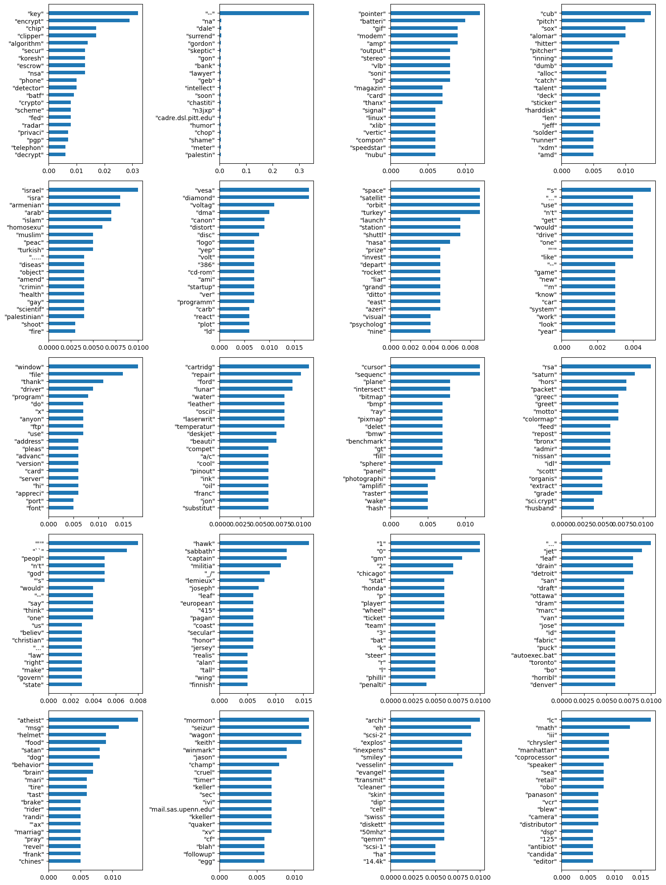

from sklearn.datasets import fetch_20newsgroupsTopic modeling
We are going to look at data from the 20 Newsgroups dataset. These are postings to newsgroups in 20 different categories.
Scikit-learn has a function for downloading the data. See: https://scikit-learn.org/stable/modules/generated/sklearn.datasets.fetch_20newsgroups.html
LDA
Latent Dirichlet Allocation: a topic model that generates topics based on a set of documents’ word frequencies.
- Get a “dictionary” that has IDs for all the words along with a record of their word frequencies.
- Use our “bag of words” to generate a list for each document containing its words and their frequencies
- Use gensim to generate an LDA model
Gensim
- “Gensim is an open-source library for unsupervised topic modeling and natural language processing, using modern statistical machine learning.”
- gensim website
data = fetch_20newsgroups(remove=("headers", "footers", "quotes"))print(data.DESCR).. _20newsgroups_dataset:
The 20 newsgroups text dataset
------------------------------
The 20 newsgroups dataset comprises around 18000 newsgroups posts on
20 topics split in two subsets: one for training (or development)
and the other one for testing (or for performance evaluation). The split
between the train and test set is based upon a messages posted before
and after a specific date.
This module contains two loaders. The first one,
:func:`sklearn.datasets.fetch_20newsgroups`,
returns a list of the raw texts that can be fed to text feature
extractors such as :class:`~sklearn.feature_extraction.text.CountVectorizer`
with custom parameters so as to extract feature vectors.
The second one, :func:`sklearn.datasets.fetch_20newsgroups_vectorized`,
returns ready-to-use features, i.e., it is not necessary to use a feature
extractor.
**Data Set Characteristics:**
================= ==========
Classes 20
Samples total 18846
Dimensionality 1
Features text
================= ==========
|details-start|
**Usage**
|details-split|
The :func:`sklearn.datasets.fetch_20newsgroups` function is a data
fetching / caching functions that downloads the data archive from
the original `20 newsgroups website`_, extracts the archive contents
in the ``~/scikit_learn_data/20news_home`` folder and calls the
:func:`sklearn.datasets.load_files` on either the training or
testing set folder, or both of them::
>>> from sklearn.datasets import fetch_20newsgroups
>>> newsgroups_train = fetch_20newsgroups(subset='train')
>>> from pprint import pprint
>>> pprint(list(newsgroups_train.target_names))
['alt.atheism',
'comp.graphics',
'comp.os.ms-windows.misc',
'comp.sys.ibm.pc.hardware',
'comp.sys.mac.hardware',
'comp.windows.x',
'misc.forsale',
'rec.autos',
'rec.motorcycles',
'rec.sport.baseball',
'rec.sport.hockey',
'sci.crypt',
'sci.electronics',
'sci.med',
'sci.space',
'soc.religion.christian',
'talk.politics.guns',
'talk.politics.mideast',
'talk.politics.misc',
'talk.religion.misc']
The real data lies in the ``filenames`` and ``target`` attributes. The target
attribute is the integer index of the category::
>>> newsgroups_train.filenames.shape
(11314,)
>>> newsgroups_train.target.shape
(11314,)
>>> newsgroups_train.target[:10]
array([ 7, 4, 4, 1, 14, 16, 13, 3, 2, 4])
It is possible to load only a sub-selection of the categories by passing the
list of the categories to load to the
:func:`sklearn.datasets.fetch_20newsgroups` function::
>>> cats = ['alt.atheism', 'sci.space']
>>> newsgroups_train = fetch_20newsgroups(subset='train', categories=cats)
>>> list(newsgroups_train.target_names)
['alt.atheism', 'sci.space']
>>> newsgroups_train.filenames.shape
(1073,)
>>> newsgroups_train.target.shape
(1073,)
>>> newsgroups_train.target[:10]
array([0, 1, 1, 1, 0, 1, 1, 0, 0, 0])
|details-end|
|details-start|
**Converting text to vectors**
|details-split|
In order to feed predictive or clustering models with the text data,
one first need to turn the text into vectors of numerical values suitable
for statistical analysis. This can be achieved with the utilities of the
``sklearn.feature_extraction.text`` as demonstrated in the following
example that extract `TF-IDF`_ vectors of unigram tokens
from a subset of 20news::
>>> from sklearn.feature_extraction.text import TfidfVectorizer
>>> categories = ['alt.atheism', 'talk.religion.misc',
... 'comp.graphics', 'sci.space']
>>> newsgroups_train = fetch_20newsgroups(subset='train',
... categories=categories)
>>> vectorizer = TfidfVectorizer()
>>> vectors = vectorizer.fit_transform(newsgroups_train.data)
>>> vectors.shape
(2034, 34118)
The extracted TF-IDF vectors are very sparse, with an average of 159 non-zero
components by sample in a more than 30000-dimensional space
(less than .5% non-zero features)::
>>> vectors.nnz / float(vectors.shape[0])
159.01327...
:func:`sklearn.datasets.fetch_20newsgroups_vectorized` is a function which
returns ready-to-use token counts features instead of file names.
.. _`20 newsgroups website`: http://people.csail.mit.edu/jrennie/20Newsgroups/
.. _`TF-IDF`: https://en.wikipedia.org/wiki/Tf-idf
|details-end|
|details-start|
**Filtering text for more realistic training**
|details-split|
It is easy for a classifier to overfit on particular things that appear in the
20 Newsgroups data, such as newsgroup headers. Many classifiers achieve very
high F-scores, but their results would not generalize to other documents that
aren't from this window of time.
For example, let's look at the results of a multinomial Naive Bayes classifier,
which is fast to train and achieves a decent F-score::
>>> from sklearn.naive_bayes import MultinomialNB
>>> from sklearn import metrics
>>> newsgroups_test = fetch_20newsgroups(subset='test',
... categories=categories)
>>> vectors_test = vectorizer.transform(newsgroups_test.data)
>>> clf = MultinomialNB(alpha=.01)
>>> clf.fit(vectors, newsgroups_train.target)
MultinomialNB(alpha=0.01, class_prior=None, fit_prior=True)
>>> pred = clf.predict(vectors_test)
>>> metrics.f1_score(newsgroups_test.target, pred, average='macro')
0.88213...
(The example :ref:`sphx_glr_auto_examples_text_plot_document_classification_20newsgroups.py` shuffles
the training and test data, instead of segmenting by time, and in that case
multinomial Naive Bayes gets a much higher F-score of 0.88. Are you suspicious
yet of what's going on inside this classifier?)
Let's take a look at what the most informative features are:
>>> import numpy as np
>>> def show_top10(classifier, vectorizer, categories):
... feature_names = vectorizer.get_feature_names_out()
... for i, category in enumerate(categories):
... top10 = np.argsort(classifier.coef_[i])[-10:]
... print("%s: %s" % (category, " ".join(feature_names[top10])))
...
>>> show_top10(clf, vectorizer, newsgroups_train.target_names)
alt.atheism: edu it and in you that is of to the
comp.graphics: edu in graphics it is for and of to the
sci.space: edu it that is in and space to of the
talk.religion.misc: not it you in is that and to of the
You can now see many things that these features have overfit to:
- Almost every group is distinguished by whether headers such as
``NNTP-Posting-Host:`` and ``Distribution:`` appear more or less often.
- Another significant feature involves whether the sender is affiliated with
a university, as indicated either by their headers or their signature.
- The word "article" is a significant feature, based on how often people quote
previous posts like this: "In article [article ID], [name] <[e-mail address]>
wrote:"
- Other features match the names and e-mail addresses of particular people who
were posting at the time.
With such an abundance of clues that distinguish newsgroups, the classifiers
barely have to identify topics from text at all, and they all perform at the
same high level.
For this reason, the functions that load 20 Newsgroups data provide a
parameter called **remove**, telling it what kinds of information to strip out
of each file. **remove** should be a tuple containing any subset of
``('headers', 'footers', 'quotes')``, telling it to remove headers, signature
blocks, and quotation blocks respectively.
>>> newsgroups_test = fetch_20newsgroups(subset='test',
... remove=('headers', 'footers', 'quotes'),
... categories=categories)
>>> vectors_test = vectorizer.transform(newsgroups_test.data)
>>> pred = clf.predict(vectors_test)
>>> metrics.f1_score(pred, newsgroups_test.target, average='macro')
0.77310...
This classifier lost over a lot of its F-score, just because we removed
metadata that has little to do with topic classification.
It loses even more if we also strip this metadata from the training data:
>>> newsgroups_train = fetch_20newsgroups(subset='train',
... remove=('headers', 'footers', 'quotes'),
... categories=categories)
>>> vectors = vectorizer.fit_transform(newsgroups_train.data)
>>> clf = MultinomialNB(alpha=.01)
>>> clf.fit(vectors, newsgroups_train.target)
MultinomialNB(alpha=0.01, class_prior=None, fit_prior=True)
>>> vectors_test = vectorizer.transform(newsgroups_test.data)
>>> pred = clf.predict(vectors_test)
>>> metrics.f1_score(newsgroups_test.target, pred, average='macro')
0.76995...
Some other classifiers cope better with this harder version of the task. Try the
:ref:`sphx_glr_auto_examples_model_selection_plot_grid_search_text_feature_extraction.py`
example with and without the `remove` option to compare the results.
|details-end|
.. topic:: Data Considerations
The Cleveland Indians is a major league baseball team based in Cleveland,
Ohio, USA. In December 2020, it was reported that "After several months of
discussion sparked by the death of George Floyd and a national reckoning over
race and colonialism, the Cleveland Indians have decided to change their
name." Team owner Paul Dolan "did make it clear that the team will not make
its informal nickname -- the Tribe -- its new team name." "It's not going to
be a half-step away from the Indians," Dolan said."We will not have a Native
American-themed name."
https://www.mlb.com/news/cleveland-indians-team-name-change
.. topic:: Recommendation
- When evaluating text classifiers on the 20 Newsgroups data, you
should strip newsgroup-related metadata. In scikit-learn, you can do this
by setting ``remove=('headers', 'footers', 'quotes')``. The F-score will be
lower because it is more realistic.
- This text dataset contains data which may be inappropriate for certain NLP
applications. An example is listed in the "Data Considerations" section
above. The challenge with using current text datasets in NLP for tasks such
as sentence completion, clustering, and other applications is that text
that is culturally biased and inflammatory will propagate biases. This
should be taken into consideration when using the dataset, reviewing the
output, and the bias should be documented.
.. topic:: Examples
* :ref:`sphx_glr_auto_examples_model_selection_plot_grid_search_text_feature_extraction.py`
* :ref:`sphx_glr_auto_examples_text_plot_document_classification_20newsgroups.py`
* :ref:`sphx_glr_auto_examples_text_plot_hashing_vs_dict_vectorizer.py`
* :ref:`sphx_glr_auto_examples_text_plot_document_clustering.py`
x = data.datalen(x)11314x[0]'I was wondering if anyone out there could enlighten me on this car I saw\nthe other day. It was a 2-door sports car, looked to be from the late 60s/\nearly 70s. It was called a Bricklin. The doors were really small. In addition,\nthe front bumper was separate from the rest of the body. This is \nall I know. If anyone can tellme a model name, engine specs, years\nof production, where this car is made, history, or whatever info you\nhave on this funky looking car, please e-mail.'data.target_names['alt.atheism',
'comp.graphics',
'comp.os.ms-windows.misc',
'comp.sys.ibm.pc.hardware',
'comp.sys.mac.hardware',
'comp.windows.x',
'misc.forsale',
'rec.autos',
'rec.motorcycles',
'rec.sport.baseball',
'rec.sport.hockey',
'sci.crypt',
'sci.electronics',
'sci.med',
'sci.space',
'soc.religion.christian',
'talk.politics.guns',
'talk.politics.mideast',
'talk.politics.misc',
'talk.religion.misc']data.targetarray([7, 4, 4, ..., 3, 1, 8])We use NLTK to pre-process the words.
from nltk.tokenize import sent_tokenize, word_tokenize
from nltk.corpus import stopwords
from string import punctuationmyStopWords = list(punctuation) + stopwords.words('english')x[0]'I was wondering if anyone out there could enlighten me on this car I saw\nthe other day. It was a 2-door sports car, looked to be from the late 60s/\nearly 70s. It was called a Bricklin. The doors were really small. In addition,\nthe front bumper was separate from the rest of the body. This is \nall I know. If anyone can tellme a model name, engine specs, years\nof production, where this car is made, history, or whatever info you\nhave on this funky looking car, please e-mail.'[w for w in word_tokenize(x[0].lower()) if w not in myStopWords]['wondering',
'anyone',
'could',
'enlighten',
'car',
'saw',
'day',
'2-door',
'sports',
'car',
'looked',
'late',
'60s/',
'early',
'70s',
'called',
'bricklin',
'doors',
'really',
'small',
'addition',
'front',
'bumper',
'separate',
'rest',
'body',
'know',
'anyone',
'tellme',
'model',
'name',
'engine',
'specs',
'years',
'production',
'car',
'made',
'history',
'whatever',
'info',
'funky',
'looking',
'car',
'please',
'e-mail']docs = []
for i in x:
docs.append([w for w in word_tokenize(i.lower()) if w not in myStopWords])docs[0]['wondering',
'anyone',
'could',
'enlighten',
'car',
'saw',
'day',
'2-door',
'sports',
'car',
'looked',
'late',
'60s/',
'early',
'70s',
'called',
'bricklin',
'doors',
'really',
'small',
'addition',
'front',
'bumper',
'separate',
'rest',
'body',
'know',
'anyone',
'tellme',
'model',
'name',
'engine',
'specs',
'years',
'production',
'car',
'made',
'history',
'whatever',
'info',
'funky',
'looking',
'car',
'please',
'e-mail']from nltk.stem.porter import PorterStemmer
#from nltk.stem import LancasterStemmer# Create p_stemmer of class PorterStemmer
p_stemmer = PorterStemmer()docs_stemmed = []
for i in docs:
docs_stemmed.append([p_stemmer.stem(w) for w in i])docs_stemmed[0]['wonder',
'anyon',
'could',
'enlighten',
'car',
'saw',
'day',
'2-door',
'sport',
'car',
'look',
'late',
'60s/',
'earli',
'70',
'call',
'bricklin',
'door',
'realli',
'small',
'addit',
'front',
'bumper',
'separ',
'rest',
'bodi',
'know',
'anyon',
'tellm',
'model',
'name',
'engin',
'spec',
'year',
'product',
'car',
'made',
'histori',
'whatev',
'info',
'funki',
'look',
'car',
'pleas',
'e-mail']Here we use gensim to make the dictionary and corpus structures, and to employ the LDA model to extract groups (aka topics) and the distribution of words for each topic.
from gensim import corpora, models
import gensimdictionary = corpora.Dictionary(docs_stemmed)len(dictionary)126516dictionary.filter_extremes(no_below=10, no_above=0.5)
# could also trim with keep_n=1000 or similar to keep only the top wordslen(dictionary)7699print(dictionary.token2id){'70': 0, 'addit': 1, 'anyon': 2, 'bodi': 3, 'bumper': 4, 'call': 5, 'car': 6, 'could': 7, 'day': 8, 'door': 9, 'e-mail': 10, 'earli': 11, 'engin': 12, 'enlighten': 13, 'front': 14, 'histori': 15, 'info': 16, 'know': 17, 'late': 18, 'look': 19, 'made': 20, 'model': 21, 'name': 22, 'pleas': 23, 'product': 24, 'realli': 25, 'rest': 26, 'saw': 27, 'separ': 28, 'small': 29, 'spec': 30, 'sport': 31, 'whatev': 32, 'wonder': 33, 'year': 34, '1.4': 35, '800': 36, 'adapt': 37, 'add': 38, 'answer': 39, 'attain': 40, 'base': 41, 'brave': 42, 'brief': 43, 'card': 44, 'clock': 45, 'cpu': 46, 'detail': 47, 'disk': 48, 'done': 49, 'especi': 50, 'experi': 51, 'fair': 52, 'floppi': 53, 'function': 54, 'heat': 55, 'hour': 56, 'knowledg': 57, 'messag': 58, "n't": 59, 'network': 60, 'next': 61, 'number': 62, 'oscil': 63, 'per': 64, 'poll': 65, 'procedur': 66, 'rate': 67, 'request': 68, 'send': 69, 'share': 70, 'si': 71, 'sink': 72, 'soul': 73, 'speed': 74, 'summar': 75, 'thank': 76, 'top': 77, 'two': 78, 'upgrad': 79, 'usag': 80, "''": 81, "'d": 82, "'ll": 83, "'m": 84, "'s": 85, "'ve": 86, '--': 87, '...': 88, '120': 89, '160': 90, '180': 91, '512k': 92, '80mb': 93, '``': 94, 'access': 95, 'activ': 96, 'actual': 97, 'advanc': 98, 'anybodi': 99, 'anymor': 100, 'appear': 101, 'around': 102, 'back': 103, 'better': 104, 'bit': 105, 'bunch': 106, 'comput': 107, 'corner': 108, 'daili': 109, 'dirt': 110, 'display': 111, 'drop': 112, 'duo': 113, 'electr': 114, 'email': 115, 'expect': 116, 'feel': 117, 'figur': 118, 'final': 119, 'folk': 120, 'gave': 121, 'get': 122, 'ghost': 123, 'good': 124, 'got': 125, 'great': 126, 'heard': 127, 'help': 128, 'hit': 129, 'hope': 130, 'impress': 131, 'intend': 132, 'introduct': 133, 'life': 134, 'like': 135, 'line': 136, 'mac': 137, 'machin': 138, 'make': 139, 'market': 140, 'mayb': 141, 'might': 142, 'money': 143, 'much': 144, 'new': 145, 'news': 146, 'one': 147, 'opinion': 148, 'peopl': 149, 'perform': 150, 'pick': 151, 'play': 152, 'plu': 153, 'post': 154, 'powerbook': 155, 'premium': 156, 'price': 157, 'probabl': 158, 'prove': 159, 'question': 160, 'rather': 161, 'read': 162, 'real': 163, 'realiz': 164, 'recent': 165, 'round': 166, 'rumor': 167, 'sinc': 168, 'size': 169, 'solicit': 170, 'somebodi': 171, 'sooner': 172, 'start': 173, 'store': 174, 'subject': 175, 'summari': 176, 'summer': 177, 'suppos': 178, 'swing': 179, 'take': 180, 'time': 181, 'tom': 182, 'use': 183, 'way': 184, 'weekend': 185, 'well': 186, 'went': 187, 'willi': 188, 'worth': 189, 'wow': 190, 'yea': 191, 'chip': 192, 'inform': 193, '213': 194, 'articl': 195, 'baker': 196, 'basic': 197, 'bug': 198, 'check': 199, 'code': 200, 'crew': 201, 'error': 202, 'fix': 203, 'ignor': 204, 'introduc': 205, 'known': 206, 'launch': 207, 'possibl': 208, 'right': 209, 'see': 210, 'set': 211, 'softwar': 212, 'system': 213, 'tell': 214, 'thing': 215, 'till': 216, 'understand': 217, 'valu': 218, 'warn': 219, 'world.std.com': 220, 'yet': 221, 'allegedli': 222, 'allow': 223, 'analysi': 224, 'anoth': 225, 'argument': 226, 'bill': 227, 'class': 228, 'commonli': 229, 'consid': 230, 'cours': 231, 'defin': 232, 'destruct': 233, 'doubt': 234, 'evid': 235, 'first': 236, 'given': 237, 'later': 238, 'mass': 239, 'must': 240, 'point': 241, 'present': 242, 'quot': 243, 'show': 244, 'switch': 245, 'term': 246, 'topic': 247, 'understood': 248, 'weapon': 249, '....': 250, 'accident': 251, 'delet': 252, 'directli': 253, 'everyon': 254, 'file': 255, 'glad': 256, 'hmmm': 257, 'instead': 258, 'last': 259, 'publicli': 260, 'respond': 261, 'rm': 262, 'sean': 263, 'septemb': 264, 'sharon': 265, 'sure': 266, 'thought': 267, 'treatment': 268, 'tri': 269, "what'": 270, '161': 271, '20': 272, '8-bit': 273, 'although': 274, 'appl': 275, 'avail': 276, 'burst': 277, 'control': 278, 'correct': 279, 'data': 280, 'document': 281, 'driven': 282, 'esdi': 283, 'exist': 284, 'fact': 285, 'fast': 286, 'faster': 287, 'ftp': 288, 'go': 289, 'ibm': 290, 'ide': 291, 'increas': 292, 'inde': 293, 'interfac': 294, 'maximum': 295, 'may': 296, 'mode': 297, 'newsgroup': 298, 'note': 299, 'part': 300, 'pc': 301, 'problem': 302, 'quadra': 303, 'rang': 304, 'reach': 305, 'said': 306, 'scsi': 307, 'scsi-1': 308, 'scsi-2': 309, 'seem': 310, 'sheet': 311, 'slower': 312, 'still': 313, 'synchron': 314, 'think': 315, 'though': 316, 'true': 317, 'twice': 318, 'version': 319, '3.0': 320, 'appreci': 321, 'bmp': 322, 'ca': 323, 'chang': 324, 'download': 325, 'icon': 326, 'sever': 327, 'thanx': 328, 'wallpap': 329, 'win': 330, 'would': 331, "'re": 332, 'board': 333, 'buy': 334, 'competit': 335, 'compress': 336, 'dd': 337, 'due': 338, 'els': 339, 'expand': 340, 'expans': 341, 'fault': 342, 'freewar': 343, 'hard': 344, 'hey': 345, 'hole': 346, 'howev': 347, 'instal': 348, 'licens': 349, 'lost': 350, 'memori': 351, 'mention': 352, 'owner': 353, 'refer': 354, 'relat': 355, 'reluct': 356, 'sad': 357, 'say': 358, 'someth': 359, 'technolog': 360, 'troubl': 361, 'unless': 362, 'unlik': 363, 'usual': 364, 'util': 365, 'whether': 366, 'without': 367, 'work': 368, 'write': 369, 'wrong': 370, '1': 371, '1978': 372, '1st': 373, '3k': 374, 'axi': 375, 'beemer': 376, 'bike': 377, 'dod': 378, 'fade': 379, 'leak': 380, 'mate': 381, 'motor': 382, 'nice': 383, 'oil': 384, 'paint': 385, 'pop': 386, 'run': 387, 'shop': 388, 'sold': 389, 'stabl': 390, 'therefor': 391, 'tran': 392, 'tx': 393, 'want': 394, 'abraham': 395, 'absolut': 396, 'analog': 397, 'ancestor': 398, 'anim': 399, 'anyth': 400, 'asid': 401, 'assum': 402, 'attempt': 403, 'bar': 404, 'believ': 405, 'bibl': 406, 'biblic': 407, 'boundari': 408, 'cart': 409, 'case': 410, 'child': 411, 'children': 412, 'christ': 413, 'christian': 414, 'come': 415, 'conclus': 416, 'coven': 417, 'creat': 418, 'david': 419, 'debunk': 420, 'decid': 421, 'differ': 422, 'direct': 423, 'disobey': 424, 'essenc': 425, 'establish': 426, 'even': 427, 'exampl': 428, 'faith': 429, 'fall': 430, 'follow': 431, 'found': 432, 'foundat': 433, 'guess': 434, 'happi': 435, 'historian': 436, 'hold': 437, 'human': 438, 'imag': 439, 'inappropri': 440, 'incident': 441, 'indic': 442, 'inher': 443, 'initi': 444, 'interpret': 445, 'jesu': 446, 'jew': 447, 'jewish': 448, 'judaism': 449, 'lead': 450, 'learn': 451, 'littl': 452, 'live': 453, 'man': 454, 'mankind': 455, 'mean': 456, 'metaphor': 457, 'mix': 458, 'modern': 459, 'moral': 460, 'mose': 461, 'multipl': 462, 'necessarili': 463, 'never': 464, 'older': 465, 'outsid': 466, 'parent': 467, 'person': 468, 'pharise': 469, 'pretti': 470, 'pub': 471, 'quit': 472, 'record': 473, 'relationship': 474, 'relev': 475, 'religion': 476, 'requir': 477, 'revel': 478, 'script': 479, 'simpli': 480, 'specul': 481, 'swear': 482, 'told': 483, 'torah': 484, 'type': 485, 'upset': 486, 'utter': 487, 'water': 488, 'wherea': 489, 'wors': 490, 'yep': 491, 'young': 492, '10': 493, '14': 494, '24': 495, '2nd': 496, '3': 497, '30': 498, '3rd': 499, '60': 500, '8': 501, 'achiev': 502, 'ad': 503, 'adopt': 504, 'advisori': 505, 'air': 506, 'alot': 507, 'also': 508, 'approach': 509, 'array': 510, 'arrow': 511, 'assembl': 512, 'assur': 513, 'b': 514, 'bu': 515, 'build': 516, 'c': 517, 'capabl': 518, 'citi': 519, 'common': 520, 'commun': 521, 'cost': 522, 'crystal': 523, 'current': 524, 'deploy': 525, 'deriv': 526, 'descript': 527, 'design': 528, 'develop': 529, 'dock': 530, 'edit': 531, 'environ': 532, 'esa': 533, 'except': 534, 'extern': 535, 'featur': 536, 'finish': 537, 'fli': 538, 'flight': 539, 'forc': 540, 'freedom': 541, 'fuel': 542, 'giant': 543, 'habit': 544, 'inclin': 545, 'intern': 546, 'keep': 547, 'ken': 548, 'key': 549, 'lab': 550, 'languag': 551, 'let': 552, 'list': 553, 'locat': 554, 'love': 555, 'low': 556, 'major': 557, 'manag': 558, 'meet': 559, 'mike': 560, 'mission': 561, 'modifi': 562, 'modul': 563, 'modular': 564, 'node': 565, 'obtain': 566, 'occur': 567, 'old': 568, 'on-board': 569, 'oppos': 570, 'optim': 571, 'option': 572, 'orbit': 573, 'panel': 574, 'partner': 575, 'perman': 576, 'phase': 577, 'place': 578, 'port': 579, 'power': 580, 'presenc': 581, 'propos': 582, 'propuls': 583, 'provid': 584, 'qualifi': 585, 'radiat': 586, 'redesign': 587, 'remov': 588, 'report': 589, 'research': 590, 'respect': 591, 'return': 592, 'second': 593, 'shuttl': 594, 'six': 595, 'solar': 596, 'sometim': 597, 'sourc': 598, 'space': 599, 'ssf': 600, 'st': 601, 'station': 602, 'studi': 603, 'support': 604, 'tail': 605, 'tank': 606, 'team': 607, 'tend': 608, "that'": 609, 'thermal': 610, 'three': 611, 'today': 612, 'toler': 613, 'transfer': 614, 'u.s.': 615, 'us': 616, 'vehicl': 617, 'visit': 618, 'wing': 619, 'yesterday': 620, 'yo': 621, 'york': 622, '12': 623, '1400': 624, '2': 625, '25': 626, '32': 627, '4': 628, '5': 629, '50': 630, '6': 631, '80': 632, '9': 633, 'accessori': 634, 'alreadi': 635, 'alway': 636, 'am/fm': 637, 'angl': 638, 'ask': 639, 'bag': 640, 'behalf': 641, 'bet': 642, 'black': 643, 'brand': 644, 'brother': 645, 'cassett': 646, 'contact': 647, 'deck': 648, 'dri': 649, 'dual': 650, 'equal': 651, 'extra': 652, 'forsal': 653, 'graphic': 654, 'hair': 655, 'hand': 656, 'head': 657, 'high': 658, 'includ': 659, 'iron': 660, 'japan': 661, 'leather': 662, 'move': 663, 'offer': 664, 'player': 665, 'portabl': 666, 'purchas': 667, 'put': 668, 'reason': 669, 'reduc': 670, 'repli': 671, 'sound': 672, 'spray': 673, 'steam': 674, 'thru': 675, 'wide': 676, 'zoom': 677, 'afford': 678, 'camp': 679, 'caus': 680, 'citizen': 681, 'concentr': 682, 'die': 683, 'diseas': 684, 'gass': 685, 'gener': 686, 'happen': 687, 'ii': 688, 'imprison': 689, 'japanes': 690, 'nazi': 691, 'origin': 692, 'partli': 693, 'prepar': 694, 'short': 695, 'solut': 696, 'step': 697, 'stick': 698, 'total': 699, 'trial': 700, 'war': 701, 'world': 702, '5.0': 703, 'abl': 704, 'abus': 705, 'agre': 706, 'amount': 707, 'applic': 708, 'bizarr': 709, 'capit': 710, 'certainli': 711, 'complet': 712, 'complex': 713, 'deal': 714, 'despit': 715, 'effort': 716, 'emphasi': 717, 'everi': 718, 'expens': 719, 'flexibl': 720, 'format': 721, 'g': 722, 'goe': 723, 'handl': 724, 'immens': 725, 'import': 726, 'inabl': 727, 'interchang': 728, 'job': 729, 'led': 730, 'load': 731, 'mani': 732, 'mine': 733, 'neither': 734, 'page': 735, 'philosoph': 736, 'poor': 737, 'program': 738, 'save': 739, 'simplic': 740, 'sort': 741, 'specif': 742, 'success': 743, 'tiff': 744, 'trap': 745, 'unnecessari': 746, 'whenev': 747, 'word': 748, 'worri': 749, 'writer': 750, "'85": 751, "'89": 752, "'92": 753, '..': 754, '1,000,000': 755, '100': 756, '100,000': 757, '11': 758, '1200': 759, '15': 760, '18': 761, '1985': 762, '1986': 763, '1987': 764, '1990': 765, '1992': 766, '1992.': 767, '2000': 768, '21': 769, '23': 770, '24.': 771, '250': 772, '26': 773, '27': 774, '28': 775, '35': 776, '37': 777, '38': 778, '39': 779, '41': 780, '415': 781, '43': 782, '45': 783, '500': 784, '55': 785, '600': 786, '61': 787, '64': 788, '85': 789, '8^': 790, '92': 791, '93': 792, 'ab': 793, 'acceler': 794, 'accid': 795, 'account': 796, 'age': 797, 'agent': 798, 'ago': 799, 'airbag': 800, 'alarm': 801, 'albert': 802, 'almost': 803, 'amaz': 804, 'anyway': 805, 'appeal': 806, 'auto': 807, 'away': 808, 'bargain': 809, 'best': 810, 'beyond': 811, 'book': 812, 'boston': 813, 'bought': 814, 'california': 815, 'cancel': 816, 'care': 817, 'cc': 818, 'cellular': 819, 'center': 820, 'chicago': 821, 'claim': 822, 'classif': 823, 'clean': 824, 'clear': 825, 'close': 826, 'co': 827, 'collis': 828, 'compani': 829, 'comprehens': 830, 'conclud': 831, 'conserv': 832, 'continu': 833, 'coordin': 834, 'correctli': 835, 'coupl': 836, 'cover': 837, 'coverag': 838, 'damn': 839, 'dan': 840, 'date': 841, 'de': 842, 'dealer': 843, 'deduct': 844, 'defens': 845, 'disclaim': 846, 'discount': 847, 'distanc': 848, 'divis': 849, 'dodg': 850, 'doubl': 851, 'drive': 852, 'driver': 853, 'eagl': 854, 'eclips': 855, 'either': 856, 'enough': 857, 'entitl': 858, 'escort': 859, 'eventu': 860, 'ever': 861, 'exot': 862, 'failur': 863, 'farm': 864, 'farmer': 865, 'felt': 866, 'fiddl': 867, 'find': 868, 'forecast': 869, 'friend': 870, 'full': 871, 'gift': 872, 'give': 873, 'glass': 874, 'gon': 875, 'group': 876, 'gt': 877, 'guy': 878, 'hell': 879, 'higher': 880, 'honda': 881, 'hous': 882, 'huge': 883, 'idaho': 884, 'illinoi': 885, 'immedi': 886, 'impuls': 887, 'incur': 888, 'inquiri': 889, 'institut': 890, 'insur': 891, 'interest': 892, 'intersect': 893, 'jame': 894, 'jose': 895, 'kevin': 896, 'kill': 897, 'kind': 898, 'knock': 899, 'law': 900, 'less': 901, 'liabil': 902, 'light': 903, 'longer': 904, 'lower': 905, 'lucki': 906, 'luxuri': 907, 'maintain': 908, 'male': 909, 'mazda': 910, 'mexico': 911, 'mile': 912, 'mitsubishi': 913, 'mo': 914, 'month': 915, 'monthli': 916, 'motorola': 917, 'mountain': 918, 'na': 919, 'narrow': 920, 'nearbi': 921, 'neglig': 922, 'newer': 923, 'oasys.dt.navy.mil': 924, 'oct': 925, 'offic': 926, 'oklahoma': 927, 'own': 928, 'p.': 929, 'passiv': 930, 'pay': 931, 'payment': 932, 'pickup': 933, 'polici': 934, 'porsch': 935, 'properti': 936, 'radio': 937, 'readi': 938, 'receiv': 939, 'rememb': 940, 'renew': 941, 'resid': 942, 'respons': 943, 'restraint': 944, 'ridicul': 945, 'rip': 946, 'robert': 947, 'room': 948, 'roughli': 949, 'runner': 950, 'san': 951, 'saturn': 952, 'sc': 953, 'secur': 954, 'sens': 955, 'serious': 956, 'sho': 957, 'sign': 958, 'similar': 959, 'singl': 960, 'situat': 961, 'slight': 962, 'stack': 963, 'standard': 964, 'state': 965, 'stay': 966, 'stealth': 967, 'steve': 968, 'stop': 969, 'stori': 970, 'strictli': 971, 'subscrib': 972, 'taken': 973, 'that': 974, 'theft': 975, 'thunder': 976, 'ticket': 977, 'tough': 978, 'tow': 979, 'town': 980, 'toyota': 981, 'tradit': 982, 'transport': 983, 'turbo': 984, 'turn': 985, 'u': 986, 'univ': 987, 'univers': 988, 'usa': 989, 'v6': 990, 'view': 991, 'violat': 992, 'vs': 993, 'vw': 994, 'w/': 995, 'within': 996, 'wood': 997, 'worst': 998, 'yearli': 999, 'yellow': 1000, 'yr': 1001, '1000': 1002, 'accuraci': 1003, 'acquisit': 1004, 'amplifi': 1005, 'circuit': 1006, 'degre': 1007, 'easili': 1008, 'factor': 1009, 'fed': 1010, 'output': 1011, 'practic': 1012, 'prefer': 1013, 'result': 1014, 'seen': 1015, 'signal': 1016, 'simpl': 1017, 'suffici': 1018, 'voltag': 1019, '1.': 1020, '2.': 1021, 'background': 1022, 'bogu': 1023, 'boot': 1024, 'configur': 1025, 'contain': 1026, 'entri': 1027, 'exact': 1028, 'fail': 1029, 'implement': 1030, 'login': 1031, 'manual': 1032, 'matter': 1033, 'mit': 1034, 'ncd': 1035, 'paramet': 1036, 'session': 1037, 'sun': 1038, 'syntax': 1039, 'tcp/ip': 1040, 'telnet': 1041, 'unix': 1042, 'window': 1043, 'worthless': 1044, 'x-termin': 1045, 'x.': 1046, 'x11r4': 1047, 'xhost': 1048, 'least': 1049, 'motto': 1050, 'order': 1051, 'captain': 1052, 'darryl': 1053, 'ed': 1054, 'flyer': 1055, 'gretzki': 1056, 'jersey': 1057, 'leaf': 1058, 'oh': 1059, 'oiler': 1060, 'rick': 1061, 'sabr': 1062, 'someon': 1063, 'speak': 1064, 'thoma': 1065, 'torn': 1066, 'trade': 1067, 'yeah': 1068, '408': 1069, '550': 1070, 'address': 1071, 'autom': 1072, 'buyer': 1073, 'campbel': 1074, 'catalog': 1075, 'copi': 1076, 'ensur': 1077, 'fax': 1078, 'focu': 1079, 'free': 1080, 'hardwar': 1081, 'mail': 1082, 'packag': 1083, 'postal': 1084, 's.': 1085, 'street': 1086, 'stuff': 1087, 'tech': 1088, 'toll': 1089, 'ton': 1090, 'tool': 1091, 'touch': 1092, 'u.': 1093, 'wast': 1094, 'biggest': 1095, 'box': 1096, 'charact': 1097, 'click': 1098, 'font': 1099, 'left': 1100, 'simplist': 1101, 'upper': 1102, 'x': 1103, 'blind': 1104, 'cartridg': 1105, 'definit': 1106, 'involv': 1107, 'loop': 1108, 'macintosh': 1109, 'none': 1110, 'adress': 1111, 'avoid': 1112, 'greatli': 1113, 'hassl': 1114, 'hello': 1115, 'input': 1116, 'laboratori': 1117, 'user': 1118, 'vendor': 1119, 'via': 1120, 'virginia': 1121, 'visual': 1122, 'voic': 1123, 'workstat': 1124, '1900': 1125, 'big': 1126, 'bigger': 1127, 'boil': 1128, 'canadian': 1129, 'cold': 1130, 'condens': 1131, 'cool': 1132, 'end': 1133, 'everybodi': 1134, 'fire': 1135, 'fossil': 1136, 'ga': 1137, 'henc': 1138, 'hot': 1139, 'industri': 1140, 'nuclear': 1141, 'offici': 1142, 'otherwis': 1143, 'plant': 1144, 'pollut': 1145, 'reactor': 1146, 'recycl': 1147, 'resourc': 1148, 'river': 1149, 'solid': 1150, 'tower': 1151, 'vintag': 1152, 'doug': 1153, 'hill': 1154, 'mvp': 1155, 'nl': 1156, 'accept': 1157, 'angel': 1158, 'apostl': 1159, 'attack': 1160, 'beauti': 1161, 'becom': 1162, 'constitut': 1163, 'cord': 1164, 'creator': 1165, 'creatur': 1166, 'credibl': 1167, 'danger': 1168, 'destroy': 1169, 'disregard': 1170, 'earth': 1171, 'entiti': 1172, 'environment': 1173, 'express': 1174, 'foot': 1175, 'forget': 1176, 'futur': 1177, 'glori': 1178, 'god': 1179, 'greater': 1180, 'grip': 1181, 'half': 1182, 'happili': 1183, 'health': 1184, 'hidden': 1185, 'infinit': 1186, 'leav': 1187, 'lie': 1188, 'manner': 1189, 'men': 1190, 'mind': 1191, 'mother': 1192, 'mouth': 1193, 'opposit': 1194, 'paul': 1195, 'primarili': 1196, 'proper': 1197, 'push': 1198, 'rare': 1199, 'readili': 1200, 'reject': 1201, 'satan': 1202, 'serv': 1203, 'servic': 1204, 'spend': 1205, 'style': 1206, 'tabl': 1207, 'treat': 1208, 'truth': 1209, 'ultim': 1210, 'wish': 1211, 'ye': 1212, 'brick': 1213, 'depend': 1214, 'ground': 1215, 'lot': 1216, 'middl': 1217, 'mileag': 1218, 'prioriti': 1219, 'protect': 1220, 'safeti': 1221, 'unsaf': 1222, 'volvo': 1223, 'wall': 1224, 'acquir': 1225, 'came': 1226, 'catch': 1227, 'custom': 1228, 'damag': 1229, 'deter': 1230, 'face': 1231, 'local': 1232, 'notifi': 1233, 'regist': 1234, 'replac': 1235, 'sell': 1236, 'serial': 1237, 'soni': 1238, 'stand': 1239, 'stereo': 1240, 'unit': 1241, 'warranti': 1242, 'along': 1243, 'appropri': 1244, 'buri': 1245, 'cap': 1246, 'chemist': 1247, 'condit': 1248, 'counter': 1249, 'diet': 1250, 'escal': 1251, 'father': 1252, 'kid': 1253, 'neighbour': 1254, 'nose': 1255, 'noth': 1256, 'odd': 1257, 'ok.': 1258, 'seriou': 1259, 'shall': 1260, 'son': 1261, 'spot': 1262, 'teenag': 1263, 'vitamin': 1264, 'wari': 1265, 'wash': 1266, 'wierd': 1267, 'domest': 1268, 'explod': 1269, 'past': 1270, 'soviet': 1271, 'televis': 1272, 'union': 1273, '1948': 1274, '42': 1275, 'act': 1276, 'arab': 1277, 'armi': 1278, 'begin': 1279, 'bomb': 1280, 'bring': 1281, 'constant': 1282, 'count': 1283, 'cut': 1284, 'israel': 1285, 'januari': 1286, 'jerusalem': 1287, 'land': 1288, 'liber': 1289, 'link': 1290, 'member': 1291, 'near': 1292, 'northern': 1293, 'plo': 1294, 'popul': 1295, 'road': 1296, 'rocket': 1297, 'rout': 1298, 'settlement': 1299, 'side': 1300, 'slaughter': 1301, 'south': 1302, 'suppli': 1303, 'tel': 1304, 'truck': 1305, 'upris': 1306, 'week': 1307, 'western': 1308, 'appoint': 1309, 'ruler': 1310, 'sight': 1311, 'strang': 1312, 'suprem': 1313, 'cherri': 1314, 'crack': 1315, 'effect': 1316, 'funni': 1317, 'mask': 1318, '/2': 1319, 'ah': 1320, 'ai': 1321, 'bed': 1322, 'boy': 1323, 'campaign': 1324, 'club': 1325, 'crook': 1326, 'dump': 1327, 'grow': 1328, 'lack': 1329, 'long': 1330, 'magazin': 1331, 'obvious': 1332, 'supris': 1333, 'throw': 1334, 'versu': 1335, '18th': 1336, '1970': 1337, 'anywher': 1338, 'assault': 1339, 'assess': 1340, 'automat': 1341, 'bare': 1342, 'batf': 1343, 'calib': 1344, 'claus': 1345, 'clipper': 1346, 'commerc': 1347, 'complaint': 1348, 'congress': 1349, 'court': 1350, 'cryptographi': 1351, 'cryptolog': 1352, 'degrad': 1353, 'deni': 1354, 'drug': 1355, 'encrypt': 1356, 'enforc': 1357, 'enjoy': 1358, 'far': 1359, 'fear': 1360, 'fulfil': 1361, 'furthermor': 1362, 'goal': 1363, 'govern': 1364, 'gun': 1365, 'hate': 1366, 'inadequ': 1367, 'invok': 1368, 'label': 1369, 'larg': 1370, 'latter': 1371, 'law-abid': 1372, 'le': 1373, 'legal': 1374, 'length': 1375, 'levi': 1376, 'mere': 1377, 'merg': 1378, 'mute': 1379, 'need': 1380, 'overturn': 1381, 'phone': 1382, 'prevent': 1383, 'privaci': 1384, 'prohibit': 1385, 'promot': 1386, 'public': 1387, 'regul': 1388, 'reli': 1389, 'restrict': 1390, 'rule': 1391, 'scheme': 1392, 'secreci': 1393, 'statut': 1394, 'strong': 1395, 'stronger': 1396, 'substanc': 1397, 'suspect': 1398, 'tap': 1399, 'target': 1400, 'tax': 1401, 'techniqu': 1402, 'terrorist': 1403, 'vast': 1404, 'weak': 1405, 'wiretap': 1406, 'co.': 1407, 'lawyer': 1408, 'pack': 1409, 'recov': 1410, 'scum': 1411, 'wait': 1412, 'will': 1413, '.....': 1414, '1993': 1415, 'action': 1416, 'admit': 1417, 'advic': 1418, 'ammunit': 1419, 'apr': 1420, 'argu': 1421, 'arm': 1422, 'block': 1423, 'blow': 1424, 'bother': 1425, 'bullet': 1426, 'carri': 1427, 'categori': 1428, 'colt': 1429, 'combat': 1430, 'conveni': 1431, 'cop': 1432, 'cure': 1433, 'cylind': 1434, 'depart': 1435, 'em': 1436, 'err': 1437, 'excel': 1438, 'factori': 1439, 'fan': 1440, 'feed': 1441, 'fight': 1442, 'firearm': 1443, 'fit': 1444, 'fox': 1445, 'gone': 1446, 'hammer': 1447, 'hurt': 1448, 'imagin': 1449, 'issu': 1450, 'jack': 1451, 'limit': 1452, 'lock': 1453, 'malfunct': 1454, 'minut': 1455, 'moder': 1456, 'necessari': 1457, 'notori': 1458, 'often': 1459, 'ok': 1460, 'open': 1461, 'paragraph': 1462, 'pistol': 1463, 'polic': 1464, 'pound': 1465, 'qualiti': 1466, 'redund': 1467, 'resist': 1468, 'revolv': 1469, 'rotat': 1470, 'safe': 1471, 'self': 1472, 'semi': 1473, 'seri': 1474, 'shoot': 1475, 'shot': 1476, 'slide': 1477, 'smith': 1478, 'somewher': 1479, 'sorri': 1480, 'talk.politics.gun': 1481, 'technic': 1482, 'tie': 1483, 'train': 1484, 'vincent': 1485, 'wear': 1486, 'affect': 1487, 'analyz': 1488, 'assist': 1489, 'athlet': 1490, 'ban': 1491, 'basebal': 1492, 'basi': 1493, 'bias': 1494, 'critic': 1495, 'dave': 1496, 'former': 1497, 'game': 1498, 'hire': 1499, 'homosexu': 1500, 'honestli': 1501, 'ludicr': 1502, 'met': 1503, 'miss': 1504, 'previou': 1505, 'protest': 1506, 'racial': 1507, 'reconsid': 1508, 'remain': 1509, 'roger': 1510, 'rose': 1511, 'shea': 1512, 'suspend': 1513, 'suspens': 1514, 'ted': 1515, 'truli': 1516, 'vital': 1517, '350': 1518, 'home': 1519, 'digit': 1520, 'sam': 1521, '2-5': 1522, '8th': 1523, '9th': 1524, 'alright': 1525, 'austin': 1526, 'averag': 1527, 'bad': 1528, 'bat': 1529, 'brewer': 1530, 'bullpen': 1531, 'crush': 1532, 'deficit': 1533, 'era': 1534, 'five': 1535, 'hamilton': 1536, 'held': 1537, 'highest': 1538, 'hitter': 1539, 'hr': 1540, 'inning': 1541, 'jami': 1542, 'kept': 1543, 'lloyd': 1544, 'lowest': 1545, 'mark': 1546, 'milwauke': 1547, 'monday': 1548, 'montreal': 1549, 'offens': 1550, 'okay': 1551, 'ouch': 1552, 'pace': 1553, 'pitch': 1554, 'rbi': 1555, 'relief': 1556, 'score': 1557, 'sent': 1558, 'seven': 1559, 'staff': 1560, 'starter': 1561, 'stat': 1562, 'straight': 1563, 'tim': 1564, 'took': 1565, 'undoubtedli': 1566, 'william': 1567, 'advantag': 1568, 'batter': 1569, 'certain': 1570, 'e.g.': 1571, 'inferior': 1572, 'insist': 1573, 'lefti': 1574, 'mlb': 1575, 'park': 1576, 'perhap': 1577, 'platoon': 1578, 'precis': 1579, 'regardless': 1580, 'regular': 1581, 'reliev': 1582, 'season': 1583, 'seldom': 1584, 'stadium': 1585, 'toronto': 1586, 'viola': 1587, 'vulner': 1588, 'yanke': 1589, 'younger': 1590, 'charg': 1591, 'fee': 1592, 'honesti': 1593, 'comm': 1594, 'emul': 1595, 'kit': 1596, 'net': 1597, 'termin': 1598, '=====': 1599, 'dean': 1600, 'documentari': 1601, 'dr.': 1602, 'easi': 1603, 'escap': 1604, 'harley': 1605, 'mad': 1606, 'max': 1607, 'movi': 1608, 'rebel': 1609, 'rider': 1610, 'student': 1611, 'sunday': 1612, 'technician': 1613, 'travel': 1614, 'violenc': 1615, '3a': 1616, 'batteri': 1617, 'benefit': 1618, 'brilliant': 1619, 'idea': 1620, 'project': 1621, 'pull': 1622, '\\\\': 1623, 'circumfer': 1624, 'hm': 1625, 'mysteri': 1626, 'pat': 1627, 'radiu': 1628, 'sez': 1629, 'suck': 1630, 'vision': 1631, 'wk': 1632, '133': 1633, 'alloc': 1634, 'attach': 1635, 'crash': 1636, 'extens': 1637, 'id': 1638, 'invalid': 1639, 'minor': 1640, 'openwindow': 1641, 'process': 1642, 'segment': 1643, 'stream': 1644, 'ceremoni': 1645, 'clh': 1646, 'command': 1647, 'commonwealth': 1648, 'gentil': 1649, 'plain': 1650, 'portion': 1651, 'sabbath': 1652, 'scriptur': 1653, 'talk': 1654, 'ten': 1655, 'thread': 1656, '1.0': 1657, '3.1': 1658, 'canon': 1659, 'hi': 1660, 'printer': 1661, 'updat': 1662, 'ver': 1663, 'adequ': 1664, 'distinguish': 1665, 'luck': 1666, 'medicin': 1667, 'patient': 1668, 'preach': 1669, 'rich': 1670, '16': 1671, '162': 1672, '163': 1673, '1919': 1674, '1920': 1675, '2.5': 1676, '52': 1677, '6-1': 1678, 'affair': 1679, 'alli': 1680, 'anatolia': 1681, 'annihil': 1682, 'archiv': 1683, 'argic': 1684, 'armenian': 1685, 'atroc': 1686, 'author': 1687, 'barbar': 1688, 'behind': 1689, 'cabin': 1690, 'caucasian': 1691, 'church': 1692, 'collect': 1693, 'commit': 1694, 'content': 1695, 'corp': 1696, 'defenseless': 1697, 'deserv': 1698, 'desir': 1699, 'destin': 1700, 'director': 1701, 'donat': 1702, 'drawer': 1703, 'eight': 1704, 'elderli': 1705, 'fame': 1706, 'foreign': 1707, 'gain': 1708, 'gather': 1709, 'genocid': 1710, 'georgia': 1711, 'hall': 1712, 'inhabit': 1713, 'inhuman': 1714, 'inspector': 1715, 'intellig': 1716, 'june': 1717, 'kurdish': 1718, 'letter': 1719, 'librari': 1720, 'lord': 1721, 'm.': 1722, 'massacr': 1723, 'merchant': 1724, 'militari': 1725, 'militia': 1726, 'million': 1727, 'moslem': 1728, 'murder': 1729, 'night': 1730, 'obstruct': 1731, 'occup': 1732, 'openli': 1733, 'parti': 1734, 'posit': 1735, 'pretend': 1736, 'region': 1737, 'regularli': 1738, 'restor': 1739, 'ruin': 1740, 'russian': 1741, 'satisfactori': 1742, 'section': 1743, 'serdar': 1744, 'shield': 1745, 'special': 1746, 'squar': 1747, 'stanford': 1748, 'statement': 1749, 'subsequ': 1750, 'succeed': 1751, 'suppress': 1752, 'sympathi': 1753, 'systemat': 1754, 'threat': 1755, 'turkish': 1756, 'unknown': 1757, 'useless': 1758, 'villag': 1759, 'volum': 1760, 'w.': 1761, 'women': 1762, 'wound': 1763, 'wrote': 1764, 'zone': 1765, '3.': 1766, 'algorithm': 1767, 'countri': 1768, 'crypto': 1769, 'export': 1770, 'freeli': 1771, 'legisl': 1772, 'pass': 1773, 'rsa': 1774, 'snail': 1775, 'white': 1776, '4th': 1777, 'assumpt': 1778, 'briefli': 1779, 'combin': 1780, 'conceiv': 1781, 'cruis': 1782, 'curv': 1783, 'delay': 1784, 'deliv': 1785, 'depress': 1786, 'distract': 1787, 'dumb': 1788, 'econom': 1789, 'electron': 1790, 'entail': 1791, 'explan': 1792, 'gear': 1793, 'green': 1794, 'handi': 1795, 'highway': 1796, 'i.e': 1797, 'imo': 1798, 'lift': 1799, 'measur': 1800, 'obviou': 1801, 'pedal': 1802, 'red': 1803, 'rev': 1804, 'rom': 1805, 'sit': 1806, 'smart': 1807, 'subaru': 1808, "there'": 1809, 'throttl': 1810, 'aliv': 1811, 'fish': 1812, 'kinda': 1813, 'squid': 1814, 'do': 1815, 'exactli': 1816, 'host': 1817, 'nt': 1818, 'win.ini': 1819, '1.5': 1820, '1993.': 1821, '1994': 1822, '5.2': 1823, '93/04/01': 1824, 'abandon': 1825, 'accomplish': 1826, 'accur': 1827, 'agenc': 1828, 'antenna': 1829, 'apollo': 1830, 'approxim': 1831, 'archive-nam': 1832, 'arian': 1833, 'arriv': 1834, 'aspect': 1835, 'asteroid': 1836, 'astronom': 1837, 'astronomi': 1838, 'astrophys': 1839, 'atmospher': 1840, 'au': 1841, 'aug': 1842, 'backup': 1843, 'belt': 1844, 'bent': 1845, 'birth': 1846, 'booster': 1847, 'camera': 1848, 'ccd': 1849, 'character': 1850, 'characterist': 1851, 'chemic': 1852, 'cloud': 1853, 'collector': 1854, 'comet': 1855, 'compon': 1856, 'conduct': 1857, 'construct': 1858, 'context': 1859, 'contribut': 1860, 'cosmic': 1861, 'dec': 1862, 'delta': 1863, 'demonstr': 1864, 'descend': 1865, 'describ': 1866, 'determin': 1867, 'discov': 1868, 'distant': 1869, 'dutch': 1870, 'dynam': 1871, 'element': 1872, 'emiss': 1873, 'encount': 1874, 'energi': 1875, 'enter': 1876, 'entir': 1877, 'eo': 1878, 'equip': 1879, 'essenti': 1880, 'etc': 1881, 'european': 1882, 'evolut': 1883, 'explor': 1884, 'facil': 1885, 'fate': 1886, 'februari': 1887, 'form': 1888, 'galaxi': 1889, 'galileo': 1890, 'global': 1891, 'graviti': 1892, 'ice': 1893, 'instrument': 1894, 'intens': 1895, 'interior': 1896, 'investig': 1897, 'isa': 1898, 'isol': 1899, 'j': 1900, 'jean': 1901, 'jeffrey': 1902, 'joint': 1903, 'journey': 1904, 'jpl': 1905, 'jul': 1906, 'jupit': 1907, 'lake': 1908, 'last-modifi': 1909, 'layer': 1910, 'level': 1911, 'lifetim': 1912, 'liquid': 1913, 'lo': 1914, 'long-term': 1915, 'lunar': 1916, 'magellan': 1917, 'magnet': 1918, 'maneuv': 1919, 'manifest': 1920, 'map': 1921, 'mar': 1922, 'martian': 1923, 'mechan': 1924, 'mercuri': 1925, 'moon': 1926, 'mu': 1927, 'nasa': 1928, 'nation': 1929, 'natur': 1930, 'neutron': 1931, 'north': 1932, 'object': 1933, 'observ': 1934, 'observatori': 1935, 'ocean': 1936, 'octob': 1937, 'onto': 1938, 'oper': 1939, 'outer': 1940, 'ozon': 1941, 'pari': 1942, 'passag': 1943, 'path': 1944, 'peer': 1945, 'physic': 1946, 'physicist': 1947, 'plan': 1948, 'plane': 1949, 'planet': 1950, 'planetari': 1951, 'platform': 1952, 'pluto': 1953, 'polar': 1954, 'pole': 1955, 'press': 1956, 'primari': 1957, 'primit': 1958, 'probe': 1959, 'produc': 1960, 'proport': 1961, 'radar': 1962, 'rain': 1963, 'relay': 1964, 'releas': 1965, 'resolut': 1966, 'resolv': 1967, 'retriev': 1968, 'ring': 1969, 'robot': 1970, 'ron': 1971, 'rover': 1972, 'sampl': 1973, 'satellit': 1974, 'scan': 1975, 'schedul': 1976, 'scienc': 1977, 'scientif': 1978, 'sea': 1979, 'search': 1980, 'sensor': 1981, 'sky': 1982, 'smaller': 1983, 'soft': 1984, 'spacecraft': 1985, 'spectrum': 1986, 'split': 1987, 'spring': 1988, 'star': 1989, 'stole': 1990, 'structur': 1991, 'stuck': 1992, 'substanti': 1993, 'surfac': 1994, 'surprisingli': 1995, 'surround': 1996, 'survey': 1997, 'telescop': 1998, 'third': 1999, 'tilt': 2000, 'tini': 2001, 'titan': 2002, 'tour': 2003, 'toward': 2004, 'track': 2005, 'trajectori': 2006, 'transit': 2007, 'uniqu': 2008, 'upcom': 2009, 'upon': 2010, 'v.': 2011, 'vapor': 2012, 'variabl': 2013, 'variat': 2014, 'variou': 2015, 'venu': 2016, 'wave': 2017, 'welcom': 2018, 'wind': 2019, 'x-ray': 2020, 'netter': 2021, 'site': 2022, "can't": 2023, 'export.lcs.mit.edu': 2024, 'faq': 2025, 'regress': 2026, 'server': 2027, 'test': 2028, 'verif': 2029, 'x/motif': 2030, 'area': 2031, 'bay': 2032, 'e': 2033, 'notic': 2034, 'p': 2035, 'sf': 2036, 'toshiba': 2037, 'break': 2038, 'cd': 2039, 'charl': 2040, 'divers': 2041, 'heart': 2042, 'joe': 2043, 'automobil': 2044, 'ford': 2045, 'guilti': 2046, 'innoc': 2047, 'loui': 2048, 'otto': 2049, 'partial': 2050, 'ancient': 2051, 'appli': 2052, 'concept': 2053, 'evolv': 2054, 'explain': 2055, 'greek': 2056, 'infin': 2057, 'mathemat': 2058, 'realiti': 2059, '301': 2060, '97': 2061, 'administr': 2062, 'domain': 2063, 'inc.': 2064, 'infam': 2065, 'md': 2066, 'stephen': 2067, 't.': 2068, 'trust': 2069, 'walker': 2070, 'washington': 2071, 'alcohol': 2072, 'atf': 2073, 'besid': 2074, 'blue': 2075, 'evas': 2076, 'scope': 2077, 'tobacco': 2078, 'ass': 2079, 'atheism': 2080, 'atheist': 2081, 'belief': 2082, 'bobbi': 2083, 'bottom': 2084, 'cast': 2085, 'choic': 2086, 'cow': 2087, 'death': 2088, 'flame': 2089, 'fought': 2090, 'hatr': 2091, 'ideolog': 2092, 'inspir': 2093, 'joshua': 2094, 'joy': 2095, 'leader': 2096, 'nazism': 2097, 'organ': 2098, 'peac': 2099, 'persecut': 2100, 'pure': 2101, 'religi': 2102, 'sacr': 2103, 'silver': 2104, 'social': 2105, 'spontan': 2106, 'spread': 2107, 'stalin': 2108, 'teach': 2109, 'trip': 2110, 'typic': 2111, 'west': 2112, '75': 2113, 'frame': 2114, 'h': 2115, 'sale': 2116, 'twin': 2117, 'w': 2118, '.......': 2119, '1,000': 2120, '1/2': 2121, '103': 2122, '109': 2123, '1500': 2124, '155': 2125, '156': 2126, '175': 2127, '19': 2128, '1914': 2129, '1915': 2130, '1918': 2131, '1934': 2132, '1977': 2133, '1979': 2134, '20th': 2135, '3-1': 2136, '30,000': 2137, '40': 2138, '50,000': 2139, '56': 2140, '65': 2141, '73': 2142, 'accompani': 2143, 'aim': 2144, 'ali': 2145, 'alik': 2146, 'allen': 2147, 'ambassador': 2148, 'american': 2149, 'ami': 2150, 'among': 2151, 'ankara': 2152, 'anticip': 2153, 'apart': 2154, 'appal': 2155, 'april': 2156, 'architect': 2157, 'armenia': 2158, 'aryan': 2159, 'aspir': 2160, 'assert': 2161, 'assign': 2162, 'august': 2163, 'await': 2164, 'band': 2165, 'bayonet': 2166, 'began': 2167, 'berlin': 2168, 'birthday': 2169, 'blood': 2170, 'boast': 2171, 'bridg': 2172, 'bristol': 2173, 'british': 2174, 'brought': 2175, 'built': 2176, 'bullshit': 2177, 'bureau': 2178, 'burn': 2179, 'burnt': 2180, 'butcher': 2181, "c'mon": 2182, 'cambridg': 2183, 'carv': 2184, 'caucasu': 2185, 'censu': 2186, 'centuri': 2187, 'challeng': 2188, 'chief': 2189, 'civil': 2190, 'civilian': 2191, 'closest': 2192, 'clown': 2193, 'collabor': 2194, 'comment': 2195, 'compel': 2196, 'compris': 2197, 'concert': 2198, 'confid': 2199, 'confirm': 2200, 'conspiraci': 2201, 'constantli': 2202, 'convers': 2203, 'cooper': 2204, 'corps': 2205, 'council': 2206, 'crime': 2207, 'crisi': 2208, 'crowd': 2209, 'culmin': 2210, 'dead': 2211, 'debat': 2212, 'decis': 2213, 'declar': 2214, 'deep': 2215, 'defeat': 2216, 'deliber': 2217, 'deport': 2218, 'desert': 2219, 'dictat': 2220, 'dictatorship': 2221, 'dimens': 2222, 'disarm': 2223, 'disciplin': 2224, 'disput': 2225, 'ditto': 2226, 'doom': 2227, 'drastic': 2228, 'dro': 2229, 'drove': 2230, 'du': 2231, 'duti': 2232, 'earlier': 2233, 'eas': 2234, 'east': 2235, 'eastern': 2236, 'empir': 2237, 'empti': 2238, 'encourag': 2239, 'endors': 2240, 'enemi': 2241, 'ensu': 2242, 'erzurum': 2243, 'europ': 2244, 'evacu': 2245, 'event': 2246, 'exclud': 2247, 'expel': 2248, 'expos': 2249, 'extermin': 2250, 'eyewit': 2251, 'fanat': 2252, 'fellow': 2253, 'fifti': 2254, 'fighter': 2255, 'fill': 2256, 'flag': 2257, 'flood': 2258, 'fo': 2259, 'fortun': 2260, 'french': 2261, 'fulli': 2262, 'gang': 2263, 'germani': 2264, 'girl': 2265, 'gloriou': 2266, 'grant': 2267, 'grief': 2268, 'grown': 2269, 'guard': 2270, 'guerilla': 2271, 'headquart': 2272, 'heaven': 2273, 'hitler': 2274, 'holocaust': 2275, 'homeland': 2276, 'honor': 2277, 'horizon': 2278, 'hundr': 2279, 'hung': 2280, 'hungri': 2281, 'hurri': 2282, 'independ': 2283, 'inflict': 2284, 'influenc': 2285, 'inquisit': 2286, 'insan': 2287, 'instanc': 2288, 'interven': 2289, 'intoler': 2290, 'invad': 2291, 'invas': 2292, 'istanbul': 2293, 'j.': 2294, 'john': 2295, 'joke': 2296, 'journal': 2297, 'justifi': 2298, 'k.': 2299, 'kar': 2300, 'kurd': 2301, 'liberti': 2302, 'liver': 2303, 'london': 2304, 'lung': 2305, 'mccarthi': 2306, 'meanwhil': 2307, 'memoir': 2308, 'merci': 2309, 'mess': 2310, 'method': 2311, 'mr.': 2312, 'muslim': 2313, 'mutil': 2314, 'nativ': 2315, 'nearli': 2316, 'newspap': 2317, 'non-exist': 2318, 'novemb': 2319, 'occupi': 2320, 'oldest': 2321, 'oppress': 2322, 'ottoman': 2323, 'pardon': 2324, 'particip': 2325, 'patriot': 2326, 'percent': 2327, 'perpetr': 2328, 'pervert': 2329, 'polit': 2330, 'poverti': 2331, 'pp': 2332, 'predecessor': 2333, 'presid': 2334, 'principl': 2335, 'privat': 2336, 'prof': 2337, 'proven': 2338, 'provinc': 2339, 'provis': 2340, 'quickli': 2341, 'race': 2342, 'raid': 2343, 'rais': 2344, 'rank': 2345, 'rape': 2346, 'rear': 2347, 'recal': 2348, 'recogn': 2349, 'reform': 2350, 'refus': 2351, 'regard': 2352, 'regret': 2353, 'rel': 2354, 'reliabl': 2355, 'remaind': 2356, 'repar': 2357, 'repeat': 2358, 'reproduc': 2359, 'republ': 2360, 'resurrect': 2361, 'retreat': 2362, 'revolt': 2363, 'revolut': 2364, 'revolutionari': 2365, 'reward': 2366, 'rise': 2367, 'russia': 2368, 'savag': 2369, 'scene': 2370, 'scholar': 2371, 'screw': 2372, 'shaw': 2373, 'shock': 2374, 'shown': 2375, 'socialist': 2376, 'soldier': 2377, 'southern': 2378, 'spain': 2379, 'spell': 2380, 'squad': 2381, 'st.': 2382, 'stage': 2383, 'stone': 2384, 'strike': 2385, 'struck': 2386, 'submit': 2387, 'suffer': 2388, 'super': 2389, 'superior': 2390, 'supervis': 2391, 'surviv': 2392, 'survivor': 2393, 'tartar': 2394, 'territori': 2395, 'terror': 2396, 'text': 2397, 'thousand': 2398, 'thrown': 2399, 'tragedi': 2400, 'tranquil': 2401, 'treason': 2402, 'tree': 2403, 'triangl': 2404, 'troop': 2405, 'turk': 2406, 'turkey': 2407, 'turkiy': 2408, 'unfortun': 2409, 'urg': 2410, 'van': 2411, 'verifi': 2412, 'victori': 2413, 'vol': 2414, 'volunt': 2415, 'whose': 2416, 'wire': 2417, 'wit': 2418, 'withdraw': 2419, 'wwii': 2420, 'x-soviet': 2421, 'yerevan': 2422, 'attribut': 2423, 'discuss': 2424, 'forum': 2425, 'harmless': 2426, 'potenti': 2427, 'punish': 2428, 'ugli': 2429, 'watch': 2430, 'altern': 2431, 'amp': 2432, 'autocad': 2433, 'charger': 2434, 'convert': 2435, 'dc': 2436, 'fairli': 2437, 'heavi': 2438, 'hook': 2439, 'up': 2440, 'wp': 2441, 'bolt': 2442, 'drain': 2443, 'valv': 2444, '+1': 2445, '0': 2446, '313': 2447, '486': 2448, '80n': 2449, 'bank': 2450, 'bk': 2451, 'evalu': 2452, 'hq': 2453, 'ie': 2454, 'meg': 2455, 'motherboard': 2456, 'plug': 2457, 'recommend': 2458, 'simm': 2459, 'unregist': 2460, 'cabl': 2461, 'capac': 2462, 'copper': 2463, 'dirti': 2464, 'insert': 2465, 'quick': 2466, 'solder': 2467, 'stamp': 2468, 'strip': 2469, 'trace': 2470, 'becam': 2471, 'crimin': 2472, 'garag': 2473, 'listen': 2474, 'master': 2475, 'secret': 2476, 'shack': 2477, 'swap': 2478, '4.': 2479, '5.': 2480, '6.': 2481, '7.': 2482, '8.': 2483, '83': 2484, 'align': 2485, 'attent': 2486, 'bear': 2487, 'cam': 2488, 'clutch': 2489, 'contamin': 2490, 'eat': 2491, 'everyth': 2492, 'integra': 2493, 'mainten': 2494, 'mill': 2495, 'prelud': 2496, 'rod': 2497, 'seek': 2498, 'shaft': 2499, 'tire': 2500, 'windshield': 2501, 'effici': 2502, 'enabl': 2503, 'individu': 2504, 'microsoft': 2505, 'ms-window': 2506, 'row': 2507, 'screen': 2508, 'adjust': 2509, 'ati': 2510, 'default': 2511, 'disabl': 2512, 'emm386': 2513, 'everytim': 2514, 'exclus': 2515, 'hp': 2516, 'minim': 2517, 'mous': 2518, 'period': 2519, 'render': 2520, 'reset': 2521, 'smartdrv': 2522, 'tsr': 2523, 'ultra': 2524, 'varieti': 2525, 'video': 2526, 'alon': 2527, 'boost': 2528, 'britain': 2529, 'broke': 2530, 'circul': 2531, 'climb': 2532, 'concern': 2533, 'condemn': 2534, 'controversi': 2535, 'crazi': 2536, 'defend': 2537, 'democraci': 2538, 'diplomat': 2539, 'encompass': 2540, 'everywher': 2541, 'foolish': 2542, 'histor': 2543, 'hors': 2544, 'hostil': 2545, 'iran': 2546, 'islam': 2547, 'knight': 2548, 'legitim': 2549, 'lesser': 2550, 'lone': 2551, 'main': 2552, 'media': 2553, 'milk': 2554, 'mock': 2555, 'novel': 2556, 'offend': 2557, 'penalti': 2558, 'persist': 2559, 'preced': 2560, 'preliminari': 2561, 'progress': 2562, 'publish': 2563, "qur'an": 2564, 'rushdi': 2565, 'school': 2566, 'secular': 2567, 'stress': 2568, 'sunni': 2569, 'thrust': 2570, 'confront': 2571, 'koresh': 2572, 'predict': 2573, 'ration': 2574, 'unabl': 2575, '02': 2576, '150': 2577, '15th': 2578, '220': 2579, '25th': 2580, '27th': 2581, '280': 2582, '330': 2583, '7': 2584, 'abstract': 2585, 'academi': 2586, 'accommod': 2587, 'arrang': 2588, 'australia': 2589, 'australian': 2590, 'centr': 2591, 'colleg': 2592, 'confer': 2593, 'consist': 2594, 'contemporari': 2595, 'decemb': 2596, 'defenc': 2597, 'dinner': 2598, 'enclos': 2599, 'enhanc': 2600, 'exchang': 2601, 'extend': 2602, 'four': 2603, 'fuzzi': 2604, 'hotel': 2605, 'illustr': 2606, 'interact': 2607, 'invit': 2608, 'logic': 2609, 'medic': 2610, 'min': 2611, 'motion': 2612, 'opportun': 2613, 'organis': 2614, 'other': 2615, 'paper': 2616, 'pattern': 2617, 'pennsylvania': 2618, 'phillip': 2619, 'po': 2620, 'proceed': 2621, 'prof.': 2622, 'recognit': 2623, 'registr': 2624, 'remot': 2625, 'review': 2626, 'richard': 2627, 'robertson': 2628, 'societi': 2629, 'sought': 2630, 'speaker': 2631, 'submiss': 2632, 'sydney': 2633, 'theatr': 2634, 'thursday': 2635, 'toni': 2636, 'vari': 2637, 'walk': 2638, 'zealand': 2639, "'93": 2640, '16th': 2641, '300': 2642, '617': 2643, 'avenu': 2644, 'consult': 2645, 'directori': 2646, 'la': 2647, 'massachusett': 2648, 'vega': 2649, 'balanc': 2650, 'consider': 2651, 'cross': 2652, 'decent': 2653, 'larger': 2654, 'liter': 2655, 'mid': 2656, 'nois': 2657, 'non': 2658, 'thumb': 2659, 'awar': 2660, 'imped': 2661, 'reflect': 2662, 'sgi': 2663, '2.0': 2664, 'app': 2665, 'bc': 2666, 'c++': 2667, 'chase': 2668, 'compil': 2669, 'fine': 2670, 'gotten': 2671, 'hype': 2672, 'menu': 2673, 'ms': 2674, 'overload': 2675, 'piec': 2676, 'pointer': 2677, '-1': 2678, '//': 2679, '256': 2680, '3d': 2681, 'adob': 2682, 'arbitrari': 2683, 'compound': 2684, 'constrain': 2685, 'convex': 2686, 'gif': 2687, 'hull': 2688, 'mirror': 2689, 'pictur': 2690, 'placement': 2691, 'polygon': 2692, 'postscript': 2693, 'pov': 2694, 'preview': 2695, 'scale': 2696, 'shape': 2697, 'textur': 2698, 'translat': 2699, 'triangul': 2700, 'upward': 2701, 'cage': 2702, 'helmet': 2703, 'philli': 2704, 'soderstrom': 2705, 'famili': 2706, 'intel': 2707, 'atari': 2708, 'processor': 2709, 'schemat': 2710, 'th': 2711, 'conceal': 2712, 'der': 2713, 'forgotten': 2714, 'heap': 2715, 'impli': 2716, 'nr': 2717, 'proof': 2718, 'thu': 2719, 'whole': 2720, 'wipe': 2721, '1mb': 2722, 'buffer': 2723, 'cycl': 2724, 'dram': 2725, 'hog': 2726, 'philip': 2727, 'ram': 2728, 'refresh': 2729, 'static': 2730, 'worthwhil': 2731, '123': 2732, 'annoy': 2733, 'appar': 2734, 'bio': 2735, 'button': 2736, 'dark': 2737, 'diagnost': 2738, 'edg': 2739, 'etc.': 2740, 'lotu': 2741, 'pariti': 2742, 'phoenix': 2743, 'pro': 2744, 'ran': 2745, 'reboot': 2746, 'melt': 2747, 'boulder': 2748, 'dog': 2749, 'golden': 2750, 'tricki': 2751, '13': 2752, '1960': 2753, '200': 2754, '480': 2755, '86': 2756, 'alert': 2757, 'approv': 2758, 'associ': 2759, 'calif.': 2760, 'chairman': 2761, 'commiss': 2762, 'committe': 2763, 'constitu': 2764, 'convinc': 2765, 'demograph': 2766, 'desk': 2767, 'el': 2768, 'evan': 2769, 'execut': 2770, 'fort': 2771, 'francisco': 2772, 'hart': 2773, 'impact': 2774, 'intent': 2775, 'l.': 2776, 'marin': 2777, 'naval': 2778, 'navi': 2779, 'nomin': 2780, 'particularli': 2781, 'percentag': 2782, 'personnel': 2783, 'plausibl': 2784, 'prior': 2785, 'remind': 2786, 'reserv': 2787, 'role': 2788, 'senat': 2789, 'signific': 2790, 'suggest': 2791, 'texa': 2792, 'thesi': 2793, 'warrant': 2794, 'wayn': 2795, 'weight': 2796, 'callback': 2797, 'dialog': 2798, 'flow': 2799, 'routin': 2800, 'statu': 2801, 'xview': 2802, 'adam': 2803, 'daughter': 2804, 'eve': 2805, 'genesi': 2806, 'sister': 2807, 'wive': 2808, 'captur': 2809, 'sharewar': 2810, 'to/from': 2811, 'twelv': 2812, 'workshop': 2813, '10.': 2814, '11.': 2815, '12.': 2816, '125': 2817, '13.': 2818, '14.': 2819, '15.': 2820, '16.': 2821, '17.': 2822, '195': 2823, '6.0': 2824, '9.': 2825, '90': 2826, '95': 2827, 'borland': 2828, 'framework': 2829, 'macro': 2830, 'os/2': 2831, 'profession': 2832, 'sdk': 2833, 'toolkit': 2834, 'wordperfect': 2835, 'bb': 2836, 'cheaper': 2837, 'latest': 2838, 'accord': 2839, 'fat': 2840, 'hewlett-packard': 2841, 'minnesota': 2842, 'odomet': 2843, 'peter': 2844, 'rd': 2845, 'wife': 2846, 'accus': 2847, 'apolog': 2848, 'arrest': 2849, 'fabric': 2850, 'isra': 2851, 'liar': 2852, 'neutral': 2853, 'retract': 2854, '205': 2855, '35894': 2856, '730-3169': 2857, '837-1174': 2858, 'al': 2859, 'b30': 2860, 'catbyt': 2861, 'catbyte.b30.ingr.com': 2862, 'comparison': 2863, 'corp.': 2864, 'dtmedin': 2865, 'equival': 2866, 'fashion': 2867, 'gd3004': 2868, 'huntsvil': 2869, 'ingr': 2870, 'intergraph': 2871, 'internet': 2872, 'm/': 2873, 'massag': 2874, 'medin': 2875, 'mhz': 2876, 'misconcept': 2877, 'repetit': 2878, 'setup': 2879, 'slowli': 2880, 'ssd': 2881, 'storag': 2882, 'sweep': 2883, 'transient': 2884, 'trigger': 2885, 'uucp': 2886, 'uunet': 2887, 'waveform': 2888, 'breakdown': 2889, 'capacitor': 2890, 'cmo': 2891, 'im': 2892, 'insid': 2893, 'oxid': 2894, 'pad': 2895, '1/4': 2896, 'hear': 2897, 'music': 2898, 'reinforc': 2899, 'sh': 2900, 'transform': 2901, '2mb': 2902, '7:30': 2903, 'oppon': 2904, 'pair': 2905, 'seat': 2906, 'warrior': 2907, 'wed': 2908, 'certif': 2909, 'excus': 2910, 'marri': 2911, 'marriag': 2912, 'promiscu': 2913, 'a/d': 2914, 'calibr': 2915, 'cheap': 2916, 'connect': 2917, 'costli': 2918, 'devic': 2919, 'divid': 2920, 'nah': 2921, 'parallel': 2922, 'poster': 2923, 'purpos': 2924, 'resistor': 2925, 'adaptec': 2926, 'cd-rom': 2927, 'ethernet': 2928, 'slot': 2929, 'math': 2930, 'smiley': 2931, 'float': 2932, 'holiday': 2933, 'contrari': 2934, 'honest': 2935, 'vers': 2936, 'muscl': 2937, 'pain': 2938, 'sue': 2939, 'commerci': 2940, 'disagre': 2941, 'superhighway': 2942, 'mwm': 2943, 'tvtwm': 2944, 'twm': 2945, 'wm': 2946, 'shadow': 2947, 'sunlight': 2948, 'alt.ath': 2949, 'anytim': 2950, 'bash': 2951, 'busi': 2952, 'comfort': 2953, 'femal': 2954, 'forward': 2955, 'kitchen': 2956, 'mental': 2957, 'prais': 2958, 'pray': 2959, 'reader': 2960, 'slave': 2961, 'soon': 2962, 'trash': 2963, 'wealth': 2964, 'behold': 2965, 'circumst': 2966, 'counterst': 2967, 'er': 2968, 'experienc': 2969, 'extrem': 2970, 'instructor': 2971, 'intuit': 2972, 'lean': 2973, 'manipul': 2974, 'mj': 2975, 'normal': 2976, 'properli': 2977, 'ride': 2978, 'shift': 2979, 'steadi': 2980, 'stretch': 2981, 'tension': 2982, 'whichev': 2983, 'affirm': 2984, 'doctrin': 2985, 'essay': 2986, 'etern': 2987, 'listserv': 2988, 'mon': 2989, 'moreov': 2990, 'paraphras': 2991, 'penal': 2992, 'pursu': 2993, 'ruff': 2994, 'substitut': 2995, 'dream': 2996, 'fantast': 2997, 'motiv': 2998, 'overal': 2999, 'savior': 3000, 'dougla': 3001, 'guid': 3002, "he'": 3003, 'contradict': 3004, 'reconcil': 3005, "'em": 3006, '9mm': 3007, 'advisor': 3008, 'afraid': 3009, 'aggress': 3010, 'chanc': 3011, 'compass': 3012, 'dust': 3013, 'formerli': 3014, 'heresi': 3015, 'hide': 3016, 'hike': 3017, 'hip': 3018, 'knive': 3019, 'mindset': 3020, 'nervou': 3021, 'promin': 3022, 'quietli': 3023, 'scare': 3024, 'scrutini': 3025, 'solv': 3026, 'taught': 3027, 'threaten': 3028, 'trail': 3029, 'visibl': 3030, 'wo': 3031, 'dl': 3032, 'aviat': 3033, 'becuas': 3034, 'bicycl': 3035, 'biker': 3036, 'childish': 3037, 'crap': 3038, 'eye': 3039, 'fun': 3040, 'jacket': 3041, 'jeep': 3042, 'lazi': 3043, 'lens': 3044, 'sticker': 3045, "they'r": 3046, 'tight': 3047, 'written': 3048, 'reduct': 3049, 'diego': 3050, 'favor': 3051, 'glanc': 3052, 'hail': 3053, 'promis': 3054, 'protein': 3055, 'randomli': 3056, 'rapid': 3057, 'salari': 3058, 'seattl': 3059, 'sleep': 3060, 'unpredict': 3061, 'warm': 3062, 'weather': 3063, '3.5': 3064, 'inch': 3065, 'iv': 3066, "'the": 3067, '140': 3068, '29': 3069, '450': 3070, 'agdam': 3071, 'agenda': 3072, 'artist': 3073, 'azerbaijan': 3074, 'azeri': 3075, 'blank': 3076, 'border': 3077, 'chest': 3078, 'demand': 3079, 'doctor': 3080, 'ear': 3081, 'echo': 3082, 'fascist': 3083, 'fell': 3084, 'fled': 3085, 'flee': 3086, 'friday': 3087, 'geograph': 3088, 'heritag': 3089, 'hospit': 3090, 'husband': 3091, 'idiot': 3092, 'injuri': 3093, 'lunat': 3094, 'march': 3095, 'materi': 3096, 'nagorno-karabakh': 3097, 'nationalist': 3098, 'necess': 3099, 'neighbor': 3100, 'perish': 3101, 'pressur': 3102, 'refuge': 3103, 'slice': 3104, 'stab': 3105, 'terrain': 3106, 'terrifi': 3107, 'victim': 3108, 'weekli': 3109, 'whatsoev': 3110, 'launcher': 3111, 'barri': 3112, 'bond': 3113, 'career': 3114, 'declin': 3115, 'entertain': 3116, 'jackson': 3117, 'michael': 3118, 'paid': 3119, 'pirat': 3120, '3-d': 3121, 'oak': 3122, 'studio': 3123, 'alias': 3124, 'sir': 3125, 'wi': 3126, 'behaviour': 3127, 'familiar': 3128, 'shove': 3129, 'throat': 3130, 'anthoni': 3131, 'bread': 3132, 'channel': 3133, 'chemistri': 3134, 'compat': 3135, 'diagnos': 3136, 'excess': 3137, 'food': 3138, 'grain': 3139, 'practition': 3140, 'specialti': 3141, 'sugar': 3142, 'supplement': 3143, 'ther': 3144, '101': 3145, '105': 3146, '106': 3147, '107': 3148, '108': 3149, '110': 3150, '112': 3151, '113': 3152, '114': 3153, '115': 3154, '117': 3155, '118': 3156, '119': 3157, '121': 3158, '122': 3159, '124': 3160, '126': 3161, '127': 3162, '128': 3163, '129': 3164, '130': 3165, '131': 3166, '132': 3167, '134': 3168, '135': 3169, '136': 3170, '138': 3171, '139': 3172, '141': 3173, '142': 3174, '143': 3175, '144': 3176, '145': 3177, '146': 3178, '147': 3179, '151': 3180, '17': 3181, '1b': 3182, '22': 3183, '2b': 3184, '31': 3185, '33': 3186, '34': 3187, '36': 3188, '3b': 3189, '44': 3190, '46': 3191, '47': 3192, '48': 3193, '49': 3194, '51': 3195, '53': 3196, '54': 3197, '58': 3198, '59': 3199, '62': 3200, '63': 3201, '66': 3202, '68': 3203, '69': 3204, '71': 3205, '72': 3206, '74': 3207, '76': 3208, '77': 3209, '78': 3210, '79': 3211, '82': 3212, '84': 3213, '87': 3214, '88': 3215, '89': 3216, '98': 3217, '99': 3218, 'atlanta': 3219, 'ba': 3220, 'bell': 3221, 'butler': 3222, 'cincinnati': 3223, 'clark': 3224, 'clayton': 3225, 'col': 3226, 'cole': 3227, 'coleman': 3228, 'colorado': 3229, 'cs': 3230, 'cub': 3231, 'davi': 3232, 'felix': 3233, 'florida': 3234, 'gonzalez': 3235, 'grace': 3236, 'hay': 3237, 'houston': 3238, 'index': 3239, 'johnson': 3240, 'jordan': 3241, 'justic': 3242, 'kelli': 3243, 'kent': 3244, 'king': 3245, 'leagu': 3246, 'lewi': 3247, 'martin': 3248, 'martinez': 3249, 'mitchel': 3250, 'murray': 3251, 'nixon': 3252, 'oliv': 3253, 'olson': 3254, 'phi': 3255, 'philadelphia': 3256, 'pit': 3257, 'pitcher': 3258, 'pittsburgh': 3259, 'pose': 3260, 'reed': 3261, 'slg': 3262, 'stl': 3263, 'strawberri': 3264, 'thompson': 3265, 'walter': 3266, 'weiss': 3267, 'wilson': 3268, 'bmw': 3269, 'easier': 3270, "i'v": 3271, 'moto': 3272, 'steal': 3273, 'stolen': 3274, 'wheel': 3275, "',3": 3276, "'-": 3277, "'a": 3278, "'ax": 3279, '++': 3280, '+4': 3281, ',3': 3282, ',8': 3283, '-3': 3284, '-p': 3285, '-r': 3286, '-s': 3287, '-u': 3288, '.r': 3289, '.s': 3290, '/3': 3291, '/3t': 3292, '/=': 3293, '/m': 3294, '04': 3295, '06': 3296, '08': 3297, '0d': 3298, '0h': 3299, '0i': 3300, '0t': 3301, '0t-': 3302, '104': 3303, '148': 3304, '1d': 3305, '1d9': 3306, '1eq': 3307, '1f': 3308, '1t': 3309, '2\\': 3310, '2a': 3311, '3l': 3312, '3q': 3313, '3t': 3314, '4e': 3315, '4t-': 3316, '5-3': 3317, '5g': 3318, '5u': 3319, '6u': 3320, '7b': 3321, '7ex': 3322, '7ey': 3323, '7klj': 3324, '7kn': 3325, '7u': 3326, '8+': 3327, '8k': 3328, '8w': 3329, '9f': 3330, '9p': 3331, '9v': 3332, ':4': 3333, '\\/': 3334, 'a+': 3335, 'a86': 3336, 'ahl': 3337, 'aj': 3338, 'ax': 3339, 'b8': 3340, 'b8e,3': 3341, 'b8f': 3342, 'bhj': 3343, 'bhjn': 3344, 'biz': 3345, 'bj': 3346, 'bn': 3347, 'c=': 3348, 'ch': 3349, 'd.': 3350, 'd6': 3351, 'd9': 3352, 'dh': 3353, 'di': 3354, 'eq': 3355, 'ex': 3356, 'f': 3357, 'f0': 3358, 'f9d': 3359, 'fj': 3360, 'fx': 3361, 'ghj': 3362, 'gi': 3363, 'giz': 3364, 'gk': 3365, 'gp': 3366, 'gq': 3367, 'gr': 3368, 'gw': 3369, 'gx': 3370, 'h.': 3371, 'hd': 3372, 'hst': 3373, 'i:4+': 3374, 'ic': 3375, 'jd': 3376, 'jj': 3377, 'jn': 3378, 'k': 3379, 'km': 3380, 'kn': 3381, 'kt': 3382, 'l': 3383, 'l+': 3384, 'lb': 3385, 'lg': 3386, 'lj': 3387, 'lk': 3388, 'm,3': 3389, 'm-': 3390, 'm0': 3391, 'm1': 3392, 'm1t': 3393, 'm2': 3394, 'm3': 3395, 'm4': 3396, 'm5': 3397, 'm7': 3398, 'm8': 3399, 'm9': 3400, 'm=': 3401, 'm\\': 3402, 'm_': 3403, 'ma': 3404, 'mb': 3405, 'mc': 3406, 'mf': 3407, 'mh': 3408, 'mi': 3409, 'mk': 3410, 'ml': 3411, 'mm': 3412, 'mn': 3413, 'mp': 3414, 'mq': 3415, 'mr': 3416, 'mt': 3417, 'mtm': 3418, 'mv': 3419, 'mw': 3420, 'mz': 3421, 'n': 3422, 'n+': 3423, 'nb': 3424, 'nh': 3425, 'nrhj': 3426, 'nriz': 3427, 'nuy': 3428, 'ny': 3429, 'om': 3430, 'p-': 3431, 'p/': 3432, 'p1': 3433, 'p2': 3434, 'p3': 3435, 'p\\/': 3436, 'p\\/3': 3437, 'pd': 3438, 'ph': 3439, 'pl': 3440, 'pl+': 3441, 'pw': 3442, 'q': 3443, 'q,3': 3444, 'q,8': 3445, 'q6': 3446, 'q9': 3447, 'q=': 3448, 'q\\': 3449, 'qax': 3450, 'ql': 3451, 'qq': 3452, 'r': 3453, 'r4': 3454, 'rl': 3455, 'sl': 3456, 'sq': 3457, 'su': 3458, 't-': 3459, 'tg': 3460, 'ti': 3461, 'tm': 3462, 'tp': 3463, 'tq,3': 3464, 'ud': 3465, 'uh': 3466, 'uj': 3467, 'um': 3468, 'uy': 3469, 'uz': 3470, 'v': 3471, 'vl': 3472, 'w-': 3473, 'w8': 3474, 'wa': 3475, 'wb': 3476, 'ws': 3477, 'wt': 3478, 'wt=': 3479, 'wwiz': 3480, 'x1': 3481, 'x7': 3482, 'x=': 3483, 'ya': 3484, 'yd': 3485, 'yn': 3486, 'yup': 3487, 'z': 3488, 'z5': 3489, 'ama': 3490, 'buck': 3491, 'charter': 3492, 'color': 3493, 'compet': 3494, 'desper': 3495, 'devot': 3496, 'he/sh': 3497, "i'd": 3498, 'incompet': 3499, 'indiscrimin': 3500, 'infj': 3501, 'inflat': 3502, 'jon': 3503, 'magic': 3504, 'non-': 3505, 'nore': 3506, 'obedi': 3507, 'obfusc': 3508, 'profess': 3509, 'quack': 3510, 'roll': 3511, 'scari': 3512, 'significantli': 3513, 'sole': 3514, 'somehow': 3515, 'surpris': 3516, 'theori': 3517, 'unbeliev': 3518, 'yeast': 3519, 'pacif': 3520, 'arabia': 3521, 'austria': 3522, 'conflict': 3523, 'eh': 3524, 'gulf': 3525, 'heel': 3526, 'ideal': 3527, 'island': 3528, 'missil': 3529, 'resort': 3530, 'saudi': 3531, 'strateg': 3532, 'tyrant': 3533, 'vietnam': 3534, 'virgin': 3535, 'leas': 3536, 'ventur': 3537, 'plot': 3538, 'announc': 3539, 'compos': 3540, 'rock': 3541, 'tv': 3542, 'angri': 3543, 'caught': 3544, 'contest': 3545, 'illeg': 3546, 'immigr': 3547, 'palestinian': 3548, 'sake': 3549, 'seller': 3550, 'tenant': 3551, 'uniti': 3552, 'abil': 3553, 'abort': 3554, 'allevi': 3555, 'aluminum': 3556, 'amateur': 3557, 'ame': 3558, 'atlant': 3559, 'attitud': 3560, 'audio': 3561, 'axe': 3562, 'beg': 3563, 'begun': 3564, 'belli': 3565, 'broadcast': 3566, 'buddi': 3567, 'bulletin': 3568, 'clearanc': 3569, 'complic': 3570, 'composit': 3571, 'courtesi': 3572, 'decreas': 3573, 'difficult': 3574, 'dish': 3575, 'downward': 3576, 'e.g': 3577, 'exhaust': 3578, 'fm': 3579, 'frequenc': 3580, 'frequent': 3581, 'garbag': 3582, 'gari': 3583, 'goddard': 3584, 'gray': 3585, 'guidanc': 3586, 'headlin': 3587, 'horizont': 3588, 'improv': 3589, 'increasingli': 3590, 'item': 3591, 'jet': 3592, 'kennedi': 3593, 'leftov': 3594, 'mandatori': 3595, 'maryland': 3596, 'morri': 3597, 'neg': 3598, 'orient': 3599, 'pasadena': 3600, 'pilot': 3601, 'propel': 3602, 'quantiti': 3603, 'rubber': 3604, 'secondari': 3605, 'select': 3606, 'slightli': 3607, 'transmit': 3608, 'trench': 3609, 'usenet': 3610, 'vector': 3611, 'veloc': 3612, 'vertic': 3613, 'vhf': 3614, 'viewer': 3615, 'bitnet': 3616, 'built-in': 3617, 'dept': 3618, 'indiana': 3619, 'kenneth': 3620, 'obsolet': 3621, 'quarter': 3622, 'rumour': 3623, 'sheesh': 3624, 'simon': 3625, 'sociolog': 3626, 'virtual': 3627, '0.02': 3628, 'carrier': 3629, 'classic': 3630, 'alexand': 3631, 'babylon': 3632, 'brian': 3633, 'daniel': 3634, 'dare': 3635, 'decay': 3636, 'egypt': 3637, 'harmoni': 3638, 'ident': 3639, 'iii': 3640, 'ir': 3641, 'luke': 3642, 'matthew': 3643, 'pagan': 3644, 'perspect': 3645, 'priest': 3646, 'reveal': 3647, 'stare': 3648, 'testifi': 3649, 'testimoni': 3650, 'wealthi': 3651, 'confus': 3652, 'curiou': 3653, 'expert': 3654, 'genuin': 3655, 'referenc': 3656, 'temp': 3657, 'uncl': 3658, 'babi': 3659, 'dispers': 3660, 'evangel': 3661, 'lectur': 3662, 'non-christian': 3663, 'optimist': 3664, 'os': 3665, 'divert': 3666, 'lebanes': 3667, 'lebanon': 3668, 'beaten': 3669, 'enact': 3670, 'england': 3671, 'compar': 3672, 'crosspost': 3673, 'deskjet': 3674, 'laser': 3675, 'moor': 3676, 'slow': 3677, 'advoc': 3678, 'concord': 3679, 'devil': 3680, 'fallen': 3681, 'invent': 3682, 'isaiah': 3683, 'lousi': 3684, 'lucif': 3685, 'lunch': 3686, 'morn': 3687, 'pun': 3688, 'testament': 3689, 'brochur': 3690, 'differenti': 3691, 'blade': 3692, 'bull': 3693, 'hardli': 3694, 'instruct': 3695, 'orang': 3696, 'perfect': 3697, 'vs.': 3698, 'ranger': 3699, 'advis': 3700, 'ahead': 3701, 'award': 3702, 'incorrect': 3703, 'refund': 3704, 'spoke': 3705, 'telephon': 3706, 'pete': 3707, 'andrew': 3708, 'bi': 3709, 'clue': 3710, 'dramat': 3711, 'flaw': 3712, 'impos': 3713, 'incred': 3714, 'median': 3715, 'obsess': 3716, 'rent': 3717, 'sexual': 3718, 'shame': 3719, 'statist': 3720, 'togeth': 3721, 'misunderstand': 3722, 'rectifi': 3723, 'jeez': 3724, 'todd': 3725, 'symptom': 3726, 'xterm': 3727, 'chosen': 3728, 'cadre.dsl.pitt.edu': 3729, 'chastiti': 3730, 'climat': 3731, 'clinic': 3732, 'geb': 3733, 'gordon': 3734, 'intellect': 3735, 'n3jxp': 3736, 'skeptic': 3737, 'surrend': 3738, 'surveil': 3739, 'tb': 3740, 'tremend': 3741, 'amd': 3742, 'cach': 3743, 'clone': 3744, 'contract': 3745, 'estat': 3746, 'evil': 3747, 'fpu': 3748, 'nobodi': 3749, 'silicon': 3750, 'tripl': 3751, '1988.': 3752, 'cs.uiuc.edu': 3753, 'dale': 3754, 'jeff': 3755, 'stephenson': 3756, 'tiger': 3757, 'a.': 3758, 'anecdot': 3759, 'b.': 3760, 'chronic': 3761, 'experiment': 3762, 'literatur': 3763, 'loud': 3764, 'massiv': 3765, 'sudden': 3766, 'antiqu': 3767, 'bureaucraci': 3768, 'georg': 3769, 'aka': 3770, 'allerg': 3771, 'allergi': 3772, 'artifici': 3773, 'behavior': 3774, 'calm': 3775, 'coat': 3776, 'dyer': 3777, 'elimin': 3778, 'enthusiast': 3779, 'fever': 3780, 'flavor': 3781, 'gmt': 3782, 'harvard': 3783, 'intellectu': 3784, 'itchi': 3785, 'junk': 3786, 'lap': 3787, 'neat': 3788, 'nut': 3789, 'reaction': 3790, 'sat': 3791, 'sci.m': 3792, 'se': 3793, 'seizur': 3794, 'sensit': 3795, 'sigh': 3796, 'skill': 3797, 'therapi': 3798, 'weird': 3799, 'brake': 3800, 'newbi': 3801, 'steer': 3802, 'tyre': 3803, '700': 3804, 'cm': 3805, 'congratul': 3806, 'connector': 3807, 'disconnect': 3808, 'firmli': 3809, 'flat': 3810, 'lid': 3811, 'monitor': 3812, 'mount': 3813, 'plastic': 3814, 'precaut': 3815, 'reinstal': 3816, 'ribbon': 3817, 'simultan': 3818, 'socket': 3819, 'squeez': 3820, 'tab': 3821, 'upright': 3822, 'vram': 3823, 'cdc': 3824, 'seagat': 3825, 'sw': 3826, '_is_': 3827, 'edt': 3828, 'tuesday': 3829, 'boulevard': 3830, 'corpor': 3831, 'dial': 3832, 'mead': 3833, 'nj': 3834, 'vice': 3835, 'warren': 3836, '2400': 3837, '9600': 3838, 'baud': 3839, 'bite': 3840, 'cite': 3841, 'consum': 3842, 'gladli': 3843, 'laptop': 3844, 'meantim': 3845, 'miata': 3846, 'modem': 3847, 'patch': 3848, 'plenti': 3849, 'settl': 3850, 'toy': 3851, 'wherev': 3852, 'ftp.cica.indiana.edu': 3853, 'wuarchive.wustl.edu': 3854, 'packet': 3855, 'arbitrarili': 3856, 'billion': 3857, 'trillion': 3858, 'america': 3859, 'clinton': 3860, 'ethic': 3861, 'fraud': 3862, 'gnp': 3863, 'harvey': 3864, 'margin': 3865, 'sum': 3866, 'appletalk': 3867, '1m': 3868, '4000': 3869, 'et': 3870, 'ms-do': 3871, 'pascal': 3872, 'prompt': 3873, 'spark': 3874, 'subdirectori': 3875, 'tseng': 3876, 'xv': 3877, '.45': 3878, 'c2': 3879, 'canada': 3880, 'cell': 3881, 'columbia': 3882, 'durat': 3883, 'kentucki': 3884, 'lamp': 3885, 'mixer': 3886, 'op': 3887, 'optic': 3888, 'q4': 3889, 'rifl': 3890, 'rr': 3891, 'tube': 3892, 'versa': 3893, 'emot': 3894, 'leap': 3895, 'sex': 3896, 'bradi': 3897, 'lawrenc': 3898, 'nuke': 3899, 'sarah': 3900, 'semi-automat': 3901, 'shotgun': 3902, 'sk': 3903, 'spare': 3904, '1991.': 3905, 'gm': 3906, 'articul': 3907, 'cnn': 3908, 'interview': 3909, 'larri': 3910, 'leadership': 3911, 'trueli': 3912, 'buddhist': 3913, 'countless': 3914, 'deed': 3915, 'draft': 3916, 'dull': 3917, 'ergo': 3918, 'gee': 3919, 'illus': 3920, 'intro': 3921, 'luckili': 3922, 'mortal': 3923, 'mostli': 3924, 'spirit': 3925, 'utterli': 3926, 'alic': 3927, 'bob': 3928, 'choos': 3929, 'cpsr': 3930, 'hellman': 3931, 'incompat': 3932, 'incomplet': 3933, 'public-key': 3934, '16550': 3935, 'grab': 3936, 'interrupt': 3937, 'loos': 3938, 'uart': 3939, "'90": 3940, 'gasket': 3941, 'ben': 3942, 'coach': 3943, 'deeper': 3944, 'goali': 3945, 'goaltend': 3946, 'hab': 3947, 'hut': 3948, 'irrelev': 3949, 'judg': 3950, 'lindro': 3951, 'mistak': 3952, 'nhl': 3953, 'penguin': 3954, 'photo': 3955, 'pizza': 3956, 'random': 3957, 'shark': 3958, 'shut': 3959, 'shutout': 3960, 'tommi': 3961, "'right": 3962, 'ash': 3963, 'ball': 3964, 'dryden': 3965, 'elect': 3966, 'feasibl': 3967, 'mari': 3968, 'metric': 3969, 'perpetu': 3970, 'phrase': 3971, 'recoveri': 3972, 'risk': 3973, 'shafer': 3974, 'somewhat': 3975, 'agreement': 3976, 'arrog': 3977, 'beleiv': 3978, 'confin': 3979, 'core': 3980, 'cultur': 3981, 'difficulti': 3982, 'fals': 3983, 'feet': 3984, 'fundament': 3985, 'holi': 3986, 'imposs': 3987, 'mistaken': 3988, 'nine': 3989, 'tall': 3990, 'theolog': 3991, 'valid': 3992, 'weigh': 3993, 'client': 3994, 'transpar': 3995, 'xt': 3996, 'brit': 3997, 'citat': 3998, 'dictionari': 3999, 'frank': 4000, 'guest': 4001, 'handgun': 4002, 'homicid': 4003, 'motif': 4004, 'newton': 4005, 'paperwork': 4006, 'predat': 4007, 'tenth': 4008, 'uk': 4009, 'wine': 4010, 'yard': 4011, 'dsp': 4012, 'dunno': 4013, 'v.32bi': 4014, '640': 4015, '7.1': 4016, 'depth': 4017, 'i.e.': 4018, 'iici': 4019, 'init': 4020, 'chees': 4021, 'glutam': 4022, 'mono': 4023, 'msg': 4024, 'mighti': 4025, 'rabbit': 4026, 'afterward': 4027, 'heck': 4028, 'nightmar': 4029, 'profit': 4030, 'programm': 4031, 'shortli': 4032, 'temptat': 4033, 'alien': 4034, 'dedic': 4035, 'feder': 4036, 'fund': 4037, 'seal': 4038, 'taxpay': 4039, 'unbias': 4040, 'comp.graph': 4041, 'acknowledg': 4042, 'blindli': 4043, 'exercis': 4044, 'extent': 4045, 'healthi': 4046, 'tast': 4047, 'barrel': 4048, 'ccw': 4049, 'famou': 4050, 'il': 4051, 'juri': 4052, 'marlin': 4053, 'mayor': 4054, 'ordin': 4055, 'pant': 4056, 'permit': 4057, 'shorten': 4058, 'wisconsin': 4059, 'adher': 4060, 'anti-semit': 4061, 'creed': 4062, 'decept': 4063, 'disappoint': 4064, 'financ': 4065, 'jefferson': 4066, 'lincoln': 4067, 'mall': 4068, 'museum': 4069, 'propaganda': 4070, 'revisionist': 4071, 'sacrific': 4072, 'titl': 4073, 'casual': 4074, 'exhibit': 4075, 'flip': 4076, 'sentenc': 4077, 'speech': 4078, 'throughout': 4079, '0.5': 4080, '500,000': 4081, 'clearli': 4082, 'disappear': 4083, 'distort': 4084, 'economi': 4085, 'estim': 4086, 'ethnic': 4087, 'gross': 4088, 'repres': 4089, 'self-defens': 4090, 'urban': 4091, 'vancouv': 4092, 'violent': 4093, 'denmark': 4094, 'exempt': 4095, 'government': 4096, 'manufactur': 4097, 'norton': 4098, 'specialist': 4099, 'stall': 4100, 'suspicion': 4101, 'trick': 4102, 'triumph': 4103, 'veto': 4104, 'wisdom': 4105, '......': 4106, 'degener': 4107, 'forth': 4108, 'fyi': 4109, 'nope': 4110, 'prescript': 4111, 'sp': 4112, 'unrel': 4113, 'nag': 4114, 'perfectli': 4115, 'trivial': 4116, 'arena': 4117, 'civic': 4118, 'nonetheless': 4119, 'playoff': 4120, 'rid': 4121, 'strategi': 4122, 'taylor': 4123, 'lpt1': 4124, 'print': 4125, 'geniu': 4126, 'hint': 4127, 'mom': 4128, 'combo': 4129, 'woof': 4130, 'bryan': 4131, 'paradox': 4132, 'utah': 4133, 'ward': 4134, 'across': 4135, 'amongst': 4136, 'chao': 4137, 'simplifi': 4138, 'polish': 4139, 'tribun': 4140, 'intermitt': 4141, 'particular': 4142, 'pb': 4143, 'pixel': 4144, '170': 4145, '610': 4146, 'centri': 4147, 'charm': 4148, 'desktop': 4149, 'highli': 4150, 'jerk': 4151, 'noisi': 4152, 'quantum': 4153, 'restart': 4154, 'e.': 4155, 'metzger': 4156, 'nsa': 4157, 'perri': 4158, 'pioneer': 4159, 'pmetzger': 4160, 'stray': 4161, 'badli': 4162, 'burden': 4163, 'cooki': 4164, 'databas': 4165, 'decrypt': 4166, 'facilit': 4167, 'molest': 4168, 'recipi': 4169, 'tape': 4170, 'vesselin': 4171, 'administ': 4172, 'biolog': 4173, 'mice': 4174, 'placebo': 4175, 'skew': 4176, 'admittedli': 4177, 'discipl': 4178, 'gospel': 4179, 'knew': 4180, 'overwhelm': 4181, 'sender': 4182, 'shed': 4183, 'buggi': 4184, 'diskett': 4185, 'jim': 4186, 'mailer': 4187, 'pinout': 4188, 'repair': 4189, 'sharp': 4190, 'chunk': 4191, 'compromis': 4192, '1.3': 4193, '1982': 4194, '1991': 4195, 'adolesc': 4196, 'annual': 4197, 'cigarett': 4198, 'cocain': 4199, 'disapprov': 4200, 'eighth': 4201, 'fewer': 4202, 'focus': 4203, 'ill': 4204, 'inhal': 4205, 'lose': 4206, 'marijuana': 4207, 'michigan': 4208, 'naiv': 4209, 'scott': 4210, 'secretari': 4211, 'senior': 4212, 'sponsor': 4213, 'wednesday': 4214, 'youngster': 4215, 'outcom': 4216, 'ascii': 4217, 'autoexec.bat': 4218, 'config.si': 4219, 'editor': 4220, 'forgot': 4221, 'onlin': 4222, 'system.ini': 4223, 'iowa': 4224, 'bottleneck': 4225, 's1': 4226, 's2': 4227, 'aa': 4228, 'rooki': 4229, 'threw': 4230, 'bonu': 4231, 'cat': 4232, 'hang': 4233, 'inner': 4234, 'irq': 4235, 'jumper': 4236, 'linux': 4237, 'lp': 4238, 'maxtor': 4239, 'miracl': 4240, 'numer': 4241, 'ontario': 4242, 'prayer': 4243, 'root': 4244, 'sy': 4245, 'wd': 4246, 'aid': 4247, 'chop': 4248, 'consequ': 4249, 'forbid': 4250, 'suit': 4251, 'woman': 4252, 'abolish': 4253, 'airport': 4254, 'bosnia': 4255, 'conscienc': 4256, 'debt': 4257, 'denver': 4258, 'gate': 4259, 'infrastructur': 4260, 'iraq': 4261, 'libertarian': 4262, 'ross': 4263, 'slaveri': 4264, 'somalia': 4265, 'vote': 4266, 'cloth': 4267, 'dress': 4268, 'fuck': 4269, 'neck': 4270, 'pocket': 4271, 'shallow': 4272, 'unlock': 4273, 'wallet': 4274, 'yell': 4275, 'meant': 4276, 'revenu': 4277, 'simmon': 4278, 'zero': 4279, 'earn': 4280, 'non-profit': 4281, 'prize': 4282, 'seper': 4283, 'thier': 4284, 'winner': 4285, '........': 4286, 'andersson': 4287, 'cape': 4288, 'edmonton': 4289, 'elig': 4290, 'kovalev': 4291, 'manson': 4292, 'vacat': 4293, '18.': 4294, '19.': 4295, '1972': 4296, '1974': 4297, '1975': 4298, '1976': 4299, '1981': 4300, '1988': 4301, '1989': 4302, '2,000': 4303, '20.': 4304, '21.': 4305, '27.': 4306, '3,000': 4307, '400': 4308, 'abid': 4309, 'brad': 4310, 'clash': 4311, 'disast': 4312, 'hama': 4313, 'incid': 4314, 'india': 4315, 'iraqi': 4316, 'ireland': 4317, 'mob': 4318, 'moron': 4319, 'munich': 4320, 'pan': 4321, 'riot': 4322, 'syria': 4323, 'syrian': 4324, 'un': 4325, 'watt': 4326, 'worship': 4327, 'motorcycl': 4328, 'btw': 4329, 'advertis': 4330, 'absenc': 4331, 'absurd': 4332, 'arguabl': 4333, 'aura': 4334, 'brain': 4335, 'colleagu': 4336, 'gb': 4337, 'headach': 4338, 'migrain': 4339, 'neurologist': 4340, 'neuron': 4341, 'tautolog': 4342, '286': 4343, 'keyboard': 4344, 'layout': 4345, 'cup': 4346, 'holder': 4347, 'copyright': 4348, 'doc': 4349, 'elev': 4350, 'increment': 4351, 'raw': 4352, 'occasion': 4353, 'photoshop': 4354, 'christoph': 4355, 'circl': 4356, 'diagram': 4357, 'envelop': 4358, 'quicker': 4359, 'self-': 4360, 'wolf': 4361, '14.4k': 4362, 'correspond': 4363, 'fanci': 4364, 'high-spe': 4365, 'scrambl': 4366, 'silli': 4367, 'transmiss': 4368, 'underground': 4369, 'usabl': 4370, 'what': 4371, 'encyclopedia': 4372, 'multimedia': 4373, 'obo': 4374, '3.2': 4375, 'token': 4376, 'dalla': 4377, 'pr': 4378, 'struggl': 4379, 'abbrevi': 4380, 'rag': 4381, '.gif': 4382, 'brass': 4383, 'metal': 4384, 'rgb': 4385, 'steel': 4386, 'uuencod': 4387, 'bless': 4388, 'identif': 4389, 'previous': 4390, 'psycholog': 4391, 'redempt': 4392, 'apologist': 4393, 'c.': 4394, 'dismiss': 4395, 'embarrass': 4396, 'graduat': 4397, 'philosophi': 4398, 'pragmat': 4399, 'thinker': 4400, 'unawar': 4401, 'bd': 4402, '_any_': 4403, 'colormap': 4404, 'cursor': 4405, 'popup': 4406, 'matt': 4407, 'coffe': 4408, 'lc': 4409, 'pour': 4410, '950': 4411, 'gut': 4412, 'stockpil': 4413, 'temperatur': 4414, 'treasuri': 4415, 'beer': 4416, 'enterpris': 4417, 'huh': 4418, 'identifi': 4419, 'provoc': 4420, 'smooth': 4421, 'detroit': 4422, 'octopu': 4423, 'symbol': 4424, 'blame': 4425, 'pathet': 4426, 'ref': 4427, 'unhappi': 4428, '430': 4429, '5th': 4430, '__': 4431, 'african': 4432, 'alter': 4433, 'bishop': 4434, 'cathol': 4435, 'dialogu': 4436, 'divin': 4437, 'egyptian': 4438, 'elabor': 4439, 'excerpt': 4440, 'founder': 4441, 'heret': 4442, 'incarn': 4443, 'interf': 4444, 'interfer': 4445, 'liturgi': 4446, 'mandat': 4447, 'misunderstood': 4448, 'moment': 4449, 'movement': 4450, 'newslett': 4451, 'orthodox': 4452, 'pope': 4453, 'portray': 4454, 'reiter': 4455, 'roman': 4456, 'rome': 4457, 'semant': 4458, 'shelter': 4459, 'so-cal': 4460, 'strict': 4461, 'successor': 4462, 'supposedli': 4463, 'terminolog': 4464, 'unfair': 4465, '040': 4466, '25mhz': 4467, '386': 4468, '50mhz': 4469, 'pentium': 4470, 'powerpc': 4471, 'resent': 4472, 'cheer': 4473, 'bake': 4474, 'gxxor': 4475, 'grayscal': 4476, 'amen': 4477, 'guilt': 4478, 'harder': 4479, 'sacrif': 4480, 'string': 4481, 'verdict': 4482, '5.25': 4483, 'outrag': 4484, 'merit': 4485, 'misus': 4486, 'creation': 4487, 'compuserve.com': 4488, 'longest': 4489, 'enorm': 4490, 'remark': 4491, 'tract': 4492, 'binari': 4493, 'distribut': 4494, 'r5': 4495, 'x11r5': 4496, 'carolina': 4497, 'astronaut': 4498, 'compens': 4499, 'thruster': 4500, 'hockey': 4501, 'lemieux': 4502, 'mario': 4503, 'prospect': 4504, 'scout': 4505, 'inclus': 4506, 'aris': 4507, 'consent': 4508, 'detector': 4509, 'drake': 4510, 'espionag': 4511, 'exec': 4512, 'intercept': 4513, 'lane': 4514, 'message-id': 4515, 'politician': 4516, 'preserv': 4517, 'repositori': 4518, 'sadli': 4519, 'scenario': 4520, 'slipperi': 4521, 'slope': 4522, 'subset': 4523, 'tale': 4524, 'thorough': 4525, 'vr': 4526, '750': 4527, 'a.k.a': 4528, 'airlin': 4529, 'cad': 4530, 'rambl': 4531, 'warp': 4532, 'basement': 4533, 'bath': 4534, 'bathroom': 4535, 'bedroom': 4536, 'cabinet': 4537, 'carpet': 4538, 'ceil': 4539, 'central': 4540, 'landscap': 4541, 'pool': 4542, 'tenni': 4543, 'washer': 4544, '^^^': 4545, 'bone': 4546, 'endless': 4547, 'misinform': 4548, 'spine': 4549, 'toe': 4550, 'variant': 4551, 'ate': 4552, 'complain': 4553, 'pepper': 4554, 'unreason': 4555, 'dozen': 4556, 'gay': 4557, 'parad': 4558, 'pride': 4559, 'branch': 4560, 'comprehend': 4561, 'judici': 4562, 'marc': 4563, 'stupid': 4564, 'howard': 4565, 'cleveland': 4566, 'jason': 4567, 'juli': 4568, '.bmp': 4569, 'suitabl': 4570, 'filter': 4571, 'lan': 4572, 'lf': 4573, 'spent': 4574, 'breath': 4575, 'flex': 4576, 'sparcstat': 4577, 'traffic': 4578, 'cheapli': 4579, 'domin': 4580, 'realist': 4581, 'sustain': 4582, '1983': 4583, 'amus': 4584, 'boss': 4585, 'conquer': 4586, 'dec.': 4587, 'en': 4588, 'exploit': 4589, 'frustrat': 4590, 'hunt': 4591, 'latin': 4592, 'linguist': 4593, 'repress': 4594, 'spanish': 4595, 'tone': 4596, 'wage': 4597, 'cy': 4598, 'phil': 4599, 'waiver': 4600, 'com': 4601, 'com1': 4602, 'com2': 4603, 'com3': 4604, 'i/o': 4605, 'inc': 4606, 'peripher': 4607, 'colour': 4608, 'svga': 4609, 'task': 4610, 'vga': 4611, 'budget': 4612, 'cia': 4613, 'd.c.': 4614, 'densiti': 4615, 'extrapol': 4616, 'methodolog': 4617, 'photograph': 4618, 'strength': 4619, 'dr': 4620, 'espn': 4621, 'patrick': 4622, 'realis': 4623, 'broken': 4624, 'field': 4625, 'heal': 4626, 'nerv': 4627, 'photographi': 4628, 'popular': 4629, 'tissu': 4630, 'combust': 4631, 'fool': 4632, 'ought': 4633, 'sentiment': 4634, 'twenti': 4635, 'world-wid': 4636, 'youth': 4637, 'andr': 4638, 'brett': 4639, 'foul': 4640, 'irrat': 4641, 'obp': 4642, 'rocki': 4643, 'valuabl': 4644, 'professor': 4645, 'art': 4646, 'dither': 4647, 'dpi': 4648, 'scanner': 4649, 'tad': 4650, 'greg': 4651, 'iisi': 4652, 'wise': 4653, 'bow': 4654, 'fruit': 4655, 'kick': 4656, 'leg': 4657, 'paradis': 4658, 'snake': 4659, 'supernatur': 4660, 'and/or': 4661, 'amend': 4662, 'consumpt': 4663, 'freez': 4664, 'gaug': 4665, 'republican': 4666, 'vat': 4667, '1g': 4668, 'aerospac': 4669, 'financi': 4670, 'saint': 4671, 'stake': 4672, 'strongli': 4673, 'uranu': 4674, 'cpr': 4675, 'defect': 4676, 'dip': 4677, 'infect': 4678, 'meat': 4679, 'miser': 4680, 'restaur': 4681, 'skin': 4682, 'soak': 4683, '416': 4684, 'africa': 4685, 'augustin': 4686, 'born': 4687, 'coher': 4688, 'confess': 4689, 'conform': 4690, 'cypru': 4691, 'emphas': 4692, 'employ': 4693, 'enlarg': 4694, 'forbidden': 4695, 'formul': 4696, 'interv': 4697, 'itali': 4698, 'jointli': 4699, 'leo': 4700, 'midst': 4701, 'minu': 4702, 'princip': 4703, 'radic': 4704, 'ray': 4705, 'reckon': 4706, 'silent': 4707, 'stem': 4708, 'theologian': 4709, 'triniti': 4710, '1.2': 4711, '225': 4712, 'currenc': 4713, 'grew': 4714, 'invest': 4715, 'r.': 4716, 'knee': 4717, 'nolan': 4718, 'ryan': 4719, 'surgeri': 4720, '10.00': 4721, '102': 4722, '116': 4723, '15.00': 4724, '1980': 4725, '2.00': 4726, '20.00': 4727, '30.00': 4728, '7th': 4729, '81': 4730, 'battl': 4731, 'coloni': 4732, 'cruiser': 4733, 'feb': 4734, 'freeman': 4735, 'german': 4736, 'grenad': 4737, 'intervent': 4738, 'introductori': 4739, 'mutant': 4740, 'persian': 4741, 'postag': 4742, 'rush': 4743, 'santa': 4744, 'ship': 4745, 'tactic': 4746, 'valley': 4747, 'winter': 4748, 'yugoslavia': 4749, 'abc': 4750, 'ac': 4751, 'coincid': 4752, 'diamet': 4753, 'ep': 4754, 'sphere': 4755, 'ega': 4756, '3000': 4757, 'db': 4758, 'jumbo': 4759, 'pipe': 4760, 'rpm': 4761, 'threshold': 4762, 'lend': 4763, 'mutual': 4764, 'notion': 4765, 'partit': 4766, 'phenomenon': 4767, 'prey': 4768, 'scientist': 4769, 'simpler': 4770, 'straighten': 4771, 'theist': 4772, 'anniversari': 4773, 'cousin': 4774, 'grandpar': 4775, 'karabag': 4776, 'stefan': 4777, 'beam': 4778, 'ps': 4779, 'raytrac': 4780, 'astro': 4781, 'immor': 4782, 'endang': 4783, 'explos': 4784, 'provok': 4785, 'treasur': 4786, 'a.m.': 4787, 'bleed': 4788, 'jonathan': 4789, 'morgan': 4790, 'ob': 4791, 'outright': 4792, 'ownership': 4793, 'sensibl': 4794, 'tue': 4795, 'wibbl': 4796, 'acut': 4797, 'athen': 4798, 'athena': 4799, 'attend': 4800, 'corn': 4801, 'covington': 4802, 'disord': 4803, 'fri': 4804, 'grand': 4805, 'implic': 4806, 'intact': 4807, 'nntp-posting-host': 4808, 'pump': 4809, 'stomach': 4810, 'tempt': 4811, 'u.s.a.': 4812, '2.50': 4813, '3.50': 4814, '6-8': 4815, 'calcul': 4816, 'cheapest': 4817, 'distributor': 4818, 'labor': 4819, 'lcd': 4820, 'mainstream': 4821, 'netcom.com': 4822, 'oblig': 4823, 'pic': 4824, 'retail': 4825, 'wholesal': 4826, 'carbon': 4827, 'ordinari': 4828, 'tortur': 4829, '+/-': 4830, 'erik': 4831, 'grad': 4832, 'rack': 4833, 'sweet': 4834, 'tag': 4835, '.signatur': 4836, 'harri': 4837, 'paperback': 4838, 'rabbi': 4839, 'caveat': 4840, 'deduc': 4841, 'fake': 4842, 'mathew': 4843, 'chri': 4844, 'cod': 4845, 'compuserv': 4846, 'hmm': 4847, 'logo': 4848, 'pin': 4849, 'doesnt': 4850, 'foreground': 4851, 'specifi': 4852, 'jay': 4853, 'nasti': 4854, 'syndrom': 4855, 'aircraft': 4856, 'hugh': 4857, 'micron': 4858, 'se/30': 4859, 'semiconductor': 4860, 'retard': 4861, 'convent': 4862, 'cream': 4863, 'potvin': 4864, 'swiss': 4865, '4.1.3': 4866, 'suno': 4867, 'deadli': 4868, 'lethal': 4869, 'ci': 4870, 'decim': 4871, 'bush': 4872, 'gore': 4873, 'horror': 4874, 'lay': 4875, 'sneak': 4876, 'readabl': 4877, 'reciev': 4878, 'da': 4879, 'drag': 4880, 'resiz': 4881, '===': 4882, '___': 4883, '____': 4884, '_____': 4885, 'cult': 4886, 'forev': 4887, 'waco': 4888, 'chicken': 4889, 'egg': 4890, 'concurr': 4891, 'ftp.uu.net': 4892, "o'reilli": 4893, 'poke': 4894, 'pseudocolor': 4895, 'x11': 4896, 'xlib': 4897, 'harmon': 4898, 'keyword': 4899, 'reply-to': 4900, 'pixmap': 4901, 'candida': 4902, 'educ': 4903, 'sand': 4904, 'rc': 4905, 'av': 4906, 'pork': 4907, 'undesir': 4908, 'circuitri': 4909, 'nn': 4910, 'vi': 4911, 'commodor': 4912, 'joystick': 4913, '650': 4914, 'detect': 4915, 'dim': 4916, 'ns': 4917, 'puls': 4918, 'smallest': 4919, 'tip': 4920, 'transistor': 4921, '800x600': 4922, 'flicker': 4923, 'grate': 4924, 'hz': 4925, 'shell': 4926, 'strain': 4927, 'thoroughli': 4928, 'boe': 4929, 'collin': 4930, 'esp': 4931, 'hop': 4932, 'importantli': 4933, 'incent': 4934, 'jump': 4935, 'l.a.': 4936, 'navig': 4937, 'pronounc': 4938, 'reusabl': 4939, 'sector': 4940, 'someday': 4941, 'ssto': 4942, 'wherebi': 4943, 'embargo': 4944, 'closer': 4945, 'flash': 4946, 'saturday': 4947, 'aggrav': 4948, 'curs': 4949, 'disbelief': 4950, 'insult': 4951, 'prophet': 4952, 'trend': 4953, 'barrasso': 4954, 'bruin': 4955, 'downtown': 4956, 'pen': 4957, 'gibson': 4958, 'andrea': 4959, 'join': 4960, 'nevertheless': 4961, 'tutori': 4962, 'xdm': 4963, 'xs': 4964, 'priesthood': 4965, 'resum': 4966, 'buffalo': 4967, 'danni': 4968, 'fascin': 4969, 'franchis': 4970, 'gerri': 4971, "i'm": 4972, 'inherit': 4973, 'lafontain': 4974, 'retir': 4975, 'revers': 4976, 'skate': 4977, 'streak': 4978, 'chapter': 4979, 'earliest': 4980, 'queen': 4981, 'forgiv': 4982, 'miner': 4983, 'nick': 4984, 'permiss': 4985, 'balloon': 4986, 'christi': 4987, 'corpu': 4988, 'easter': 4989, 'follow-up': 4990, 'fr': 4991, 'manhattan': 4992, 'parish': 4993, 'pastor': 4994, 'queri': 4995, 'risen': 4996, 'sedan': 4997, 'dealership': 4998, 'favorit': 4999, 'frozen': 5000, 'rope': 5001, 'snip': 5002, 'thick': 5003, 'thief': 5004, 'thin': 5005, 'yield': 5006, 'aw': 5007, 'bureaucrat': 5008, 'byte': 5009, 'cryptosystem': 5010, 'den': 5011, 'disturb': 5012, 'dorothi': 5013, 'escrow': 5014, 'fraction': 5015, 'friendli': 5016, 'growth': 5017, 'inevit': 5018, 'lump': 5019, 'magnitud': 5020, 'presum': 5021, 'safeguard': 5022, 'shearson.com': 5023, 'spi': 5024, 'spite': 5025, 'teacher': 5026, 'unauthor': 5027, 'fisher': 5028, '1.1': 5029, 'startup': 5030, 'anonym': 5031, 'idl': 5032, 'agress': 5033, 'ap': 5034, 'casualti': 5035, 'hasan': 5036, 'israelit': 5037, 'princ': 5038, 'bound': 5039, 'greet': 5040, 'suffic': 5041, 'switzerland': 5042, 'diabet': 5043, 'inject': 5044, 'irrit': 5045, 'pinch': 5046, '1600': 5047, 'ave.': 5048, 'membership': 5049, 'rhode': 5050, 'beast': 5051, 'contrast': 5052, 'explicitli': 5053, 'grave': 5054, 'judgement': 5055, 'overcom': 5056, 'pleasur': 5057, 'psalm': 5058, 'righteou': 5059, 'similarli': 5060, 'smoke': 5061, 'wick': 5062, 'bore': 5063, 'counsel': 5064, 'sinner': 5065, 'spiritu': 5066, 'carb': 5067, 'neglect': 5068, 'camri': 5069, 'coup': 5070, 'displac': 5071, 'eric': 5072, 'hat': 5073, 'attract': 5074, 'bright': 5075, 'cager': 5076, 'engag': 5077, 'hazard': 5078, 'horn': 5079, '713': 5080, 'sophist': 5081, 'spencer': 5082, 'uncov': 5083, 'premis': 5084, 'andi': 5085, 'bold': 5086, 'bundl': 5087, 'coast': 5088, 'microsystem': 5089, 'panason': 5090, 'underlin': 5091, '1-0': 5092, '1992-93': 5093, '2.1': 5094, '4.2': 5095, '67': 5096, '===============================================================================': 5097, 'bench': 5098, 'calgari': 5099, 'crucial': 5100, 'det': 5101, 'drew': 5102, 'elit': 5103, 'emerg': 5104, 'feb.': 5105, 'loss': 5106, 'olymp': 5107, 'panther': 5108, 'poorli': 5109, 'roster': 5110, 'satisfi': 5111, 'shoulder': 5112, 'slump': 5113, 'stan': 5114, 'stanley': 5115, 'theme': 5116, 'tor': 5117, 'yank': 5118, 'est': 5119, 'plea': 5120, 'pm': 5121, 'roland': 5122, 'salt': 5123, 'tout': 5124, 'cleaner': 5125, 'underway': 5126, 'arafat': 5127, 'cleans': 5128, 'das.harvard.edu': 5129, 'gem': 5130, 'shostack': 5131, 'torch': 5132, 'ala': 5133, 'cf': 5134, 'dispens': 5135, 'distinct': 5136, 'judgment': 5137, 'rex': 5138, 'righteous': 5139, 'sin': 5140, 'throne': 5141, 'unto': 5142, 'padr': 5143, 'w/o': 5144, 'adult': 5145, 'dose': 5146, 'fatal': 5147, 'contend': 5148, 'savard': 5149, '386sx': 5150, 'chipset': 5151, 'mfm': 5152, 'extraordinari': 5153, 'federalist': 5154, 'react': 5155, 'mem': 5156, 'wake': 5157, 'digest': 5158, 'header': 5159, 'instant': 5160, 'lifestyl': 5161, 'signatur': 5162, 'wet': 5163, 'counti': 5164, 'ventura': 5165, 'a=': 5166, 'admir': 5167, 'alleg': 5168, 'ambigu': 5169, 'ampl': 5170, 'beat': 5171, 'buse': 5172, 'certainti': 5173, 'circular': 5174, 'collaps': 5175, 'communist': 5176, 'concis': 5177, 'concret': 5178, 'denial': 5179, 'denot': 5180, 'discrimin': 5181, 'dislik': 5182, 'disprov': 5183, 'draw': 5184, 'drawn': 5185, 'ec': 5186, 'elsewher': 5187, 'employe': 5188, 'english': 5189, 'everyday': 5190, 'examin': 5191, 'fallaci': 5192, 'faulti': 5193, 'favour': 5194, 'harm': 5195, 'hawk': 5196, 'her': 5197, 'inconsist': 5198, 'induct': 5199, 'infer': 5200, 'intimid': 5201, 'isaac': 5202, 'lengthi': 5203, 'luther': 5204, 'phenomena': 5205, 'piti': 5206, 'plead': 5207, 'poison': 5208, 'practis': 5209, 'proposit': 5210, 'redistribut': 5211, 'rigor': 5212, 'selfish': 5213, 'shoe': 5214, 'shower': 5215, 'sketch': 5216, 'straw': 5217, 'suspici': 5218, 'welfar': 5219, 'champion': 5220, 'consecut': 5221, 'cordial': 5222, 'fring': 5223, 'fuhr': 5224, 'golf': 5225, 'whaler': 5226, 'contradictori': 5227, 'bigot': 5228, "'+": 5229, "'n": 5230, '+q': 5231, '-+': 5232, '-/': 5233, '-8': 5234, '-\\': 5235, '-d': 5236, '-i': 5237, '-l': 5238, '-n': 5239, '.5': 5240, '.9': 5241, '0.': 5242, '00': 5243, '05': 5244, '1-': 5245, '1k': 5246, '2-': 5247, '2.8': 5248, '2d': 5249, '2x': 5250, '3-': 5251, '3/': 5252, '3c': 5253, '4k': 5254, '4t': 5255, '5-': 5256, '5m': 5257, '5v': 5258, '7-': 5259, '8-': 5260, '91': 5261, '9l': 5262, '=7': 5263, '==': 5264, '=c': 5265, '=i': 5266, '\\n': 5267, '^^': 5268, '_/': 5269, 'ae': 5270, 'ak': 5271, 'ar': 5272, 'b+': 5273, 'b-': 5274, 'b2': 5275, 'bh': 5276, 'bl': 5277, 'bm': 5278, 'bo': 5279, 'bp': 5280, 'br': 5281, 'bw': 5282, 'c9': 5283, 'cb': 5284, 'cg': 5285, 'cp': 5286, 'cr': 5287, 'dig': 5288, 'dm': 5289, 'dn': 5290, 'dp': 5291, 'ds': 5292, 'dt': 5293, 'dx': 5294, 'eb': 5295, 'edm': 5296, 'eg': 5297, 'eli': 5298, 'f7': 5299, 'fd': 5300, 'ff': 5301, 'fg': 5302, 'fi': 5303, 'fp': 5304, 'ft': 5305, 'gc': 5306, 'gd': 5307, 'ge': 5308, 'gl': 5309, 'gs': 5310, 'h+': 5311, 'hf': 5312, 'ht': 5313, 'hv': 5314, 'i.': 5315, 'ia': 5316, 'ip': 5317, 'j1': 5318, 'jc': 5319, 'jr': 5320, 'jw': 5321, 'jz': 5322, 'kb': 5323, 'kk': 5324, 'lag': 5325, 'ld': 5326, 'lh': 5327, 'ly': 5328, 'm+': 5329, 'mg': 5330, 'mx': 5331, 'n.': 5332, 'n3': 5333, 'nc': 5334, 'ne': 5335, 'nf': 5336, 'ni': 5337, 'nm': 5338, 'o.': 5339, 'ol': 5340, 'ot': 5341, 'ow': 5342, 'oz': 5343, 'p\\': 5344, 'pa': 5345, 'pg': 5346, 'phd': 5347, 'pu': 5348, 'q.': 5349, 'q1': 5350, 'qa': 5351, 'qm': 5352, 'r1': 5353, 'r2': 5354, 'ra': 5355, 'rf': 5356, 'rg': 5357, 'rh': 5358, 'ri': 5359, 'rk': 5360, 'ro': 5361, 'rs': 5362, 'rt': 5363, 'rv': 5364, 'ry': 5365, 's/': 5366, 's3': 5367, 's4': 5368, 'sb': 5369, 'sd': 5370, 'sj': 5371, 'ss': 5372, 'sx': 5373, 't1': 5374, 't4': 5375, 't=': 5376, 'ta': 5377, 'te': 5378, 'tq': 5379, 'tt': 5380, 'u1': 5381, 'u2': 5382, 'ut': 5383, 'v4': 5384, 'vh': 5385, 'vm': 5386, 'vp': 5387, 'vu': 5388, 'wc': 5389, 'ww': 5390, 'x3': 5391, 'x8': 5392, 'xl': 5393, 'xm': 5394, 'xx': 5395, 'y.': 5396, 'y1': 5397, 'grass': 5398, 'lawn': 5399, 'rebuilt': 5400, 'barn': 5401, 'buf': 5402, 'bure': 5403, 'cal': 5404, 'canuck': 5405, 'chi': 5406, 'coffey': 5407, 'courtnal': 5408, 'cullen': 5409, 'gill': 5410, 'gilmour': 5411, 'howe': 5412, 'lefebvr': 5413, 'linden': 5414, 'mapl': 5415, 'mclean': 5416, 'norri': 5417, 'nyi': 5418, 'powerplay': 5419, 'probert': 5420, 'que': 5421, 'smyth': 5422, 'winnipeg': 5423, 'yzerman': 5424, 'armor': 5425, 'assimil': 5426, 'audienc': 5427, 'butt': 5428, 'ceas': 5429, 'depriv': 5430, 'descent': 5431, 'dwell': 5432, 'eleven': 5433, 'frontier': 5434, 'garden': 5435, 'greec': 5436, 'guarante': 5437, 'helsinki': 5438, 'hussein': 5439, 'jacob': 5440, 'kilomet': 5441, 'lesson': 5442, 'mosqu': 5443, 'oath': 5444, 'parliament': 5445, 'ponder': 5446, 'rug': 5447, 'servant': 5448, 'silenc': 5449, 'tripoli': 5450, 'well-known': 5451, 'acid': 5452, 'amino': 5453, 'keith': 5454, 'bait': 5455, 'ntsc': 5456, '1930': 5457, '1940': 5458, 'deviat': 5459, 'exodu': 5460, 'frighten': 5461, 'norm': 5462, 'palestin': 5463, 'piss': 5464, 'viewpoint': 5465, 'zionist': 5466, 'billboard': 5467, 'nowher': 5468, 'tribe': 5469, 'zip': 5470, 'bye': 5471, '4mb': 5472, 'applaud': 5473, 'rep': 5474, 'sing': 5475, 'withstand': 5476, 'mag': 5477, '1.6': 5478, '20-30': 5479, 'aclu': 5480, 'anger': 5481, 'anti-gun': 5482, 'attorney': 5483, 'blew': 5484, 'buss': 5485, 'certifi': 5486, 'citizenship': 5487, 'compli': 5488, 'con': 5489, 'confisc': 5490, 'constraint': 5491, 'convict': 5492, 'ct': 5493, 'deleg': 5494, 'discret': 5495, 'district': 5496, 'einstein': 5497, 'entranc': 5498, 'equat': 5499, 'expir': 5500, 'hunter': 5501, 'johnni': 5502, 'lightn': 5503, 'lobbi': 5504, 'match': 5505, 'montana': 5506, 'nanci': 5507, 'possess': 5508, 'prison': 5509, 'privileg': 5510, 'pro-gun': 5511, 'proud': 5512, 'ralli': 5513, 'randi': 5514, 'rep.': 5515, 'resembl': 5516, 'restrain': 5517, 'revok': 5518, 'rkba': 5519, 'shade': 5520, 'shirt': 5521, 'snow': 5522, 'spill': 5523, 'squash': 5524, 'swallow': 5525, 'tear': 5526, 'up-to-d': 5527, 'upstair': 5528, 'vagu': 5529, 'vest': 5530, 'vt': 5531, 'whine': 5532, 'upload': 5533, '.sig': 5534, '152': 5535, '157': 5536, '158': 5537, '159': 5538, '177': 5539, '198': 5540, '94': 5541, 'candid': 5542, 'choke': 5543, 'clemen': 5544, 'cone': 5545, 'curt': 5546, 'deer': 5547, 'lip': 5548, 'mussina': 5549, 'rob': 5550, 'sandberg': 5551, 'span': 5552, 'attest': 5553, 'bounc': 5554, 'dont': 5555, 'creativ': 5556, 'syquest': 5557, 'airplan': 5558, '1024x768': 5559, 'nec': 5560, 'redraw': 5561, 'vesa': 5562, '_the': 5563, 'fiction': 5564, 'hypothet': 5565, 'implicitli': 5566, 'infal': 5567, 'justif': 5568, 'breach': 5569, 'crusad': 5570, 'sack': 5571, 'cheat': 5572, 'condon': 5573, 'demo': 5574, 'finger': 5575, 'nintendo': 5576, 'reload': 5577, 'sega': 5578, 'unlimit': 5579, 'drum': 5580, 'eras': 5581, 'diamond': 5582, 'omit': 5583, 'aftermarket': 5584, 'chamber': 5585, 'intak': 5586, 'muffler': 5587, 'pursuit': 5588, 'stock': 5589, 'stroke': 5590, 'tune': 5591, 'vacuum': 5592, 'agnost': 5593, 'analys': 5594, 'workabl': 5595, '640x480': 5596, 'disrupt': 5597, 'faint': 5598, 'highlight': 5599, 'integr': 5600, 'invers': 5601, 'killer': 5602, 'rectangl': 5603, 'remedi': 5604, 'viper': 5605, 'vlb': 5606, 'safer': 5607, '..........': 5608, '1950': 5609, 'startl': 5610, 'ratio': 5611, 'pointless': 5612, 'verbal': 5613, 'absent': 5614, 'robinson': 5615, 'royal': 5616, 'deiti': 5617, 'gender': 5618, 'household': 5619, 'interst': 5620, 'sore': 5621, 'cash': 5622, 'timothi': 5623, '1984': 5624, 'academ': 5625, 'aeronaut': 5626, 'credit': 5627, 'dissemin': 5628, 'exce': 5629, 'formal': 5630, 'grade': 5631, 'hack': 5632, 'height': 5633, 'henri': 5634, 'hobbi': 5635, 'lineup': 5636, 'minimum': 5637, 'nurs': 5638, 'occas': 5639, 'ongo': 5640, 'passeng': 5641, 'payload': 5642, 'ph.d.': 5643, 'physiolog': 5644, 'qualif': 5645, 'radial': 5646, 'retain': 5647, 'sick': 5648, 'supervisor': 5649, 'undergo': 5650, 'vastli': 5651, '2-3': 5652, 'disgust': 5653, 'guru': 5654, 'quiet': 5655, 'borrow': 5656, 'neccessari': 5657, 'artwork': 5658, 'beta': 5659, 'indigo': 5660, 'joseph': 5661, 'outlin': 5662, 'siggraph': 5663, 'admin': 5664, 'benign': 5665, 'happier': 5666, 'worthi': 5667, 'exit': 5668, 'int': 5669, 'null': 5670, 'void': 5671, 'widget': 5672, 'gover': 5673, 'obstacl': 5674, 'crawl': 5675, 'crop': 5676, 'goddess': 5677, 'indian': 5678, 'dens': 5679, 'breakthrough': 5680, 'chain': 5681, 'cipher': 5682, 'clarifi': 5683, 'cryptanalysi': 5684, '24-bit': 5685, '32-bit': 5686, 'dma': 5687, 'eisa': 5688, 'artilleri': 5689, 'bombard': 5690, 'bomber': 5691, 'bosnian': 5692, 'overse': 5693, 'recruit': 5694, 'transcript': 5695, 'videotap': 5696, 'n1': 5697, 'n2': 5698, 'pi': 5699, 'printf': 5700, 'pt': 5701, 'stdio.h': 5702, '512': 5703, 'cancer': 5704, 'lamb': 5705, 'lust': 5706, 'p.o': 5707, 'rash': 5708, 'song': 5709, 'spit': 5710, 'terribl': 5711, 'unaccept': 5712, 'scratch': 5713, 'disguis': 5714, 'dot': 5715, 'lisa': 5716, 'matrix': 5717, 'stuart': 5718, '10th': 5719, '14th': 5720, '28th': 5721, 'anti-armenian': 5722, 'aristid': 5723, 'asham': 5724, 'azerbaijani': 5725, 'baku': 5726, 'bonner': 5727, 'deposit': 5728, 'injur': 5729, 'karabagh': 5730, 'mir': 5731, 'passport': 5732, 'pogrom': 5733, 'samuel': 5734, 'shout': 5735, 'slash': 5736, 'sock': 5737, 'suddenli': 5738, 'sumgait': 5739, "we'r": 5740, 'breakfast': 5741, 'communion': 5742, 'daylight': 5743, 'dear': 5744, 'denomin': 5745, 'frankli': 5746, 'guidelin': 5747, 'innov': 5748, 'lutheran': 5749, 'meaning': 5750, 'minist': 5751, 'overlook': 5752, 'passion': 5753, 'tongu': 5754, 'consciou': 5755, 'panic': 5756, 'rebuild': 5757, '325': 5758, 'megabyt': 5759, 'deadlin': 5760, 'dollar': 5761, 'gene': 5762, 'taker': 5763, 'wright': 5764, 'kingdom': 5765, 'deepli': 5766, 'his/her': 5767, 'kiss': 5768, 'whoever': 5769, '3-0': 5770, '4-0': 5771, '4-1': 5772, '4-2': 5773, '57': 5774, 'belfour': 5775, 'beranek': 5776, 'brown': 5777, 'chelio': 5778, 'dineen': 5779, 'franci': 5780, 'galley': 5781, 'graham': 5782, 'hawgood': 5783, 'jagr': 5784, 'mcgill': 5785, 'messier': 5786, 'miller': 5787, 'mullen': 5788, 'murphi': 5789, 'nichol': 5790, 'oat': 5791, 'ottawa': 5792, 'poulin': 5793, 'recchi': 5794, 'roenick': 5795, 'scorer': 5796, 'shanahan': 5797, 'steven': 5798, 'sutter': 5799, 'tocchet': 5800, 'wesley': 5801, 'xwindow': 5802, 'roy': 5803, 'wager': 5804, 'clip': 5805, 'ohio': 5806, 'remeb': 5807, 'overhead': 5808, 'supplier': 5809, 'criteria': 5810, 'dna': 5811, 'drink': 5812, 'encod': 5813, 'hudson': 5814, 'unwil': 5815, 'davidian': 5816, 'unarm': 5817, 'vent': 5818, 'broad': 5819, 'censorship': 5820, 'consensu': 5821, 'eff': 5822, '3.1.': 5823, 'truetyp': 5824, 'closet': 5825, 'connor': 5826, 'hmmmm': 5827, 'mozumd': 5828, 'rude': 5829, 'shit': 5830, 'pkp': 5831, 'unlaw': 5832, 'ahh': 5833, 'sword': 5834, 'nail': 5835, '-|': 5836, 'char': 5837, 'grey': 5838, 'promptli': 5839, 'chart': 5840, 'ole': 5841, 'sci.crypt': 5842, 'aaa': 5843, 'lodg': 5844, 'absorb': 5845, 'craft': 5846, 'handbook': 5847, 'sail': 5848, '3-4': 5849, '4.1': 5850, 'reput': 5851, 'cent': 5852, 'outlaw': 5853, 'sig': 5854, 'comic': 5855, '212': 5856, 'authorit': 5857, 'convey': 5858, 'corinthian': 5859, 'incap': 5860, 'insecur': 5861, 'simplest': 5862, 'sincer': 5863, 'smash': 5864, 'swell': 5865, 'stiff': 5866, 'firm': 5867, 'furnish': 5868, 'dive': 5869, 'fork': 5870, 'monster': 5871, 'slam': 5872, 'slip': 5873, 'twist': 5874, '.i': 5875, 'contrib': 5876, 'olwm': 5877, 'openlook': 5878, '215': 5879, 'franc': 5880, 'mobil': 5881, 'modif': 5882, 'neighborhood': 5883, '703': 5884, 'bitmap': 5885, 'newli': 5886, 'blaze': 5887, 'christma': 5888, 'deplor': 5889, 'trickl': 5890, 'cant': 5891, 'recreat': 5892, 'spin': 5893, 'curios': 5894, 'oddli': 5895, 'shopper': 5896, 'slick': 5897, 'ascens': 5898, 'baptist': 5899, 'elia': 5900, 'embrac': 5901, 'flesh': 5902, 'incorrectli': 5903, 'insight': 5904, 'preclud': 5905, 'refut': 5906, 'salvat': 5907, 'humili': 5908, 'cross-post': 5909, 'acm': 5910, 'cubic': 5911, 'geometr': 5912, 'laid': 5913, 'sa': 5914, 'storm': 5915, 'persuas': 5916, 'asset': 5917, 'autonomi': 5918, 'chose': 5919, 'decad': 5920, 'ineffect': 5921, 'negoti': 5922, 'patrol': 5923, 'refin': 5924, 'tangibl': 5925, 'uniform': 5926, '68040': 5927, 'risc': 5928, 'plagu': 5929, 'dealt': 5930, 'lightli': 5931, 'overli': 5932, 'bobb': 5933, 'vice.ico.tek.com': 5934, 'cruel': 5935, 'fbi': 5936, 'hartford': 5937, 'hostag': 5938, 'hyster': 5939, 'suicid': 5940, 'unus': 5941, 'vernon': 5942, 'veteran': 5943, 'warfar': 5944, 'betray': 5945, 'diminish': 5946, 'bulb': 5947, 'discharg': 5948, 'emit': 5949, 'shorter': 5950, 'uv': 5951, 'mel': 5952, 'bruce': 5953, 'continent': 5954, 'shake': 5955, 'webster': 5956, 'omnisci': 5957, 'sanction': 5958, '_not_': 5959, 'episod': 5960, 'prime': 5961, 'asala/sdpa/arf': 5962, 'humanitarian': 5963, 'racism': 5964, 'revision': 5965, '3.x': 5966, 'jpeg': 5967, 'pcx': 5968, '2.7': 5969, 'chuck': 5970, 'rebound': 5971, 'sci': 5972, '-5': 5973, '149': 5974, '6.5': 5975, 'avg': 5976, 'eddi': 5977, 'imho': 5978, 'out': 5979, 'palmer': 5980, 'plate': 5981, 'thorn': 5982, 'wrigley': 5983, 'baerga': 5984, 'bogg': 5985, 'brook': 5986, 'lee': 5987, 'robin': 5988, 'sherri': 5989, 'terri': 5990, 'wade': 5991, 'expo': 5992, 'wont': 5993, 'voluntari': 5994, 'corrupt': 5995, 'jsh': 5996, 'multitud': 5997, 'transact': 5998, 'widespread': 5999, 'alomar': 6000, 'carter': 6001, 'craig': 6002, 'concess': 6003, 'incom': 6004, 'att': 6005, 'ls': 6006, 'sunroof': 6007, '4.1.1': 6008, 'gcc': 6009, 'ipx': 6010, 'undefin': 6011, 'cica': 6012, 'excit': 6013, 'overtim': 6014, 'mack': 6015, 'arlington': 6016, 'drill': 6017, 'moistur': 6018, 'trunk': 6019, 'blah': 6020, 'harsh': 6021, 'meaningless': 6022, 'toss': 6023, 'midnight': 6024, 'wrap': 6025, 'dishonest': 6026, 'outlet': 6027, 'rave': 6028, 'stimulu': 6029, 'aaron': 6030, 'refrain': 6031, 'be': 6032, 'bend': 6033, 'danc': 6034, 'fantasi': 6035, 'vain': 6036, 'viru': 6037, '-tim': 6038, 'incrimin': 6039, 'infring': 6040, 'microprocessor': 6041, 'notabl': 6042, 'regim': 6043, 'drown': 6044, 'patent': 6045, 'recept': 6046, 'wireless': 6047, 'democrat': 6048, 'reagan': 6049, 'manuscript': 6050, 'wuarchiv': 6051, 'seemingli': 6052, '............': 6053, '1-3': 6054, 'brows': 6055, 'critiqu': 6056, 'fifth': 6057, 'filenam': 6058, 'globe': 6059, 'glow': 6060, 'immort': 6061, 'keen': 6062, 'revert': 6063, 'stimul': 6064, 'ninja': 6065, 'rode': 6066, 'wan': 6067, '192': 6068, '64-bit': 6069, '80-bit': 6070, 'classifi': 6071, 'feedback': 6072, 'incorpor': 6073, 'obnoxi': 6074, 'paranoid': 6075, 'skipjack': 6076, 'throughput': 6077, 'transmitt': 6078, 'fluid': 6079, 'kidney': 6080, 'pill': 6081, 'prescrib': 6082, '68000': 6083, 'alex': 6084, 'ha': 6085, 'underli': 6086, 'xputimag': 6087, 'conced': 6088, 'dogmat': 6089, 'likewis': 6090, 'mainli': 6091, 'mild': 6092, 'prevail': 6093, 'problemat': 6094, 'therebi': 6095, 'netland': 6096, '+61': 6097, 's/w': 6098, 'cobra': 6099, 'quebec': 6100, 'altogeth': 6101, 'belong': 6102, 'deem': 6103, 'speci': 6104, 'theoret': 6105, 'beach': 6106, 'turtl': 6107, 'carpent': 6108, 'parabl': 6109, 'foster': 6110, 'hoax': 6111, 'ministri': 6112, 'joel': 6113, 'acronym': 6114, 'coin': 6115, 'comp': 6116, 'finit': 6117, 'halt': 6118, 'ink': 6119, 'isbn': 6120, 'reprint': 6121, '1-2': 6122, 'aix': 6123, 'correl': 6124, 'high-end': 6125, 'jone': 6126, 'capitalist': 6127, 'glean': 6128, 'bia': 6129, 'blown': 6130, '1989.': 6131, 'affili': 6132, 'blatantli': 6133, 'deputi': 6134, 'edward': 6135, 'headphon': 6136, 'marshal': 6137, 'nbc': 6138, 'nov': 6139, 'sniper': 6140, 'tore': 6141, 'weaver': 6142, '-begin': 6143, '2.2': 6144, 'pgp': 6145, '6th': 6146, 'valentin': 6147, '6000': 6148, 'quotat': 6149, 'rapidli': 6150, 'represent': 6151, 'sane': 6152, 'stranger': 6153, 'benefici': 6154, 'conscious': 6155, 'formula': 6156, "god'": 6157, 'overlap': 6158, 'talent': 6159, 'chair': 6160, 'f.': 6161, 'g.': 6162, 'lynn': 6163, 'nist': 6164, 'rand': 6165, 'russel': 6166, 'ware': 6167, 'ignit': 6168, 'torqu': 6169, '^^^^': 6170, 'astonish': 6171, 'chariti': 6172, 'hypocrit': 6173, 'repeatedli': 6174, 'slander': 6175, 'unworthi': 6176, 'micro': 6177, '4.5': 6178, 'grind': 6179, 'prosecut': 6180, 'sucker': 6181, 'lest': 6182, 'mickey': 6183, 'instinct': 6184, 'fertil': 6185, 'limb': 6186, '24th': 6187, '1963': 6188, '2.6': 6189, '2.9': 6190, '210': 6191, '312': 6192, '4.8': 6193, 'addict': 6194, 'admiss': 6195, 'agricultur': 6196, 'ann': 6197, 'arizona': 6198, 'auction': 6199, 'bacteri': 6200, 'barbara': 6201, 'behav': 6202, 'bethesda': 6203, 'bloodi': 6204, 'bradley': 6205, 'chew': 6206, 'cluster': 6207, 'companion': 6208, 'cook': 6209, 'deliveri': 6210, 'disproportion': 6211, 'div': 6212, 'eaten': 6213, 'editori': 6214, 'fda': 6215, 'fourth': 6216, 'herebi': 6217, 'hesit': 6218, 'hewlett': 6219, 'infecti': 6220, 'inspect': 6221, 'intestin': 6222, 'likelihood': 6223, 'lyme': 6224, 'meal': 6225, 'med': 6226, 'medium': 6227, 'mph': 6228, 'myriad': 6229, 'nationwid': 6230, 'nutrit': 6231, 'oral': 6232, 'packard': 6233, 'particl': 6234, 'peak': 6235, 'physician': 6236, 'pink': 6237, 'preval': 6238, 'profil': 6239, 're': 6240, 'reportedli': 6241, 'reproduct': 6242, 'rw': 6243, 'smoker': 6244, 'surgeon': 6245, 'toxic': 6246, 'undermin': 6247, 'worldwid': 6248, "i'll": 6249, 'tomorrow': 6250, 'clearer': 6251, 'explicit': 6252, 'implicit': 6253, 'mystic': 6254, 'propon': 6255, 'stood': 6256, 'sweden': 6257, '24x': 6258, 'nubu': 6259, 'clay': 6260, 'cox': 6261, 'lopez': 6262, 'owen': 6263, 'spike': 6264, 'ohm': 6265, '25.00': 6266, 'checker': 6267, 'ed.': 6268, 'footnot': 6269, 'gateway': 6270, 'discrep': 6271, 'panick': 6272, 'ronald': 6273, 'seiz': 6274, 'sequenc': 6275, '8000': 6276, 'hose': 6277, 'farther': 6278, 'blatant': 6279, 'fundamentalist': 6280, 'ansi': 6281, 'fortran': 6282, 'grid': 6283, 'rectangular': 6284, 'geez': 6285, 'orchid': 6286, 'puzzl': 6287, 'buzz': 6288, '1.50': 6289, '111': 6290, '11th': 6291, '165': 6292, '169': 6293, '179': 6294, '181': 6295, '182': 6296, '184': 6297, '185': 6298, '3.00': 6299, '4.0': 6300, 'adventur': 6301, 'bid': 6302, 'calendar': 6303, 'centaur': 6304, 'detach': 6305, 'dice': 6306, 'dragon': 6307, 'forest': 6308, 'invis': 6309, 'marvel': 6310, 'misc': 6311, 'outdoor': 6312, 'realm': 6313, 'wild': 6314, 'disagr': 6315, 'inconveni': 6316, 'negat': 6317, 'oneself': 6318, 'percept': 6319, 'adolf': 6320, 'asia': 6321, 'column': 6322, 'croni': 6323, 'plunder': 6324, 'china': 6325, 'crippl': 6326, 'loan': 6327, 'superfici': 6328, 'tender': 6329, 'stove': 6330, 'arithmet': 6331, 'straightforward': 6332, 'fresh': 6333, 'cdrom': 6334, 'dad': 6335, 'greatest': 6336, 'nanao': 6337, 'alabama': 6338, 'congression': 6339, 'denni': 6340, 'madison': 6341, 'riddl': 6342, 'obey': 6343, 'swim': 6344, 'arcad': 6345, 'confidenti': 6346, 'collid': 6347, 'compact': 6348, 'crude': 6349, 'gamma': 6350, 'pet': 6351, 'stockholm': 6352, 'crown': 6353, 'laps': 6354, 'geolog': 6355, 'usaf': 6356, '64k': 6357, 'followup': 6358, 'temporari': 6359, 'renam': 6360, 'ego': 6361, 'flush': 6362, 'lawsuit': 6363, 'oop': 6364, 'reno': 6365, 'reveng': 6366, 'whip': 6367, 'laugh': 6368, 'textbook': 6369, 'ghetto': 6370, 'warsaw': 6371, 'api': 6372, 'consol': 6373, 'hierarchi': 6374, 'miscellan': 6375, 'newest': 6376, 'rational': 6377, 'rewrit': 6378, "'caus": 6379, '1069': 6380, "m'lud": 6381, 'oxford': 6382, 'netherland': 6383, 'ski': 6384, 'tempest': 6385, '230': 6386, 'sheer': 6387, 'smile': 6388, '||': 6389, 'slightest': 6390, 'vlsi': 6391, 'gaza': 6392, 'footbal': 6393, 'lighter': 6394, 'snap': 6395, 'abomin': 6396, 'exceed': 6397, 'par': 6398, 'thirti': 6399, 'treati': 6400, 'rhetor': 6401, 'volt': 6402, 'bypass': 6403, 'debug': 6404, 'foil': 6405, 'simul': 6406, 'trek': 6407, 'logitech': 6408, '640k': 6409, 'spreadsheet': 6410, 'ea': 6411, 'impliment': 6412, '12v': 6413, '1964': 6414, 'contin': 6415, 'sol': 6416, 'wagon': 6417, 're-post': 6418, 'hebrew': 6419, '/pub/usenet/news.answers/cryptography-faq/part': 6420, '1993/4/15': 6421, 'accumul': 6422, 'crt': 6423, 'cryptograph': 6424, 'discoveri': 6425, 'expertis': 6426, 'jail': 6427, 'jurisdict': 6428, 'kah67': 6429, 'largest': 6430, 'needless': 6431, 'nelson': 6432, 'news.answ': 6433, 'ninth': 6434, 'nutshel': 6435, 'quest': 6436, 'rtfm.mit.edu': 6437, 'scholarli': 6438, 'sci.answ': 6439, 'subscript': 6440, 'unexpect': 6441, 'worker': 6442, 'dat': 6443, 'ladi': 6444, 'secondli': 6445, '503': 6446, 'amiga': 6447, 'fred': 6448, 'garrett': 6449, 'prototyp': 6450, 'bingo': 6451, 'bass': 6452, 'guitar': 6453, 'blackhawk': 6454, 'keenan': 6455, 'puck': 6456, 'replay': 6457, 'hypothesi': 6458, 'nra': 6459, 'all-star': 6460, '4.3': 6461, 'decstat': 6462, 'ultrix': 6463, 'eugen': 6464, 'gregori': 6465, 'diffus': 6466, 'bump': 6467, 'merced': 6468, 'wee': 6469, 'drift': 6470, 'floor': 6471, 'freeway': 6472, 'irrespons': 6473, 'mustang': 6474, 'beep': 6475, 'obscur': 6476, 'cordless': 6477, '1304': 6478, 'bookstor': 6479, 'trim': 6480, 'coprocessor': 6481, 'kermit': 6482, 'mainfram': 6483, 'tar': 6484, 'uncompress': 6485, 'damnat': 6486, 'investor': 6487, 'rust': 6488, 'underneath': 6489, '1967': 6490, '202': 6491, 'berkeley': 6492, 'helpless': 6493, 'howl': 6494, 'infant': 6495, 'mourn': 6496, 'notwithstand': 6497, 'pregnant': 6498, 'puriti': 6499, 'rage': 6500, 'refug': 6501, 'scatter': 6502, 'veil': 6503, 'wolv': 6504, 'pcb': 6505, 'tatoo': 6506, 'ozzi': 6507, 'brute': 6508, '4m': 6509, '360k': 6510, 'nissan': 6511, '666': 6512, '^^^^^^^^': 6513, 'hillari': 6514, 'afternoon': 6515, 'allud': 6516, 'astray': 6517, 'authent': 6518, 'aveng': 6519, 'babe': 6520, 'bitter': 6521, 'bowl': 6522, 'bruis': 6523, 'celebr': 6524, 'chant': 6525, 'comb': 6526, 'cri': 6527, 'crucifi': 6528, 'crucifixion': 6529, 'darken': 6530, 'dawn': 6531, 'delight': 6532, 'demon': 6533, 'discourag': 6534, 'eager': 6535, 'easiest': 6536, 'eloqu': 6537, 'endur': 6538, 'faction': 6539, 'humbl': 6540, 'imageri': 6541, 'immin': 6542, 'imperfect': 6543, 'legend': 6544, 'messiah': 6545, 'nobl': 6546, 'nowaday': 6547, 'palm': 6548, 'perceiv': 6549, 'pierc': 6550, 'proclaim': 6551, 'propheci': 6552, 'rail': 6553, 'reign': 6554, 'roar': 6555, 'seed': 6556, 'seventh': 6557, 'spoken': 6558, 'sunset': 6559, 'sweat': 6560, 'swept': 6561, 'templ': 6562, 'thou': 6563, 'worm': 6564, 'crunch': 6565, 'decod': 6566, 'ussr': 6567, '253': 6568, '403': 6569, 'ext': 6570, 'repost': 6571, 'telecom': 6572, 'acquaint': 6573, 'ambul': 6574, 'automot': 6575, 'flew': 6576, 'hing': 6577, 'hollow': 6578, 'knife': 6579, 'mixtur': 6580, "o'clock": 6581, 'policemen': 6582, 'theater': 6583, '5-4': 6584, 'championship': 6585, 'canal': 6586, 'sox': 6587, 'stewart': 6588, 'compart': 6589, 'wrench': 6590, '900': 6591, 'allianc': 6592, 'brethren': 6593, 'chronicl': 6594, 'extract': 6595, 'quarterli': 6596, 'surgic': 6597, 'uncommon': 6598, 'glove': 6599, 'eavesdrop': 6600, 'reuter': 6601, 'ham': 6602, 'homer': 6603, 'refere': 6604, 'malcolm': 6605, 'someplac': 6606, 'disclos': 6607, 'pem': 6608, 'protocol': 6609, 'arthur': 6610, 'ave': 6611, 'bronx': 6612, 'northeast': 6613, 'dick': 6614, 'albeit': 6615, 'intrins': 6616, 'fluke': 6617, 'meter': 6618, 'nifti': 6619, 'oem': 6620, 'simpson': 6621, "brind'amour": 6622, 'eklund': 6623, 'emerson': 6624, 'kurri': 6625, 'mogilni': 6626, 'robitail': 6627, 'selann': 6628, 'stern': 6629, 'tampa': 6630, 'approx': 6631, 'marketplac': 6632, 'duplic': 6633, 'on-lin': 6634, 'spatial': 6635, 'judiciari': 6636, 'repeal': 6637, 'strongest': 6638, 'tyranni': 6639, 'unjust': 6640, 'slap': 6641, 'ho': 6642, '1280x1024': 6643, 'cardin': 6644, 'dodger': 6645, 'tonight': 6646, 'rite': 6647, 'prejudic': 6648, 'finland': 6649, 'oversea': 6650, 'jb': 6651, 'nake': 6652, 'governor': 6653, '4800': 6654, 'spectacular': 6655, 'maker': 6656, '1923': 6657, 'nearest': 6658, 'propag': 6659, 'racist': 6660, 'renounc': 6661, 'uxa.cso.uiuc.edu': 6662, 'analyt': 6663, 'feast': 6664, 'passov': 6665, 'richer': 6666, 'rough': 6667, 'lame': 6668, 'adb': 6669, 'lang': 6670, 'dayton': 6671, 'kuwait': 6672, 'sec': 6673, 'lciii': 6674, 'timer': 6675, 'induc': 6676, 'wrt': 6677, 'backward': 6678, 'cute': 6679, 'unemploy': 6680, 'oxygen': 6681, '^^^^^': 6682, 'atom': 6683, 'barrier': 6684, '1.8': 6685, 'multi': 6686, 'breed': 6687, 'coalit': 6688, 'coerc': 6689, 'deceiv': 6690, 'tragic': 6691, 'uncondit': 6692, 'dogma': 6693, 'karl': 6694, 'campu': 6695, 'neil': 6696, 'daemon': 6697, 'greed': 6698, 'chrysler': 6699, 'sentra': 6700, 'film': 6701, 'jan': 6702, 'scoop': 6703, 'friendship': 6704, 'uncomfort': 6705, 'ingest': 6706, 'mutat': 6707, 'relax': 6708, 'bud': 6709, 'cynic': 6710, 'activist': 6711, 'serb': 6712, '275': 6713, 'shelf': 6714, '40.00': 6715, 'handheld': 6716, 'two-way': 6717, 'heater': 6718, 'temper': 6719, 'grandfath': 6720, 'hero': 6721, 'matur': 6722, 'soil': 6723, 'unreli': 6724, 'pal': 6725, 'log': 6726, 'w4wg': 6727, 'plotter': 6728, 'bandwidth': 6729, 'solari': 6730, 'liabl': 6731, 'repent': 6732, 'strive': 6733, 'josh': 6734, 'kindli': 6735, 'mississippi': 6736, 'sic': 6737, '1969': 6738, 'vicin': 6739, 'gold': 6740, 'darn': 6741, 'delux': 6742, 'commentari': 6743, 'lisp': 6744, 'x-window': 6745, 'speedstar': 6746, 'winmark': 6747, 'ergonom': 6748, 'hacker': 6749, 'crank': 6750, 'dash': 6751, 'fenc': 6752, 'vanish': 6753, 'mildli': 6754, 'satisfact': 6755, 'bastard': 6756, 'analyst': 6757, 'moscow': 6758, 'antibiot': 6759, 'exposur': 6760, 'saniti': 6761, 'clement': 6762, 'mint': 6763, 'handler': 6764, 'sync': 6765, '24bit': 6766, 'fastest': 6767, 'crypt': 6768, 'blast': 6769, 'anderson': 6770, 'asshol': 6771, 'bang': 6772, 'monkey': 6773, 'stir': 6774, 'teel': 6775, 'synthes': 6776, 'persuad': 6777, 'allah': 6778, 'dude': 6779, 'merchandis': 6780, 'beacon': 6781, 'midi': 6782, 'blanket': 6783, 'contributor': 6784, 'derek': 6785, 'dynasti': 6786, 'gainey': 6787, 'ralph': 6788, 'sanderson': 6789, 'embarass': 6790, 'es': 6791, 'interestingli': 6792, 'gosh': 6793, '-andi': 6794, 'unload': 6795, 'kc': 6796, 'residu': 6797, 'mislead': 6798, 'nonsens': 6799, 'voter': 6800, 'fiber': 6801, '360': 6802, 'pex': 6803, 'rs/6000': 6804, 'subroutin': 6805, '805': 6806, 'sixteen': 6807, 'disc': 6808, 'mri': 6809, 'tauru': 6810, 'proton': 6811, 'blink': 6812, 'bottl': 6813, 'ack': 6814, 'alan': 6815, 'andrew.cmu.edu': 6816, 'athena.mit.edu': 6817, 'bernard': 6818, 'carl': 6819, 'clarif': 6820, 'cliff': 6821, 'curti': 6822, 'diagnosi': 6823, 'donald': 6824, 'emac': 6825, 'gerald': 6826, 'hopkin': 6827, 'ian': 6828, 'iastate.edu': 6829, 'jane': 6830, 'jeremi': 6831, 'lau': 6832, 'mailbox': 6833, 'meyer': 6834, 'modest': 6835, 'sed': 6836, 'spur': 6837, 'uunet.uu.net': 6838, 'watson': 6839, 'asleep': 6840, '1968': 6841, 'messeng': 6842, 'quran': 6843, 'sect': 6844, 'gld': 6845, 'brainwash': 6846, 'despis': 6847, 'archi': 6848, 'baptism': 6849, 'cor': 6850, 'sermon': 6851, 'creep': 6852, 'gradual': 6853, 'proverb': 6854, 'seam': 6855, 'stabil': 6856, 'exterior': 6857, 'subsystem': 6858, 'templat': 6859, 'overrid': 6860, 'jrm': 6861, 'outstand': 6862, 'honour': 6863, 'loyalti': 6864, 'pervers': 6865, 'moog': 6866, '2-d': 6867, 'contour': 6868, 'irregular': 6869, '270': 6870, 'comp.windows.x': 6871, 'integ': 6872, 'tan': 6873, 'classroom': 6874, 'complianc': 6875, '-david': 6876, '33mhz': 6877, 'comeback': 6878, 'dc-x': 6879, 'overview': 6880, 'altitud': 6881, 'gravit': 6882, 'perturb': 6883, 'painless': 6884, 'roller': 6885, 'radioact': 6886, 'kirk': 6887, 'mod': 6888, '40-bit': 6889, 'contractor': 6890, 'cracker': 6891, 'disclosur': 6892, 'jerri': 6893, 'presidenti': 6894, 'robust': 6895, 'telephoni': 6896, 'envis': 6897, 'monopoli': 6898, '01': 6899, 'io': 6900, 'sparc': 6901, 'interleav': 6902, '_________________________________________________________________': 6903, 'laughter': 6904, 'leonard': 6905, 'p.m.': 6906, 'pdt': 6907, 'reassur': 6908, 'strengthen': 6909, 'thrill': 6910, 'willing': 6911, '16-bit': 6912, 'asynchron': 6913, 'bacteria': 6914, 'bibliographi': 6915, 'myth': 6916, '.500': 6917, '17th': 6918, 'brent': 6919, 'cassel': 6920, 'caution': 6921, 'defenseman': 6922, 'defensemen': 6923, 'fatigu': 6924, 'har': 6925, 'nyland': 6926, 'verbeek': 6927, 'tighten': 6928, 'len': 6929, 'microphon': 6930, 'workaround': 6931, 'kawasaki': 6932, 'undertak': 6933, 'champ': 6934, 'fifteen': 6935, 'italian': 6936, 'nicknam': 6937, 'soccer': 6938, 'swedish': 6939, '1973': 6940, 'clever': 6941, 'factual': 6942, 'girlfriend': 6943, 'inflammatori': 6944, 'lemon': 6945, 'peculiar': 6946, 'self-right': 6947, 'subtl': 6948, 'sysadmin': 6949, 'unsupport': 6950, 'basketbal': 6951, 'jr.': 6952, 'f1': 6953, 'grammar': 6954, 'advers': 6955, 'wrist': 6956, 'tektronix': 6957, 'isl': 6958, 'soundblast': 6959, '320': 6960, "gov't": 6961, 'subsid': 6962, 'no-on': 6963, 'bg': 6964, 'drunk': 6965, 'motorcyclist': 6966, 'a/c': 6967, 'mcrae': 6968, 'pennant': 6969, 'norway': 6970, 'stink': 6971, 'bs': 6972, 'va': 6973, 'tempor': 6974, 'kgb': 6975, 'tamper': 6976, 'disobedi': 6977, 'inaccur': 6978, 'bind': 6979, 'inexpens': 6980, 'embassi': 6981, 'immun': 6982, 'teh': 6983, 'fold': 6984, 'slack': 6985, 'nth': 6986, 'congreg': 6987, 'steep': 6988, '190': 6989, 'decor': 6990, 'corel': 6991, '30.': 6992, 'akin': 6993, 'beforehand': 6994, 'bodili': 6995, 'breast': 6996, 'courag': 6997, 'digniti': 6998, 'duck': 6999, 'ira': 7000, 'koran': 7001, 'ment': 7002, 'mood': 7003, 'pale': 7004, 'penetr': 7005, 'pot': 7006, 'procur': 7007, 'rib': 7008, 'roof': 7009, 'sixti': 7010, 'smell': 7011, 'spout': 7012, 'tea': 7013, 'tion': 7014, 'toilet': 7015, 'worn': 7016, 'ironi': 7017, 'rescu': 7018, '1/3': 7019, 'aesthet': 7020, '96': 7021, 'fuse': 7022, 'endow': 7023, 'mormon': 7024, 'ritual': 7025, 'colon': 7026, 'conting': 7027, 'expenditur': 7028, 'flown': 7029, 'academia': 7030, 'accomod': 7031, 'attende': 7032, 'burk': 7033, 'cohen': 7034, 'genet': 7035, 'harold': 7036, 'hood': 7037, 'iter': 7038, 'mason': 7039, 'metabol': 7040, 'metro': 7041, 'molecul': 7042, 'molecular': 7043, 'patholog': 7044, 'petri': 7045, 'reson': 7046, 'unifi': 7047, 'wale': 7048, 'microwav': 7049, 'coil': 7050, 'awesom': 7051, 'sarcasm': 7052, '200,000': 7053, '4.6': 7054, 'evolutionari': 7055, "'91": 7056, 'juan': 7057, 'ruth': 7058, 'architectur': 7059, 'ps/2': 7060, 'von': 7061, 'tablet': 7062, 'vomit': 7063, 'cannon': 7064, 'scream': 7065, 'extremist': 7066, 'fractal': 7067, 'unrecogn': 7068, 'gnu': 7069, '201': 7070, '203': 7071, '768': 7072, 'arc': 7073, 'mitch': 7074, 'noon': 7075, 'rochest': 7076, 'sandi': 7077, 'xmodmap': 7078, 'offset': 7079, '^^^^^^^^^': 7080, 'darren': 7081, 'korean': 7082, 'real-tim': 7083, 'rig': 7084, 'adl': 7085, 't.r.m': 7086, 'uncertainti': 7087, 'trapdoor': 7088, 'unbreak': 7089, '219': 7090, 'truecolor': 7091, 'xor': 7092, 'strap': 7093, 'glock': 7094, 'semi-auto': 7095, 'interlac': 7096, 'caller': 7097, 'dizzi': 7098, '20,000': 7099, 'futil': 7100, 'grin': 7101, 'chocol': 7102, 'defici': 7103, 'enzym': 7104, 'upto': 7105, '8mb': 7106, 'cga': 7107, 'geometri': 7108, 'ipc': 7109, 'rant': 7110, 'spoil': 7111, 'ripem': 7112, 'elvi': 7113, 'kingman': 7114, 'novic': 7115, 'misinterpret': 7116, 'abroad': 7117, 'yale': 7118, 'awhil': 7119, 'keystrok': 7120, 'quicktim': 7121, '1926': 7122, '305': 7123, 'indianapoli': 7124, 'sheep': 7125, 'macworld': 7126, 'inventor': 7127, 'scrap': 7128, 'ttl': 7129, 'bellow': 7130, 'handlebar': 7131, 'recognis': 7132, 'gui': 7133, 'tex': 7134, 'loser': 7135, '+44': 7136, '-o': 7137, '1.44': 7138, '5.1': 7139, '9000': 7140, 'augment': 7141, 'builder': 7142, 'charli': 7143, 'chines': 7144, 'consortium': 7145, 'counterpart': 7146, 'embed': 7147, 'encapsul': 7148, 'et4000': 7149, 'expo.lcs.mit.edu': 7150, 'fetch': 7151, 'foo': 7152, 'glenn': 7153, 'graph': 7154, 'iri': 7155, 'janet': 7156, 'ltd.': 7157, 'mip': 7158, 'monochrom': 7159, 'msdo': 7160, 'password': 7161, 'pie': 7162, 'raster': 7163, 'run-tim': 7164, 'scroll': 7165, 'sunview': 7166, 'tgv': 7167, 'trident': 7168, 'vike': 7169, 'width': 7170, 'workspac': 7171, 'xsun': 7172, "'bout": 7173, 'infield': 7174, 'ce': 7175, 'gal': 7176, 'wreck': 7177, 'cview': 7178, 'muller': 7179, 'khz': 7180, 'licenc': 7181, 'ppm': 7182, 'toner': 7183, 'outfield': 7184, 'hci': 7185, 'shine': 7186, 'unsign': 7187, 'dissolv': 7188, '-2': 7189, '03': 7190, '09': 7191, '1t=': 7192, '3-2': 7193, '=/': 7194, 'c/': 7195, 'ew': 7196, 'iq': 7197, 'kg': 7198, 'rll': 7199, 'xi': 7200, 'constru': 7201, 'backdoor': 7202, 'batch': 7203, 'can': 7204, 'deciph': 7205, 'plaintext': 7206, 'disadvantag': 7207, 'boat': 7208, 'neeli': 7209, 'ulf': 7210, 'pledg': 7211, '-f': 7212, '2+': 7213, 'e1': 7214, 'ui': 7215, 'uo': 7216, '303': 7217, 'harass': 7218, 'regain': 7219, 'skip': 7220, 'sunnyval': 7221, 'tack': 7222, 'redwood': 7223, 'rosa': 7224, 'trophi': 7225, 'bird': 7226, 'dir': 7227, 'emin': 7228, 'forti': 7229, 'heroic': 7230, 'overnight': 7231, 'proprietari': 7232, 'flower': 7233, 'exam': 7234, 'full-tim': 7235, 'humor': 7236, 'kansa': 7237, 'multitask': 7238, 'iranian': 7239, '199': 7240, 'richmond': 7241, 'bracket': 7242, 'bsd': 7243, 'fragment': 7244, 'high-level': 7245, 'high-qual': 7246, 'horribl': 7247, 'qemm': 7248, 'recours': 7249, 'alpha': 7250, 'concaten': 7251, '3.3': 7252, '708': 7253, 'diff': 7254, 'elementari': 7255, 'gap': 7256, 'linear': 7257, 'mail-ord': 7258, 'notebook': 7259, 'oakland': 7260, 'pleasant': 7261, 'pyramid': 7262, 'vax': 7263, 'victor': 7264, 'append': 7265, 'pertin': 7266, 'inquir': 7267, 'govt': 7268, 'senseless': 7269, '256k': 7270, 'povray': 7271, 'suburb': 7272, 'turner': 7273, 'foremost': 7274, 'pertain': 7275, '4-5': 7276, 'al.': 7277, 'bulk': 7278, 'prone': 7279, 'tent': 7280, 'picki': 7281, 'ace': 7282, 'pig': 7283, 'discours': 7284, 'intifada': 7285, 'boom': 7286, 'revis': 7287, 'gentli': 7288, 'atla': 7289, 'reformat': 7290, 'laserwrit': 7291, 'circa': 7292, 'stanc': 7293, 'bee': 7294, 'ingredi': 7295, 'kong': 7296, 'metaphys': 7297, "'87": 7298, 'chevi': 7299, 'marti': 7300, 'expend': 7301, 'impair': 7302, 'petit': 7303, 'protector': 7304, 'unfamiliar': 7305, 'cbc': 7306, 'dent': 7307, 'oregon': 7308, 'militarili': 7309, 'rodney': 7310, 'offenc': 7311, 'circumcis': 7312, 'harddisk': 7313, 'unusu': 7314, 'c650': 7315, 'snyder': 7316, '^^^^^^': 7317, 'authur': 7318, 'fielder': 7319, 'shortstop': 7320, 'ivi': 7321, 'keller': 7322, 'kkeller': 7323, 'mail.sas.upenn.edu': 7324, 'quaker': 7325, 'wider': 7326, 'hal': 7327, 'coercion': 7328, 'palett': 7329, 'hydrogen': 7330, 'mini': 7331, 'gasolin': 7332, 'breaker': 7333, 'conductor': 7334, '4-': 7335, 'eject': 7336, '26.': 7337, '1024': 7338, 'redirect': 7339, 'wax': 7340, 'rat': 7341, 'imperi': 7342, '-end': 7343, '1+': 7344, 'arg': 7345, 'argc': 7346, 'argv': 7347, 'entireti': 7348, 'pars': 7349, 'pend': 7350, 'perl': 7351, 'raymond': 7352, 'usernam': 7353, 'uudecod': 7354, 'yamaha': 7355, 'brutal': 7356, 'discard': 7357, 'sdio': 7358, 'sarcast': 7359, '-the': 7360, '19th': 7361, 'oriol': 7362, 'punch': 7363, 'slug': 7364, 'winfield': 7365, 'uncertain': 7366, 'symmetr': 7367, 'opt': 7368, 'sceptic': 7369, 'clamp': 7370, '255': 7371, 'curious': 7372, '____________________________________________________________________________': 7373, 'maxim': 7374, 'thereof': 7375, '1280': 7376, 'benchmark': 7377, 'bitch': 7378, 'hash': 7379, 'bunker': 7380, 'gov': 7381, 'contempl': 7382, 'postul': 7383, 'imak': 7384, '1971': 7385, '5000': 7386, 'alberta': 7387, 'ames.arc.nasa.gov': 7388, 'fellowship': 7389, 'guardian': 7390, 'harper': 7391, 'heavier': 7392, 'ieee': 7393, 'interplanetari': 7394, 'magnum': 7395, 'one-way': 7396, 'princeton': 7397, 'voyag': 7398, 'hank': 7399, 'csh': 7400, 'heh': 7401, 'cobb': 7402, 'loath': 7403, 'jam': 7404, 'dubiou': 7405, 'lever': 7406, 'secretli': 7407, 'sixth': 7408, 'reardon': 7409, 'one-tim': 7410, 'deterior': 7411, 'mach': 7412, 'catcher': 7413, 'devis': 7414, 'finnish': 7415, 'f2': 7416, 'exagger': 7417, 'third-parti': 7418, 'propoganda': 7419, 'carson': 7420, '15,000': 7421, 'occult': 7422, 'geo': 7423, 'temporarili': 7424, '10,000': 7425, 'footag': 7426, 'helicopt': 7427, 'journalist': 7428, 'fujitsu': 7429, 'state-of-the-art': 7430, 'lover': 7431, 'myer': 7432, 'rice': 7433, 'carnegi': 7434, 'mellon': 7435, 'pile': 7436, 'serbian': 7437, 'spous': 7438, 'cope': 7439, 'intermedi': 7440, 'heterosexu': 7441, 'anyhow': 7442, 'gadget': 7443, 'alphabet': 7444, 'ciphertext': 7445, 'impract': 7446, 'patienc': 7447, 'multisync': 7448, 'handheld.com': 7449, 'jmd': 7450, 'baltimor': 7451, 'bewar': 7452, 'dawson': 7453, 'lib': 7454, 'r3': 7455, 'readm': 7456, 'stacker': 7457, 'vcr': 7458, 'distress': 7459, 'weaken': 7460, 'evad': 7461, 'mat': 7462, 'sundin': 7463, 'tendenc': 7464, 'contempt': 7465, 'immacul': 7466, 'shrink': 7467, 'transgress': 7468, 'diffie-hellman': 7469, 'subtract': 7470, 'dispos': 7471, 'heavili': 7472, 'hex': 7473, 'sci.astro': 7474, 'sunris': 7475, 'trumpet': 7476, 'paranoia': 7477, 'asian': 7478, 'connecticut': 7479, 'louisvil': 7480, 'portland': 7481, 'recurr': 7482, 'unclear': 7483, 'rental': 7484, 'teen': 7485, 'intrus': 7486, 'telecommun': 7487, 'shamir': 7488, 'visa': 7489, 'illumin': 7490, 'slmr': 7491, 'bust': 7492, 'feloni': 7493, 'xpert': 7494, 'esc': 7495, '3.11': 7496, 'ms.': 7497, 'epson': 7498, 'forg': 7499, 'discredit': 7500, 'thug': 7501, 'wholli': 7502, 'stripe': 7503, 'him/her': 7504, 'conner': 7505, 'stereotyp': 7506, 'receipt': 7507, 'unchang': 7508, '2.4': 7509, 'nyc': 7510, 'occurr': 7511, 'robberi': 7512, 'elbow': 7513, 'pretext': 7514, 'haul': 7515, 'hispan': 7516, 'scholarship': 7517, '^^^^^^^^^^^^^^^^^^': 7518, 'davidsson': 7519, 'halv': 7520, 'jimmi': 7521, 'steroid': 7522, '818': 7523, 'teeth': 7524, 'fl': 7525, 'retali': 7526, 'duke': 7527, 'nic.funet.fi': 7528, 'tile': 7529, 'typo': 7530, '/\\/\\/\\/\\/\\/\\/\\/\\/\\/\\/\\/\\/\\/\\/\\/\\/\\/\\/\\/\\/\\/\\/\\/\\/\\/\\/\\/\\/\\/\\/\\/\\/\\/\\': 7531, 'beauchain': 7532, 'sank': 7533, 'divorc': 7534, '32k': 7535, '5.5': 7536, '7.0': 7537, 'earl': 7538, 'alaska': 7539, 'needl': 7540, 'hatcher': 7541, 'beck': 7542, 'hernandez': 7543, 'md5': 7544, 'ltd': 7545, 'keeper': 7546, 'bisexu': 7547, 'insul': 7548, 'multipli': 7549, 'sub': 7550, "'^": 7551, 'csrc.ncsl.nist.gov': 7552, 'kernel': 7553, 'veget': 7554, '3.7': 7555, 'alia': 7556, 'isdn': 7557, 'memor': 7558, 'public-domain': 7559, 'smuggl': 7560, 'saab': 7561, 'hampshir': 7562, 'alley': 7563, '206': 7564, 'viabl': 7565, 'zionism': 7566, 'creationist': 7567, 'tokyo': 7568, 'undocu': 7569, 'canadien': 7570, 'springfield': 7571, '68030': 7572, 'shipment': 7573, '1962': 7574, 'fist': 7575, 'web': 7576, 'a.a': 7577, 'ott': 7578, 'yount': 7579, 'thi': 7580, 'tho': 7581, 'blur': 7582, 'tick': 7583, 'laserjet': 7584, 'adaptor': 7585, 'af': 7586, 'grasp': 7587, 'cirru': 7588, 'prematur': 7589, 'xcreatewindow': 7590, 'miami': 7591, 'icbm': 7592, 'bnc': 7593, 'competitor': 7594, '196': 7595, 'mcdonald': 7596, 'cramer': 7597, 'fcc': 7598, 'ephesian': 7599, 'soda.berkeley.edu': 7600, '+49': 7601, 'irish': 7602, '3.8': 7603, '14.4': 7604, 'rockwel': 7605, 'abund': 7606, 'assassin': 7607, 'phig': 7608, 'xserver': 7609, 'cube': 7610, '_______________________________________________________________________________': 7611, 'chill': 7612, 'synonym': 7613, 'choru': 7614, 'srb': 7615, 'pregnanc': 7616, 'intim': 7617, 'driveway': 7618, 'langley': 7619, 'sci.spac': 7620, 'orlando': 7621, 'pavement': 7622, 'makefil': 7623, 'fiscal': 7624, 'discomfort': 7625, 'inflamm': 7626, 'fleet': 7627, 'henrik': 7628, 'karabakh': 7629, 'resign': 7630, '4-3': 7631, 'blurb': 7632, 'booth': 7633, 'momentum': 7634, '240': 7635, '249': 7636, 'palestinean': 7637, 'vessel': 7638, 'spokesman': 7639, 'blaster': 7640, '10-15': 7641, 'tray': 7642, 'martyr': 7643, 'rightli': 7644, 'theism': 7645, 'carriag': 7646, 'diod': 7647, 'replic': 7648, 'bigotri': 7649, 'seminar': 7650, 'batman': 7651, 'childhood': 7652, 'holland': 7653, '216': 7654, 'columbu': 7655, 'prostitut': 7656, 'chrome': 7657, 'drawback': 7658, 'foam': 7659, 'categor': 7660, 'sticki': 7661, 'bnr.ca': 7662, 'hypothes': 7663, 'intensifi': 7664, 'weaponri': 7665, 'vow': 7666, 'superstar': 7667, 'mule': 7668, '16mb': 7669, 'aol.com': 7670, 'infiltr': 7671, 'digress': 7672, '1990.': 7673, 'forb': 7674, 'nordiqu': 7675, 'rub': 7676, '10k': 7677, 'abridg': 7678, 'po.cwru.edu': 7679, 'wherein': 7680, 'mpeg': 7681, 'mediocr': 7682, 'preciou': 7683, 'virtu': 7684, 'discern': 7685, 'hp-ux': 7686, 'liner': 7687, 'reconstruct': 7688, 'standpoint': 7689, 'abound': 7690, '.xdefault': 7691, 'cyrix': 7692, 'nyr': 7693, 'saddam': 7694, 'imit': 7695, 'preacher': 7696, 'ximag': 7697, 'stein': 7698}print(dictionary.token2id['patient'])1668dictionary[1668]'patient'corpus = [dictionary.doc2bow(text) for text in docs_stemmed]print(corpus[30])[(6, 1), (7, 1), (14, 1), (17, 1), (19, 1), (36, 1), (44, 1), (59, 2), (62, 3), (130, 1), (149, 2), (158, 1), (183, 1), (199, 1), (276, 3), (331, 2), (354, 1), (368, 1), (388, 2), (522, 1), (567, 1), (584, 1), (639, 1), (648, 2), (669, 1), (837, 3), (868, 1), (975, 2), (1033, 1), (1106, 1), (1225, 1), (1226, 1), (1227, 1), (1228, 1), (1229, 1), (1230, 1), (1231, 3), (1232, 1), (1233, 1), (1234, 1), (1235, 2), (1236, 1), (1237, 2), (1238, 3), (1239, 1), (1240, 2), (1241, 1), (1242, 1)]dictionary[276]'avail'docs_stemmed[30]['front',
'cover',
'avail',
'soni',
'check',
'local',
'car',
'stereo',
'shop',
'probabl',
'definit',
'provid',
'unit',
'serial',
'number',
'hope',
'regist',
'warranti',
'card',
"n't",
'know',
'cost',
'replac',
'avail',
'peopl',
'damag',
'face',
'cover',
'stand',
'reason',
'replac',
'deter',
'theft',
'work',
'stereo',
'shop',
'refer',
'custom',
'soni',
'800',
'number',
'would',
'sell',
'face',
'avail',
'peopl',
'came',
'ask',
'face',
'cover',
'pullout',
'sleav',
'matter',
'would',
'look',
'dishearten',
'find',
'acquir',
'deck',
'could',
"n't",
'use',
'theft',
'occur',
'deck',
'notifi',
'soni',
'serial',
'number',
'catch',
'theiv']wordid = corpus[30][0]
print(dictionary[wordid[0]],wordid[1])car 1for i in corpus[30]:
print(dictionary[i[0]], i[1])car 1
could 1
front 1
know 1
look 1
800 1
card 1
n't 2
number 3
hope 1
peopl 2
probabl 1
use 1
check 1
avail 3
would 2
refer 1
work 1
shop 2
cost 1
occur 1
provid 1
ask 1
deck 2
reason 1
cover 3
find 1
theft 2
matter 1
definit 1
acquir 1
came 1
catch 1
custom 1
damag 1
deter 1
face 3
local 1
notifi 1
regist 1
replac 2
sell 1
serial 2
soni 3
stand 1
stereo 2
unit 1
warranti 1ldamodel = gensim.models.ldamodel.LdaModel(corpus,
num_topics=20,
id2word = dictionary,
passes=5)ldamodel.show_topics(num_topics=20)[(0,
'0.183*"x" + 0.026*"entri" + 0.019*"file" + 0.019*"``" + 0.017*"\'\'" + 0.014*"program" + 0.014*"section" + 0.013*"widget" + 0.012*"use" + 0.010*"applic"'),
(1,
'0.023*"game" + 0.021*"year" + 0.021*"\'s" + 0.020*"team" + 0.015*"player" + 0.012*"win" + 0.010*"play" + 0.010*"last" + 0.009*"run" + 0.009*"good"'),
(2,
'0.021*"use" + 0.016*"window" + 0.012*"file" + 0.010*"problem" + 0.009*"card" + 0.009*"n\'t" + 0.008*"run" + 0.008*"get" + 0.008*"work" + 0.008*"\'s"'),
(3,
'0.702*"\'ax" + 0.052*"max" + 0.018*"\'\'" + 0.016*"q" + 0.013*"q,3" + 0.011*"r" + 0.011*"7" + 0.009*"g" + 0.009*"b8f" + 0.009*"n"'),
(4,
'0.030*"\'\'" + 0.026*"``" + 0.010*"\'s" + 0.009*"one" + 0.008*"n\'t" + 0.008*"peopl" + 0.007*"would" + 0.005*"use" + 0.005*"think" + 0.005*"mani"'),
(5,
'0.023*"\'\'" + 0.020*"``" + 0.012*"\'s" + 0.012*"said" + 0.008*"one" + 0.007*"peopl" + 0.007*"us" + 0.006*"report" + 0.006*"children" + 0.006*"time"'),
(6,
'0.134*"\'\'" + 0.119*"``" + 0.057*"0" + 0.051*"1" + 0.028*"2" + 0.024*"g" + 0.021*"r" + 0.019*"k" + 0.019*"p" + 0.019*"5"'),
(7,
'0.064*"n\'t" + 0.029*"\'s" + 0.025*"..." + 0.022*"go" + 0.022*"know" + 0.018*"get" + 0.014*"think" + 0.013*"like" + 0.012*"\'m" + 0.012*"\'ll"'),
(8,
'0.016*"\'s" + 0.013*"would" + 0.013*"n\'t" + 0.012*"get" + 0.011*"like" + 0.010*"one" + 0.009*"..." + 0.008*"car" + 0.007*"good" + 0.007*"time"'),
(9,
'0.022*"armenian" + 0.016*"jew" + 0.014*"turkish" + 0.014*"war" + 0.009*"turkey" + 0.009*"peopl" + 0.008*"govern" + 0.008*"russian" + 0.008*"turk" + 0.008*"muslim"'),
(10,
'0.771*"--" + 0.006*"\'\'" + 0.005*"file" + 0.004*"``" + 0.002*"-+" + 0.002*"\'s" + 0.002*"bank" + 0.001*"db" + 0.001*"univers" + 0.001*"soon"'),
(11,
'0.066*"key" + 0.025*"de" + 0.021*"n" + 0.019*"bit" + 0.018*"block" + 0.016*"use" + 0.015*"number" + 0.013*"e" + 0.012*"cipher" + 0.012*"part"'),
(12,
'0.148*".." + 0.034*"homosexu" + 0.034*"trade" + 0.025*"gay" + 0.019*"israel" + 0.016*"captain" + 0.015*"comic" + 0.014*"men" + 0.014*"vat" + 0.013*"strip"'),
(13,
'0.047*"\'\'" + 0.018*"``" + 0.014*"print" + 0.013*"greek" + 0.012*"copi" + 0.012*"publish" + 0.011*"1" + 0.011*"paper" + 0.011*"printer" + 0.010*"book"'),
(14,
'0.028*"god" + 0.019*"\'\'" + 0.016*"``" + 0.013*"\'s" + 0.013*"christian" + 0.011*"jesu" + 0.010*"believ" + 0.010*"one" + 0.009*"would" + 0.009*"n\'t"'),
(15,
'0.015*"n\'t" + 0.014*"\'s" + 0.013*"would" + 0.011*"gun" + 0.010*"peopl" + 0.008*"right" + 0.008*"q" + 0.008*"state" + 0.007*"govern" + 0.007*"mr."'),
(16,
'0.027*"1" + 0.024*"2" + 0.016*"3" + 0.012*"25" + 0.012*"4" + 0.009*"7" + 0.008*"5" + 0.008*"10" + 0.008*"space" + 0.008*"6"'),
(17,
'0.020*"key" + 0.016*"use" + 0.014*"encrypt" + 0.014*"secur" + 0.011*"chip" + 0.010*"public" + 0.009*"\'\'" + 0.009*"``" + 0.009*"govern" + 0.008*"clipper"'),
(18,
'0.043*"drive" + 0.019*"disk" + 0.015*"control" + 0.013*"use" + 0.012*"chip" + 0.011*"hard" + 0.011*"system" + 0.008*"serial" + 0.008*"scsi" + 0.008*"pin"'),
(19,
'0.013*"use" + 0.010*"avail" + 0.010*"includ" + 0.009*"imag" + 0.008*"list" + 0.008*"system" + 0.008*"mail" + 0.008*"also" + 0.008*"inform" + 0.007*"program"')]for i in ldamodel.print_topics(num_topics=20, num_words=20):
print(i[0])
print(i[1])
print('\n')0
0.183*"x" + 0.026*"entri" + 0.019*"file" + 0.019*"``" + 0.017*"''" + 0.014*"program" + 0.014*"section" + 0.013*"widget" + 0.012*"use" + 0.010*"applic" + 0.010*"c" + 0.009*"output" + 0.008*"motif" + 0.007*"rule" + 0.006*"line" + 0.006*"follow" + 0.006*"sourc" + 0.006*"0" + 0.006*"string" + 0.006*"includ"
1
0.023*"game" + 0.021*"year" + 0.021*"'s" + 0.020*"team" + 0.015*"player" + 0.012*"win" + 0.010*"play" + 0.010*"last" + 0.009*"run" + 0.009*"good" + 0.008*"n't" + 0.008*"season" + 0.007*"hit" + 0.007*"one" + 0.007*"fan" + 0.007*"score" + 0.006*"would" + 0.006*"pitch" + 0.006*"first" + 0.006*"defens"
2
0.021*"use" + 0.016*"window" + 0.012*"file" + 0.010*"problem" + 0.009*"card" + 0.009*"n't" + 0.008*"run" + 0.008*"get" + 0.008*"work" + 0.008*"'s" + 0.007*"thank" + 0.007*"one" + 0.007*"program" + 0.006*"like" + 0.006*"would" + 0.006*"driver" + 0.006*"know" + 0.006*"color" + 0.006*"set" + 0.006*"mac"
3
0.702*"'ax" + 0.052*"max" + 0.018*"''" + 0.016*"q" + 0.013*"q,3" + 0.011*"r" + 0.011*"7" + 0.009*"g" + 0.009*"b8f" + 0.009*"n" + 0.008*"p" + 0.008*"a86" + 0.006*"1d9" + 0.004*"145" + 0.004*"pl+" + 0.004*"w" + 0.004*"bhj" + 0.004*"giz" + 0.004*"9" + 0.003*"7ey"
4
0.030*"''" + 0.026*"``" + 0.010*"'s" + 0.009*"one" + 0.008*"n't" + 0.008*"peopl" + 0.007*"would" + 0.005*"use" + 0.005*"think" + 0.005*"mani" + 0.005*"exist" + 0.005*"say" + 0.005*"question" + 0.004*"make" + 0.004*"like" + 0.004*"may" + 0.004*"post" + 0.004*"evid" + 0.004*"person" + 0.004*"case"
5
0.023*"''" + 0.020*"``" + 0.012*"'s" + 0.012*"said" + 0.008*"one" + 0.007*"peopl" + 0.007*"us" + 0.006*"report" + 0.006*"children" + 0.006*"time" + 0.006*"day" + 0.005*"year" + 0.005*"kill" + 0.004*"two" + 0.004*"health" + 0.004*"live" + 0.004*"n't" + 0.004*"say" + 0.004*"fire" + 0.004*"build"
6
0.134*"''" + 0.119*"``" + 0.057*"0" + 0.051*"1" + 0.028*"2" + 0.024*"g" + 0.021*"r" + 0.019*"k" + 0.019*"p" + 0.019*"5" + 0.017*"4" + 0.017*"w" + 0.016*"v" + 0.016*"b" + 0.016*"6" + 0.015*"c" + 0.015*"3" + 0.015*"q" + 0.014*"8" + 0.014*"7"
7
0.064*"n't" + 0.029*"'s" + 0.025*"..." + 0.022*"go" + 0.022*"know" + 0.018*"get" + 0.014*"think" + 0.013*"like" + 0.012*"'m" + 0.012*"'ll" + 0.011*"say" + 0.011*"could" + 0.011*"one" + 0.011*"'re" + 0.010*"got" + 0.010*"want" + 0.010*"right" + 0.009*"let" + 0.009*"would" + 0.009*"see"
8
0.016*"'s" + 0.013*"would" + 0.013*"n't" + 0.012*"get" + 0.011*"like" + 0.010*"one" + 0.009*"..." + 0.008*"car" + 0.007*"good" + 0.007*"time" + 0.007*"much" + 0.006*"use" + 0.005*"think" + 0.005*"'ve" + 0.005*"make" + 0.005*"thing" + 0.005*"year" + 0.005*"'m" + 0.005*"look" + 0.005*"could"
9
0.022*"armenian" + 0.016*"jew" + 0.014*"turkish" + 0.014*"war" + 0.009*"turkey" + 0.009*"peopl" + 0.008*"govern" + 0.008*"russian" + 0.008*"turk" + 0.008*"muslim" + 0.007*"world" + 0.007*"arab" + 0.007*"villag" + 0.006*"histori" + 0.006*"german" + 0.006*"jewish" + 0.006*"germani" + 0.006*"countri" + 0.006*"state" + 0.006*"armenia"
10
0.771*"--" + 0.006*"''" + 0.005*"file" + 0.004*"``" + 0.002*"-+" + 0.002*"'s" + 0.002*"bank" + 0.001*"db" + 0.001*"univers" + 0.001*"soon" + 0.001*"gordon" + 0.001*"shame" + 0.001*"use" + 0.001*"skeptic" + 0.001*"1" + 0.001*"intellect" + 0.001*"surrend" + 0.001*"n3jxp" + 0.001*"chastiti" + 0.001*"cadre.dsl.pitt.edu"
11
0.066*"key" + 0.025*"de" + 0.021*"n" + 0.019*"bit" + 0.018*"block" + 0.016*"use" + 0.015*"number" + 0.013*"e" + 0.012*"cipher" + 0.012*"part" + 0.011*"encrypt" + 0.011*"attack" + 0.010*"messag" + 0.009*"random" + 0.009*"data" + 0.009*"one" + 0.008*"decrypt" + 0.008*"algorithm" + 0.008*"method" + 0.008*"faq"
12
0.148*".." + 0.034*"homosexu" + 0.034*"trade" + 0.025*"gay" + 0.019*"israel" + 0.016*"captain" + 0.015*"comic" + 0.014*"men" + 0.014*"vat" + 0.013*"strip" + 0.013*"would" + 0.012*"fpu" + 0.012*"lebanes" + 0.011*"isra" + 0.010*"adam" + 0.010*"lebanon" + 0.009*"auto" + 0.009*"may" + 0.008*"adl" + 0.008*"quicktim"
13
0.047*"''" + 0.018*"``" + 0.014*"print" + 0.013*"greek" + 0.012*"copi" + 0.012*"publish" + 0.011*"1" + 0.011*"paper" + 0.011*"printer" + 0.010*"book" + 0.010*"greec" + 0.010*"page" + 0.010*"pictur" + 0.010*"dr." + 0.008*"a." + 0.008*"plane" + 0.007*"j." + 0.006*"1988" + 0.006*"univers" + 0.006*"cover"
14
0.028*"god" + 0.019*"''" + 0.016*"``" + 0.013*"'s" + 0.013*"christian" + 0.011*"jesu" + 0.010*"believ" + 0.010*"one" + 0.009*"would" + 0.009*"n't" + 0.008*"say" + 0.008*"peopl" + 0.008*"bibl" + 0.007*"us" + 0.006*"church" + 0.006*"know" + 0.006*"faith" + 0.005*"life" + 0.005*"christ" + 0.005*"think"
15
0.015*"n't" + 0.014*"'s" + 0.013*"would" + 0.011*"gun" + 0.010*"peopl" + 0.008*"right" + 0.008*"q" + 0.008*"state" + 0.007*"govern" + 0.007*"mr." + 0.007*"law" + 0.006*"get" + 0.006*"think" + 0.006*"go" + 0.006*"make" + 0.006*"weapon" + 0.005*"presid" + 0.005*"use" + 0.005*"like" + 0.005*"''"
16
0.027*"1" + 0.024*"2" + 0.016*"3" + 0.012*"25" + 0.012*"4" + 0.009*"7" + 0.008*"5" + 0.008*"10" + 0.008*"space" + 0.008*"6" + 0.006*"new" + 0.006*"15" + 0.005*"team" + 0.005*"orbit" + 0.005*"11" + 0.005*"pt" + 0.005*"12" + 0.005*"launch" + 0.005*"la" + 0.005*"13"
17
0.020*"key" + 0.016*"use" + 0.014*"encrypt" + 0.014*"secur" + 0.011*"chip" + 0.010*"public" + 0.009*"''" + 0.009*"``" + 0.009*"govern" + 0.008*"clipper" + 0.008*"system" + 0.008*"technolog" + 0.008*"'s" + 0.007*"inform" + 0.007*"law" + 0.006*"agenc" + 0.006*"would" + 0.006*"commun" + 0.006*"program" + 0.006*"privaci"
18
0.043*"drive" + 0.019*"disk" + 0.015*"control" + 0.013*"use" + 0.012*"chip" + 0.011*"hard" + 0.011*"system" + 0.008*"serial" + 0.008*"scsi" + 0.008*"pin" + 0.008*"one" + 0.007*"2" + 0.007*"power" + 0.007*"tape" + 0.007*"cabl" + 0.007*"floppi" + 0.006*"two" + 0.006*"ide" + 0.006*"instal" + 0.006*"master"
19
0.013*"use" + 0.010*"avail" + 0.010*"includ" + 0.009*"imag" + 0.008*"list" + 0.008*"system" + 0.008*"mail" + 0.008*"also" + 0.008*"inform" + 0.007*"program" + 0.006*"data" + 0.006*"'s" + 0.006*"pleas" + 0.006*"send" + 0.006*"softwar" + 0.005*"post" + 0.005*"email" + 0.005*"sourc" + 0.005*"interest" + 0.005*"wire"
data.target_names['alt.atheism',
'comp.graphics',
'comp.os.ms-windows.misc',
'comp.sys.ibm.pc.hardware',
'comp.sys.mac.hardware',
'comp.windows.x',
'misc.forsale',
'rec.autos',
'rec.motorcycles',
'rec.sport.baseball',
'rec.sport.hockey',
'sci.crypt',
'sci.electronics',
'sci.med',
'sci.space',
'soc.religion.christian',
'talk.politics.guns',
'talk.politics.mideast',
'talk.politics.misc',
'talk.religion.misc']import matplotlib.pyplot as plt
import rere.split(re.escape(' + ') + '|' + re.escape('*'), 'hi + me*4')['hi', 'me', '4']fig,ax = plt.subplots(5,4,figsize=(15,20))
ax = ax.flatten()
for i in ldamodel.print_topics(num_topics=20, num_words=20):
x = []
y = []
count = 0
for j in re.split(re.escape(' + ') + '|' + re.escape('*'), i[1]):
if count % 2 == 0:
y.insert(0,float(j))
else:
x.insert(0,j)
count += 1
ax[i[0]].barh(x,y,height=0.5)
plt.tight_layout()TF-IDF (Term Frequency Inverse Document Frequency)
TF-IDF is similar to bag-of-words, but it down weights words appearing frequently across lots of documents.
#Initialize the model
tfidf = gensim.models.TfidfModel(corpus)corpus[30][(6, 1),
(7, 1),
(14, 1),
(17, 1),
(19, 1),
(36, 1),
(44, 1),
(59, 2),
(62, 3),
(130, 1),
(149, 2),
(158, 1),
(183, 1),
(199, 1),
(276, 3),
(331, 2),
(354, 1),
(368, 1),
(388, 2),
(522, 1),
(567, 1),
(584, 1),
(639, 1),
(648, 2),
(669, 1),
(837, 3),
(868, 1),
(975, 2),
(1033, 1),
(1106, 1),
(1225, 1),
(1226, 1),
(1227, 1),
(1228, 1),
(1229, 1),
(1230, 1),
(1231, 3),
(1232, 1),
(1233, 1),
(1234, 1),
(1235, 2),
(1236, 1),
(1237, 2),
(1238, 3),
(1239, 1),
(1240, 2),
(1241, 1),
(1242, 1)]# apply transformation
tfidf[corpus[30]][(6, 0.07518854414428354),
(7, 0.04356435194754207),
(14, 0.09273130294363027),
(17, 0.03644084408981374),
(19, 0.04726803658324321),
(36, 0.11999137143136855),
(44, 0.07356892386344115),
(59, 0.04699817746248419),
(62, 0.184507493958808),
(130, 0.06924242299057674),
(149, 0.08712870389508413),
(158, 0.062264388057614806),
(183, 0.031351709199972246),
(199, 0.07568660855721576),
(276, 0.20681116997979876),
(331, 0.0589326704808312),
(354, 0.07465242228223341),
(368, 0.046250167968851834),
(388, 0.23064321362213597),
(522, 0.07851537120863389),
(567, 0.09085343139585114),
(584, 0.07141268383533707),
(639, 0.061336443356290626),
(648, 0.28149662796034103),
(669, 0.05989177937436545),
(837, 0.2586143920549429),
(868, 0.056689979614736694),
(975, 0.29785949521360056),
(1033, 0.07773495146925867),
(1106, 0.08667878152946035),
(1225, 0.12621822657604612),
(1226, 0.08015724681508288),
(1227, 0.122362042789205),
(1228, 0.1046112623170526),
(1229, 0.10410900336892644),
(1230, 0.15508062683104026),
(1231, 0.2700390028997922),
(1232, 0.07845877232359504),
(1233, 0.14685396775228066),
(1234, 0.1121029150517775),
(1235, 0.17383870499537285),
(1236, 0.07828977691427697),
(1237, 0.2062702735383989),
(1238, 0.383862012622042),
(1239, 0.08749030259276358),
(1240, 0.24998910452148007),
(1241, 0.08319585884783122),
(1242, 0.12621822657604612)]corpus_transformed = tfidf[corpus]corpus_transformed[30][(6, 0.07518854414428354),
(7, 0.04356435194754207),
(14, 0.09273130294363027),
(17, 0.03644084408981374),
(19, 0.04726803658324321),
(36, 0.11999137143136855),
(44, 0.07356892386344115),
(59, 0.04699817746248419),
(62, 0.184507493958808),
(130, 0.06924242299057674),
(149, 0.08712870389508413),
(158, 0.062264388057614806),
(183, 0.031351709199972246),
(199, 0.07568660855721576),
(276, 0.20681116997979876),
(331, 0.0589326704808312),
(354, 0.07465242228223341),
(368, 0.046250167968851834),
(388, 0.23064321362213597),
(522, 0.07851537120863389),
(567, 0.09085343139585114),
(584, 0.07141268383533707),
(639, 0.061336443356290626),
(648, 0.28149662796034103),
(669, 0.05989177937436545),
(837, 0.2586143920549429),
(868, 0.056689979614736694),
(975, 0.29785949521360056),
(1033, 0.07773495146925867),
(1106, 0.08667878152946035),
(1225, 0.12621822657604612),
(1226, 0.08015724681508288),
(1227, 0.122362042789205),
(1228, 0.1046112623170526),
(1229, 0.10410900336892644),
(1230, 0.15508062683104026),
(1231, 0.2700390028997922),
(1232, 0.07845877232359504),
(1233, 0.14685396775228066),
(1234, 0.1121029150517775),
(1235, 0.17383870499537285),
(1236, 0.07828977691427697),
(1237, 0.2062702735383989),
(1238, 0.383862012622042),
(1239, 0.08749030259276358),
(1240, 0.24998910452148007),
(1241, 0.08319585884783122),
(1242, 0.12621822657604612)]tfidf.num_docs11314ldamodel_tfidf = gensim.models.ldamodel.LdaModel(corpus_transformed,
num_topics=20,
id2word = dictionary,
passes=20)for i in ldamodel_tfidf.print_topics(num_topics=20, num_words=20):
print(i[0])
print(i[1])
print('\n')0
0.032*"key" + 0.029*"encrypt" + 0.017*"chip" + 0.017*"clipper" + 0.014*"algorithm" + 0.013*"secur" + 0.013*"koresh" + 0.013*"escrow" + 0.013*"nsa" + 0.010*"phone" + 0.010*"detector" + 0.009*"batf" + 0.008*"crypto" + 0.008*"scheme" + 0.008*"fed" + 0.008*"radar" + 0.007*"privaci" + 0.007*"pgp" + 0.006*"telephon" + 0.006*"decrypt"
1
0.337*"--" + 0.007*"na" + 0.006*"dale" + 0.006*"surrend" + 0.005*"gordon" + 0.005*"skeptic" + 0.005*"gon" + 0.005*"bank" + 0.005*"lawyer" + 0.004*"geb" + 0.004*"intellect" + 0.004*"soon" + 0.004*"chastiti" + 0.004*"n3jxp" + 0.004*"cadre.dsl.pitt.edu" + 0.004*"humor" + 0.004*"chop" + 0.004*"shame" + 0.004*"meter" + 0.004*"palestin"
2
0.012*"pointer" + 0.010*"batteri" + 0.009*"gif" + 0.009*"modem" + 0.009*"amp" + 0.008*"output" + 0.008*"stereo" + 0.008*"vlb" + 0.008*"soni" + 0.008*"pd" + 0.007*"magazin" + 0.007*"card" + 0.007*"thanx" + 0.006*"signal" + 0.006*"linux" + 0.006*"xlib" + 0.006*"vertic" + 0.006*"compon" + 0.006*"speedstar" + 0.006*"nubu"
3
0.014*"cub" + 0.013*"pitch" + 0.010*"sox" + 0.010*"alomar" + 0.009*"hitter" + 0.008*"pitcher" + 0.008*"inning" + 0.008*"dumb" + 0.007*"alloc" + 0.007*"catch" + 0.007*"talent" + 0.006*"deck" + 0.006*"sticker" + 0.006*"harddisk" + 0.006*"len" + 0.006*"jeff" + 0.005*"solder" + 0.005*"runner" + 0.005*"xdm" + 0.005*"amd"
4
0.010*"israel" + 0.008*"isra" + 0.008*"armenian" + 0.007*"arab" + 0.007*"islam" + 0.006*"homosexu" + 0.005*"muslim" + 0.005*"peac" + 0.005*"turkish" + 0.004*"....." + 0.004*"diseas" + 0.004*"object" + 0.004*"amend" + 0.004*"crimin" + 0.004*"health" + 0.004*"gay" + 0.004*"scientif" + 0.004*"palestinian" + 0.003*"shoot" + 0.003*"fire"
5
0.018*"vesa" + 0.018*"diamond" + 0.011*"voltag" + 0.010*"dma" + 0.009*"canon" + 0.009*"distort" + 0.008*"disc" + 0.007*"logo" + 0.007*"yep" + 0.007*"volt" + 0.007*"386" + 0.007*"cd-rom" + 0.007*"ami" + 0.007*"startup" + 0.007*"ver" + 0.007*"programm" + 0.006*"carb" + 0.006*"react" + 0.006*"plot" + 0.006*"ld"
6
0.009*"space" + 0.009*"satellit" + 0.009*"orbit" + 0.009*"turkey" + 0.007*"launch" + 0.007*"station" + 0.007*"shuttl" + 0.006*"nasa" + 0.005*"prize" + 0.005*"invest" + 0.005*"depart" + 0.005*"rocket" + 0.005*"liar" + 0.005*"grand" + 0.005*"ditto" + 0.005*"east" + 0.005*"azeri" + 0.004*"visual" + 0.004*"psycholog" + 0.004*"nine"
7
0.005*"'s" + 0.004*"..." + 0.004*"use" + 0.004*"n't" + 0.004*"get" + 0.004*"would" + 0.004*"drive" + 0.004*"one" + 0.004*"''" + 0.004*"like" + 0.003*"--" + 0.003*"game" + 0.003*"new" + 0.003*"'m" + 0.003*"know" + 0.003*"car" + 0.003*"system" + 0.003*"work" + 0.003*"look" + 0.003*"year"
8
0.018*"window" + 0.015*"file" + 0.011*"thank" + 0.009*"driver" + 0.008*"program" + 0.007*"do" + 0.007*"x" + 0.007*"anyon" + 0.007*"ftp" + 0.007*"use" + 0.006*"address" + 0.006*"pleas" + 0.006*"advanc" + 0.006*"version" + 0.006*"card" + 0.006*"server" + 0.006*"hi" + 0.006*"appreci" + 0.005*"port" + 0.005*"font"
9
0.011*"cartridg" + 0.010*"repair" + 0.009*"ford" + 0.009*"lunar" + 0.008*"water" + 0.008*"leather" + 0.008*"oscil" + 0.008*"laserwrit" + 0.008*"temperatur" + 0.007*"deskjet" + 0.007*"beauti" + 0.006*"compet" + 0.006*"a/c" + 0.006*"cool" + 0.006*"pinout" + 0.006*"ink" + 0.006*"oil" + 0.006*"franc" + 0.006*"jon" + 0.006*"substitut"
10
0.012*"cursor" + 0.012*"sequenc" + 0.008*"plane" + 0.008*"intersect" + 0.008*"bitmap" + 0.007*"bmp" + 0.007*"ray" + 0.007*"pixmap" + 0.007*"delet" + 0.007*"bmw" + 0.007*"benchmark" + 0.007*"gt" + 0.007*"fill" + 0.007*"sphere" + 0.006*"panel" + 0.006*"photographi" + 0.005*"amplifi" + 0.005*"raster" + 0.005*"wake" + 0.005*"hash"
11
0.011*"rsa" + 0.009*"saturn" + 0.008*"hors" + 0.008*"packet" + 0.007*"greec" + 0.007*"greet" + 0.007*"motto" + 0.007*"colormap" + 0.006*"feed" + 0.006*"repost" + 0.006*"bronx" + 0.006*"admir" + 0.006*"nissan" + 0.006*"idl" + 0.005*"scott" + 0.005*"organis" + 0.005*"extract" + 0.005*"grade" + 0.004*"sci.crypt" + 0.004*"husband"
12
0.008*"''" + 0.007*"``" + 0.005*"peopl" + 0.005*"n't" + 0.005*"god" + 0.005*"'s" + 0.004*"would" + 0.004*"--" + 0.004*"say" + 0.004*"think" + 0.004*"one" + 0.003*"us" + 0.003*"believ" + 0.003*"christian" + 0.003*"..." + 0.003*"law" + 0.003*"right" + 0.003*"make" + 0.003*"govern" + 0.003*"state"
13
0.016*"hawk" + 0.012*"sabbath" + 0.012*"captain" + 0.011*"militia" + 0.009*"_/" + 0.008*"lemieux" + 0.007*"joseph" + 0.006*"leaf" + 0.006*"european" + 0.006*"415" + 0.006*"pagan" + 0.006*"coast" + 0.006*"secular" + 0.006*"honor" + 0.006*"jersey" + 0.005*"realis" + 0.005*"alan" + 0.005*"tall" + 0.005*"wing" + 0.005*"finnish"
14
0.010*"1" + 0.010*"0" + 0.008*"gm" + 0.007*"2" + 0.007*"chicago" + 0.006*"stat" + 0.006*"honda" + 0.006*"p" + 0.006*"player" + 0.006*"wheel" + 0.006*"ticket" + 0.005*"team" + 0.005*"3" + 0.005*"bat" + 0.005*"k" + 0.005*"steer" + 0.005*"r" + 0.005*"l" + 0.005*"philli" + 0.004*"penalti"
15
0.010*"..." + 0.009*"jet" + 0.008*"leaf" + 0.008*"drain" + 0.008*"detroit" + 0.007*"san" + 0.007*"draft" + 0.007*"ottawa" + 0.007*"dram" + 0.007*"marc" + 0.007*"van" + 0.007*"jose" + 0.006*"id" + 0.006*"fabric" + 0.006*"puck" + 0.006*"autoexec.bat" + 0.006*"toronto" + 0.006*"bo" + 0.006*"horribl" + 0.006*"denver"
16
0.014*"atheist" + 0.011*"msg" + 0.009*"helmet" + 0.009*"food" + 0.008*"satan" + 0.008*"dog" + 0.007*"behavior" + 0.007*"brain" + 0.006*"mari" + 0.006*"tire" + 0.006*"tast" + 0.005*"brake" + 0.005*"rider" + 0.005*"randi" + 0.005*"'ax" + 0.005*"marriag" + 0.005*"pray" + 0.005*"revel" + 0.005*"frank" + 0.005*"chines"
17
0.012*"mormon" + 0.012*"seizur" + 0.011*"wagon" + 0.011*"keith" + 0.009*"winmark" + 0.009*"jason" + 0.008*"champ" + 0.007*"cruel" + 0.007*"timer" + 0.007*"keller" + 0.007*"sec" + 0.007*"ivi" + 0.007*"mail.sas.upenn.edu" + 0.007*"kkeller" + 0.007*"quaker" + 0.007*"xv" + 0.006*"cf" + 0.006*"blah" + 0.006*"followup" + 0.006*"egg"
18
0.010*"archi" + 0.009*"eh" + 0.009*"scsi-2" + 0.008*"explos" + 0.008*"inexpens" + 0.008*"smiley" + 0.007*"vesselin" + 0.006*"evangel" + 0.006*"transmit" + 0.006*"cleaner" + 0.006*"skin" + 0.006*"dip" + 0.006*"cell" + 0.006*"swiss" + 0.006*"diskett" + 0.006*"50mhz" + 0.006*"qemm" + 0.005*"scsi-1" + 0.005*"ha" + 0.005*"14.4k"
19
0.017*"lc" + 0.013*"math" + 0.009*"iii" + 0.009*"chrysler" + 0.009*"manhattan" + 0.009*"coprocessor" + 0.008*"speaker" + 0.008*"sea" + 0.008*"retail" + 0.008*"obo" + 0.007*"panason" + 0.007*"vcr" + 0.007*"blew" + 0.007*"camera" + 0.007*"distributor" + 0.006*"dsp" + 0.006*"125" + 0.006*"antibiot" + 0.006*"candida" + 0.006*"editor"
fig,ax = plt.subplots(5,4,figsize=(15,20))
ax = ax.flatten()
for i in ldamodel_tfidf.print_topics(num_topics=20, num_words=20):
x = []
y = []
count = 0
for j in re.split(re.escape(' + ') + '|' + re.escape('*'), i[1]):
if count % 2 == 0:
y.insert(0,float(j))
else:
x.insert(0,j)
count += 1
ax[i[0]].barh(x,y,height=0.5)
plt.tight_layout()